The Rolemaster Standard System (RMSS) is ICE’s complete fantasy role playing system, combining four basic parts: the Rolemaster Standard Rules, Arms Law, Spell Law, and Gamemaster Law. The RMSS is suitable for experienced gamers who want guidelines and material to inject into their own existing game systems and world systems, as well as for those who are looking for a realistic yet playable fantasy role playing system. It contains complete rules for handling most of the situations that arise in FRP games. A variety of tables and charts add a great deal of flavor and detail to a game without significantly decreasing playability.
The RMSS is provided in a convenient 3-hole punch format with a system of access tabs for easy reference. So as future optional guidelines and rules are released, a GM can easily update his world’s rules system with the material he deems appropriate.
The Rolemaster Standard System’s four basic components are:
The Rolemaster Standard Rules (RMSR) provides all the guidelines and rules needed to play Rolemaster. Its primary parts are concerned with character definition, character design, performing actions, and outlining the Gamemaster’s tasks.
Arms Law (AL) provides the melee and missile combat tables and charts for the RMSS, while the Rolemaster Standard Rules fully describes their use within the system.
Spell Law (SL) provides the spell lists and spell combat tables and charts for the RMSS, while the Rolemaster Standard Rules fully describes their use within the system.
Gamemaster Law (GML) provides the detailed guidelines and material that a Gamemaster needs to run a role playing game in general and specifically using the RMSS.
These four products allow a Gamemaster to expand an existing system by gradually inserting components. Such a process can increase the variations and options available to the Gamemaster and the players without forcing an abrupt transition to a new game system. A more detailed description of each component system is presented in Section 1.3.1.
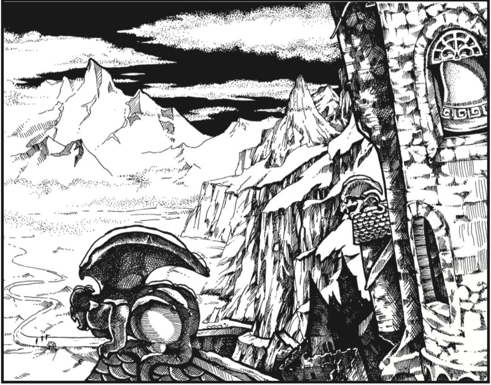
The rest of this section is meant to be an introduction for someone who is unfamiliar with the concept of fantasy role playing. More experienced readers may want to skip this material, but the novice should read them carefully.
Note: For readability purposes, Rolemaster uses standard masculine pronouns when referring to persons of uncertain gender. In such cases, these pronouns are intended to convey the meanings: he/she, her/his, etc.
The easiest way to understand a role playing game is to think of it as a work of fiction such as a novel or a play or a movie. In a novel the author determines the setting of the novel along with the actions of all of the characters and thus the plot. In a role playing game, the author (called the Gamemaster) determines the setting and some of the basic elements of the plot. The actions of the characters (and thus part of the plot) are determined during the game by the game “players” and the Gamemaster. Each “player” controls the actions of his “player character” or alter ego, while the Gamemaster controls the actions of all of the other characters (called non-player characters). Thus each player assumes the role of (role plays) his character and the Gamemaster role plays the non-player characters. A fantasy role playing game is a “living” novel where interaction between the actors (characters) creates a constantly evolving plot.
The Gamemaster also makes sure that all characters perform actions which are possible only within the framework of the setting that he has developed (his “fantasy” world). In a sense, the Gamemaster acts as a referee. This is where the “fantasy” part and the “game” part come into the definition of a fantasy role playing game. A Gamemaster creates a setting which is not limited by the realities of our world; thus, the setting falls into the genre of fiction known as “fantasy.” However, the Gamemaster commonly uses a set of “rules” which define and control the physical realities of his fantasy world. Using these rules turns the role playing “novel” into a game.
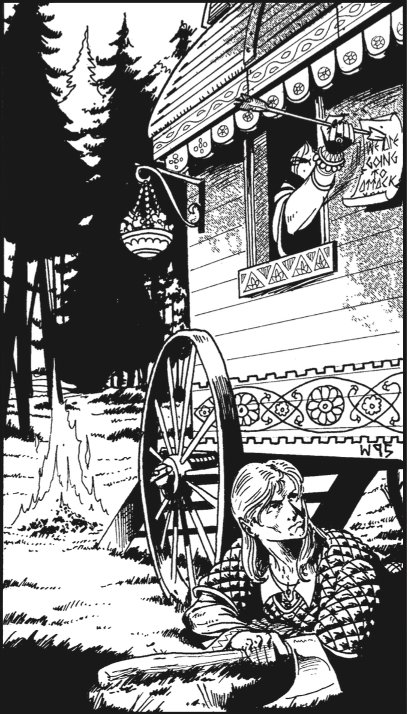
Thus, a fantasy role playing (FRP) game is set in a fantasy world whose reality is not defined solely by our world, but instead is defined by a set of game rules. The creation of the plot of a FRP game is an on-going process which both the Gamemaster and players may affect, but which neither controls. The plot is partially determined along with the setting, but it is heavily influenced by the interaction of the characters with one another and and random events.
Since fantasy role playing is a game, it should be interesting, exciting, and challenging. One of the main objectives of a FRP game is for each player to take on the persona of his (or her) player character, reacting to situations as the character would. This is the biggest difference between FRP games and other games such as chess or bridge. A player’s character is not just a piece or a card; in a good FRP game, a player places himself in his character’s position. The Gamemaster uses detailed descriptions, drawings and maps to help the players visualize the physical settings and other characters. In addition, each player character should speak and react to the other players as his character would. All of this creates an air of involvement, excitement, and realism (in a fantasy setting of course).
The Gamemaster has been described as “author” of the FRP game; actually, he functions as more than this. The Gamemaster not only describes everything which occurs in the game as if it were really happening to the player characters, but he also acts as a referee or judge for situations in which the actions attempted by characters must be resolved. The Gamemaster has to do a lot of preparation before the game is actually played. He must develop the setting and scenarios for the play of the game, using the game rules and material of his own design (or commercially available play aids). Until the players encounter certain situations during play, some material concerning the setting and the scenario is known only to the Gamemaster. In addition, the Gamemaster plays the roles of all of the characters and creatures who are not player characters, but still move and act within the game setting, affecting play.
Each player develops and creates a character using the rules of the game and the help of the Gamemaster (for the character’s background and history). Each player character has certain numerical ratings for his attributes, capabilities and skills. These ratings depend upon how the player develops his character using the rules of the game. Ratings determine how much of a chance the character has of accomplishing certain actions. Many of the actions that characters attempt during play have a chance of success and a chance of failure. Therefore, even though actions are initiated by the Gamemaster and the players during the game, the success or failure of these actions is determined by the rules, the characters’ ratings, and the random factor of a dice roll.
Finally, a fantasy role playing game deals with adventure, magic, action, danger, combat, treasure, heroes, villains, life and death. In short, in a FRP game the players leave the real world behind for a while, and enter a world where the fantastic is real and reality is limited only by the imagination of the GM and the players themselves.
This section provides an overview of the some of the key concepts and mechanisms of the Rolemaster Standard System. It also summarizes some of the key differences between this edition of Rolemaster and earlier editions, and it provides an overview of the RMSS and the RM product line. Finally, this section presents some definitions of some commonly used key terms along with the RMSS calculation and dice rolling conventions.
This section is meant to serve as a summary for and introduction to some of the key features of the RMSS. Some of the major factors that separate the RMSS from other FRP systems will be briefly described here. This discussion should be enough to allow many experienced fantasy role players to get the basic ideas behind this system, then each section (or product) dealing with a specific feature can be for details.
The basics of the RMSS are relatively simple to master. It is designed for those acquainted with FRP in general, or for those interested in a flavorful, detailed set of guidelines—not rules. The RMSS is intended for GMs who may wish to pick and choose their some of the parameters that define the environment of their game. ICE hopes that GMs will feel free to build upon the foundations provided.
The Rolemaster Standard System is designed to provide both the Gamemaster and his players with tremendous detail and flexibility in character development and the resolution of a wide variety of actions and activities.
The RMSS also provides a unique approach to the statistics that define a character’s physical and mental attributes (i.e., stats). Under these guidelines each stat is quite important, and no one or two stats clearly dominate. Rarely will a character be without flaws or a “chink in his armor.” A character must choose his strengths and weaknesses. In the RMSS there are 10 stats, each represented by a number between 1 and 100 (1-100). They provide detail and flavor and remain relatively simple to work with.
The stats include 4 physical characteristics: Strength, Constitution, Quickness, Agility. They also include 4 mental characteristics: Intuition, Empathy, Memory, Reasoning. Finally, there are two stats included that represent characteristics partially mental and partially physical: Presence, Self Discipline. These stats are described in detail in Section 5.0. Each stat may affect the ability of the character to perform specific actions; this is discussed in Section 5.4.
Each stat has two values. The potential (“ultimate”) value (genetically) that the character’s stat can obtain. The temporary value represents the value of the characteristic’s current level. The temporary stats can rise (due to character advancement and other factors) and fall (due to injury, old age, etc.). However, the potentials rarely change. Of course, the temporary stat for a particular characteristic can never be higher than the potential for the same characteristic. For example, a character could have a temporary Strength of 80 and a potential of 92; and the 80 would be his effective Strength for combat purposes (circumstances could raise or lower the 80 but never above 92). This feature is described in detail in Sections 5.1 and 12.0.
As a character advances in levels he develops and trains in certain abilities called skills and skill categories. His capability (i.e., rank) in each skill and skill category affects his chances of accomplishing certain actions and activities (e.g., fighting, maneuvering, spell casting, etc.). The key features of skills in this system are:
Each skill is grouped with other similar skills in a skill category. Both the skill and its skill category affect his chances of accomplishing certain actions.
Any character may develop any skill and skill category regardless of profession. However, depending upon the specific character’s training early in life, certain skills and skill categories require more or less effort relative to other characters. How much effort is required to develop a skill or skill category depends upon the profession chosen by the player.
Based upon the values of certain stats (Section 15.0), each character has a total amount of “effort” to devote to skill and skill category development at each level.
Each character has complete freedom in how to allocate his “effort” among the various skills and skill categories he decides to develop. Development costs will be the same for characters of the same profession and will tend to reduce the degree of variation. Yet, this “cost effectiveness” will direct development only along vaguely similar lines.
The skills and skill categories are the ones required by normal play, and a Gamemaster can easily add more if his specific game requires others. Skills are discussed in great detail in Section 6.0 and Appendix A-1.
Each character has a profession which reflects his training and inclinations in early life. A profession dictates the ease in which a particular skill or skill category may be developed, but it does not generally act to prohibit development. Thus, a player is allowed to enhance his abilities in certain skill areas which would not be accessible to his profession under other systems. Only the “cost” in time and lost opportunities in “easily developed skills” act to bias the selection process.
Each profession requires different “efforts” to develop each individual skill. For example, in order to gain a certain
expertise in using a sword, a Fighter might only expend 20% of the effort that a Magician might: this is because a Fighter is trained in physical activities (fighting in particular), while a Magician has spent much of his early life studying spells. However, the effort required for the same Fighter to learn to cast a spell might be 20 times that required of a Magician, and he would never be very effective with it. Twenty different professions are provided and discussed in detail in Section 4.0 and Appendix A-4.
Each character while adventuring will reach stages of development called experience levels (or just “levels”). At each new level the character becomes more powerful and skillful in his chosen areas of expertise. Ideally, for realism, the character would develop after each activity or experience. However, this is extremely difficult to handle in practice. It necessitates stopping action in the game, performing bookkeeping, calculating the value of the experience, and determining what the character learned. Thus, we limit these factors by allowing a character to develop only at discrete intervals called levels (this factor is common to many FRP systems). Levels are discussed in detail in Section 7.0.
It is often desirable to provide each character with certain factors that make him (or her) unique. This system already does this to a certain extent: 20 professions and complete freedom in skill development. We also provide a variety of other suggestions, including: 16 detailed cultures/races, role traits, equipment, detailed personal backgrounds, background options, training packages, talents, special items, hobbies, etc.
Arms Law applies the RMSS’s unique system for handing attacks to melee and missile combat. Its key features include:
A fantasy medieval melee and missile combat system with individual attack tables for twenty-nine weapons and statistics for dozens more.
Thirteen attack tables that integrate the size, instincts, and fighting patterns of a wide variety of animals, monsters, and practitioners of the martial arts.
Twelve critical strike tables that give specific, detailed damage descriptions for a variety of different types of attack results: slashing, puncturing, crushing, grappling, unbalancing, etc.
Two fumble tables that gives specific, detailed descriptions of the results of various types of weapon fumbles and attack failures.
One of the basic aspects of the RMSS is the use of spell lists and experience levels (or just levels). The ability to cast and learn spells is closely tied to a character’s level.
Spells are grouped into lists. A spell list is an ordering of spells based upon their level, intricacy, and potency. All spells in a list have common characteristics and attributes, although each may have vastly different effects and applications. Spell lists are grouped into categories based upon professions and realms of power (Channeling, Essence, and Mentalism). There are over 2,000 spell descriptions organized into 186 spell lists divided into:
1 set of “open” spell lists for each realm of power (i.e., spell lists that are learnable by characters in any profession of the realm and even by some professions outside the realm)
1 set of “closed” spell lists for each realm of power (i.e., spell lists are learnable by most characters who cast spells from the realm)
15 sets of professional “base” spell lists (i.e., a set of base spell lists are usually learnable only by characters of a specific profession)
1 set of “evil” spell lists for each realm of power (i.e., spell lists usually learnable only by “evil” characters)
3 sets of “other” professional “base” lists (i.e., spell lists associated with non-standard professions).
In addition, Spell Law uses the RMSS’s unique system for handing attacks using: critical strike tables (for heat, cold, electricity, etc.), a spell failure table, a resistance roll table, and a variety of spell attack tables.
Gamemaster Law is an aid for those who wish to create and employ an alternate world setting for their fantasy role playing game. It is designed to give Gamemasters an idea of the essential elements of a fantasy realm, and provides ways to develop a rich, consistent foundation upon which to build as their campaign progresses. It also provides a wealth of material that can help a GM handle difficult and unusual situations that can arise in a FRP game. Some key features include guidelines for:
Determining what type of game to run based upon the types of players available and the GM’s personality and skills.
Designing exciting and intriguing stories, NPCs, and backgrounds; and, letting them evolve to create an everchanging world for adventuring.
Enhancing the enjoyment of gaming sessions.
Tournament gaming and on-line gaming.
Using RMSS mechanisms for very specific situations: commerce & trading, healing, diseases, poisons, equipment, etc.
This section summarizes some of the key differences between this edition of Rolemaster and earlier editions. This material assumes that the reader is familiar with the earlier editions of RM.
Races & Cultures — Mixed Men and Half-orcs have been added. High Elves have been renamed to Grey Elves, Fair Elves to High Elves, Normal (Lesser) Orcs to Common Orcs, and Orcs (Greater) to Greater Orcs. Trolls are no longer included as potential characters in the RMSS. In addition, each Common Man and Mixed Man character belongs to one of six Cultures.
An extensive, one-page description of each race and culture is provided in Appendix A-3. Many of the system parameters for the races differ from the old values (e.g., SD stat mods for Elves are lower, there are new, race-specific skill rank progressions for Body Development and Power Point Development, etc.).
Professions — New: Layman (the old No Profession), Dabbler (an Essence Semi spell user), Magent (a Mentalism Semi spell user), and Paladin (a Channeling Semi spell user). The Healer is now a Channeling-Mentalism Hybrid spell user), and the Alchemist, Seer, and Astrologer are not included in the RMSS.
Each Hybrid spell user has three prime requisites (stats)— its two realm stats and Self Discipline (Healer: In/Pr/SD, Mystic: Em/Pr/SD, and Sorcerer: Em/In/SD).
A profession no longer has level bonuses associated with it, instead, it has fixed profession bonuses. An extensive, one-page description of each profession is provided in Appendix A-5.
Stats — Temporary stats are now generated by assigning 600 + 10d10 points. This is a one-to-one assignment for stats under 91, with a increased cost for stats above 90. Each potential stat is determined by rolling a number of dice related to the difference between the temporary and the potential. Stat gain rolls are also handled in a slightly different manner.
Stat bonuses are approximately one third of what they previously were. However, instead of averaging the stat bonuses applicable to a skill, you now just add the stat bonuses and three stat bonuses instead of two apply to most skills. This makes calculating the stat bonus for each skill much easier. Taking this new mechanism into account, stat bonuses are higher than before (e.g., +15 for a 90 stat and +30 for a 100 stat).
Skills — Most of the Companion skills have been incorporated and they have been totally reorganized into new groupings called skill categories. The total bonus for a skill is based upon its skill ranks and upon the rank of its skill category. Ranks in skills and skill categories must be developed separately, but a skill category rank affects all of the skills in that category (i.e., it is a “similar skill” mechanism).
The standard progression for a skill rank bonus is now: -15 if no ranks, +3 for ranks 1-10, +2 for ranks 11-20, +1 for ranks 21-30, and +0.5 for ranks over 30—the notation for this is “-15 • 3 • 2 • 1 • 0.5.” The standard progression for a skill category rank bonus is now: “-15 • 2 • 1 • 0.5 • 0.” So, if you develop one rank in a skill and one rank in its category each time you develop a skill, the combines progression is: “-30 • 5 • 3 • 1.5 • 0.5.” This is a bit more generous than the old progression of “-25 • 5 • 2 • 0.5 • 0.5” for skill ranks alone.
Some skill categories use a non-standard progression (e.g., Body Development, Power Point Development, Spell Lists, etc.). Skill categories with non-similar skills use a “Combined” progression of: “-30 • 5 • 3 • 1.5 • 0.5” for the skills and zero for all ranks of the skill category (i.e., development of the skill category gives no skill bonus). Certain skills can also be given lower (or higher) than normal DP costs by placing them in Occupation, Everyman, and Restricted skill categories—usually due to culture/ race, profession, or a factor of the individual GM’s world system.
Skill Development — With the new standard progression outlined above, you must develop two ranks (skill and skill category) to get the approximate skill rank bonus of the old system. To account for this, a character gets approximately twice the Development Points each level. In addition, since a skill category’s bonus applies to all skills in the category, developing multiple skills in the same category will effectively have a reduced DP cost.
There is no longer a DP cost of “#/*”—at most three ranks (#/#/#) can be developed in a skill (or skill category) each level. The ranks developed during adolescence skill development are now based upon the character’s culture/ race (i.e., DPs are not used).
DPs can now be used to develop Training Packages. A Training Package is a group of related ranks for skills and skill categories that can be developed at a reduced DP cost.
Spell List Development — Skill ranks are developed for each spell list—a spell is “learned” each time a rank is developed in its list. The DP cost for this varies based on the type of list (e.g., base, open, etc.), the number of the rank being developed, and how many different lists are developed in a given level advancement.
Background Options — A much wider variety of Background Options have been provided, including a balanced set of Talents and Flaws (see Appendix A-5).
Recovery & Exhaustion — Recovery and exhaustion for Power Points, Hits, and Exhaustion Points are formalized and handled in a new way.
Role Traits — An system of “role traits” is provided to help you develop your character’s motivation, personality, alignment, and physical appearance.
Performing Actions — The entire turn sequence has been redone to provide for a more fluid resolution of actions and activities. Each character may take up to three “actions” a round. A general decision on how fast to attempt to accomplish an action must be made: as a snap action (very fast, with a -20 modification ), as a normal action, or as a deliberate action (slow, but with a +10 modification). Within each of these types, actions are resolved based upon each character’s Initiative Roll (2d10+Qu bonus+mods).
In addition, the resolution of attacks has been generalized, combining all of the old attack resolution rules from Arms Law, Spell Law, and Character Law. The static maneuver tables have been expanded and standardized. The movement and encumbrance rules have been finetuned.
Finally, the old Extraordinary Spell Failure rules have been redone and incorporated into a spell casting static maneuver that is required for all spell casting that does not meet the “automatic spell casting” requirements.
This section provides some brief descriptions of the existing and planned products in ICE’s Rolemaster line. These products fall into two categories: core products (Arms Law, Spell Law, Gamemaster Law, and the Rolemaster Standard Rules) and non-core products.
The RM core products are the four products that make up the Rolemaster Standard System: Arms Law, Spell Law, Gamemaster Law, and the Rolemaster Standard Rules.
Rolemaster Standard Rules (RMSR) — This product provides all the guidelines and rules needed to play Rolemaster. Its primary parts are concerned with character definition, character design, performing actions, and outlining the Gamemaster’s tasks. Details of the RMSR are not covered here because it is the product you are currently reading. See Section 1.1.1 for some key features of the RMSR.
Arms Law (AL) — This product is a detailed fantasy/ medieval combat system covering the mechanics of weapon attacks, animal attacks, martial arts attacks, fumbles, and critical strikes. It has been designed to provide a logical, detailed, manageable procedure for resolving combat between individuals and small groups.
This combat system provides 29 weapon attack tables, each of which integrates the strengths and weaknesses of one specific weapon versus 20 different armor types. Additional guidelines are given for dozens of other weapons. AL also provides animal attack tables and martial arts attack tables which handle all kinds of unarmed attacks. To handle specific, detailed occurrences during combat, AL includes two fumble tables and a dozen different critical strike tables. See Section 1.1.2 for some other key features of AL.
Spell Law (SL) — This product deals with the integration of spells and magic into a fantasy role playing environment. Real skill in play is emphasized, since the choice of a spell and its application to a given situation become the key elements of success. To this end, SL describes over 2,000 spells, organized into three “realms of power” and keyed to 15 different professions.
The spells in SL are organized into “spell lists”, each of which consists of spells which are related in function or base application. Spell lists are grouped into categories based upon professions and realms of power (Channeling, Essence, and Mentalism). See Section 1.1.3 for some other key features of SL.
Gamemaster Law (GML) — This product is an aid for those who wish to create and employ an alternate world setting for their fantasy role playing game. It is designed to give Gamemasters an idea of the essential elements of a fantasy realm, and provides ways to develop a rich, consistent foundation upon which to build as their campaign progresses. See Section 1.1.4 for some other key features of GML.
The non-core Rolemaster products fall into four broad categories: secondary “Law” products, source products, companion products, and other products.
These products are specific topic Rolemaster rules books. Some potential topics/titles include:
War Law — The original RM mass combat system is still usable with the RMSS. It will eventually be reworked to more closely mesh with the RMSS and to make “unit generation” more workable.
Sea Law — The original RM ship combat system is still usable with the RMSS.
Equipment Law — A compilation of adventuring equipment and a system for defining and integrating various technology levels into a RM game.
Talent Law — A point cost based system formalizing and detailing talents, powers, and flaws available through background options.
These products provide specific topic RM source material and play aids. Some potential topics/titles include:
Creatures & Monsters — ICE’s compendium of information and statistics for two key elements of fantasy role playing: creatures, and encounters. It also includes guidelines and statistics for dozens of new races.
Rolemaster GM Screen — A GM screen with a summary booklet of some of the most commonly accessed tables and charts.
Rolemaster Character Sheets — Contains character sheets individualized for the various professions.
Races & Cultures — An expanded compendium of information and statistics for RM races and cultures.
Treasures & Riches — An expanded collection of magic items and treasures.
Heroes & Rogues — Fully developed RM characters for use as PCs and NPCs.
Weapons & Armor — A compendium of various types of weapons and armor for RM.
These products provide RM optional rules and variants on a focused topic. Some potential topics/titles include:
| Arcane Companion | Essence Companion |
| Channeling Companion | Mentalism Companion |
| Arms Companion | Stealth Companion |
| Martial Arts Companion |
The Shadow World™ Series — Modules and adventures in a rich, self-contained fantasy environment designed specifically for use with for RM, but which can be used as isolated or hidden areas in any GM’s campaign world.
Space Master™ — ICE’s science fiction role playing system is compatible with RM, allowing Gamemasters to inject sci-fi elements into their FRP games and vice versa.
Middle-earth Role Playing™ — A complete system specifically designed to introduce people to fantasy role playing in J.R.R. Tolkien’s Middle-earth. It is suitable for those who have never before played a FRP game, as well as more experienced gamers who are looking for a realistic, easy to play FRP system for low-level adventures. It is compatible with Rolemaster and can serve as a great introduction to RM for novices.
ICE’s Middle-earth® Support Products — A wide variety of rules, guidelines, and modules for use with fantasy role playing in J.R.R. Tolkien’s Middle-earth. Completely compatible with both RM and Middle-earth Role Playing.
Each die used in Rolemaster is either a 10-sided or a 20-sided dice which gives a result between 0 and 9. If two of these dice are used, a variety of results can be obtained. However, results between 1 and 100 are the primary basis of the RMSS (i.e., RM is a “percentile” system).
Note: These dice can be obtained at your local hobby and game stores.
1-100 Roll (1d100) — Most of the rolls in Rolemaster are “1-100” rolls (also called “d100” rolls). To obtain a 1-100 result roll two dice together—one die is treated as the “ten’s” die and the other as the “one’s” die (designate before rolling, please). Thus a random result between 01 and 100 (a “00” is treated as 100) is obtained.
Example: The GM asks a player to make a 1-100 roll. The two dice are rolled; the ten’s die is a “4” and the one’s die is a “7.” Thus the result is “47.”
Low Open-ended Roll — To obtain a “low open-ended roll” first make a 1-100 roll. A roll of 01-05 indicates a particularly unfortunate occurrence for the roller. The dice are rolled again and the result is subtracted from the first roll. If the second roll is 96-00, then a third roll is made and subtracted, and so on until a non 96-00 roll is made. The total sum of these rolls is the result of the low open-ended roll.
Example: The GM asks a player to make a low open-ended roll, and the initial roll is a 04 (i.e., between 01 and 05). A second roll is made with a result of 97 (i.e., between 01 and 05); so a third roll is made, resulting in a 03. Thus, the result of the low open-ended roll that the GM requested is -96 (= 04 - 97 - 03).
High Open-ended Roll — To obtain a “high open-ended roll” first make a 1-100 roll. A roll of 96-00 indicates a particularly fortunate occurrence for the roller. The dice are rolled again and the result is added to the first roll. If the second roll is 96-00, then a third roll is made and added, and so on until a non 96-00 roll is made. The total sum of these rolls is the result of the high open-ended roll.
Example: The GM asks a player to make a high open-ended roll, and the initial roll is a 99 (i.e., between 96 and 100). A second roll is made with a result of 96; so a third roll is made with a result 04. Thus, the result of the high open-ended roll that the GM requested is 199 (= 99 + 96 + 04).
Open-ended Roll — An open-ended roll is both high open-ended and low open-ended.
1-10 Roll (1d10) — In instances when a result (roll) between 1 and 10 is required, only one die is rolled. This gives a result between 0 and 9, but the 0 is treated as a 10. Such a roll is referred to as “1-10” or “d10.”
1-5 Roll (1d5) — Roll one die, divide by 2 and round up (“d5”).
1-8 Roll (1d8) — Roll one die; if the result is 9 or 10, reroll until a 1 to 8 result occurs (“d8”).
5-50 Roll (5d10) — Roll 1-10 five times and sum the results.
2-10 Roll (2d5) — Roll two dice, divide each result by 2 (round up), and then add the two results to obtain the “2- 10” (“2d5”) result.
Other Required Rolls — Any other required rolls are variants of the above.
Certain results on some rolls indicate an immediate effect—no modifications (or bonuses) are considered. These rolls are marked on the appropriate charts with a UM. For example, all weapon attacks result in a fumble if the initial unmodified 1d100 roll falls within the fumble range of the weapon.
When making calculations and using the formulae in the RMSS, the results often do not come out evenly.
You should maintain fractions until you come up with a final result that will be used in play.
But, whenever a final result has a fractional remainder, it is always rounded up to the nearest whole number (i.e., fractions less than 0.5 goes 0, and greater than or equal to 0.5 goes to 1).
Example: Darien has development stats of 46, 57, 73, 91, and 99. His available development points are equal to: (46+57+73+91+99)÷5 = 366 ÷ 5 = 73.2. This rounds up to 73 DPs. If the stats were 46, 60, 73, 91, and 99, the DPs would be: (46+60+73+91+99)÷5 = 369 ÷ 5 = 73.8. This rounds up to 74 DPs.
Example: Darien has 25 skill category ranks in Power Awareness, his skill category rank bonus is equal to: (10x2)+(10x1)+5x(0.5) = 20+10+2.5 = 32.5. This rounds up to 33.
The majority of unique terms found in the RMSS are not described below; rather they are usually described when they are used in the text. The terms defined below are frequently used or are very important for using and understanding the RMSS.
Action: An action is one of the activities which a character may perform during a round (10 seconds).
Animal: A living creature capable of feeling and voluntary motion, but excluding those characterized as beings.
Area Attack Spell: An elemental attack spell that attacks an area rather than a specific target; e.g., Cold Ball, Fire Ball, etc.
Attack Roll: A “Roll” that is used to determine the results of a melee or missile attack.
Basic Attack Spell: A spell that attacks a target, but which is not an elemental attack spell.
Base Spell List: A spell list that is easily learnable only by members of one specific profession.
Being: Any intelligent creature, including all humanoid types, enchanted creatures, etc. Intelligence should be characterized by system and/or Gamemaster.
Campaign: An ongoing fantasy role playing game which takes place as a series of connected adventures, with respect to both time and circumstance.
Chance: Often an action or activity has a “chance” of succeeding or occurring, and this chance is usually given in the form of # %. This means that if a roll (1-100) is made (see below) and the result is less than #, then the action or activity succeeds (or occurs); otherwise it fails. Alternatively, you can roll (1-100) and add the result to the #; if the result is greater than 100, then the action or activity succeeds (or occurs); otherwise it fails.
Channeling: One of the realms which provide the source of power for spells (see Section 4.1).
Closed Spell List: A spell list that is easily learnable only by the Pure and Hybrid spell users of the spell list’s realm.
Combat Roll: See “Attack Roll.”
Concussion Hits: See “Hits.”
Critical Strike: Unusual damage due to a particularly effective attack. Note: The term “critical” (or just crit) will often be used instead of “critical strike.”
Defensive Bonus (DB): The total subtraction from a combat roll due to the defender’s advantages, including bonuses for the defender’s quickness, shield, armor, position, and magic items (see Section 23.2).
Dice Roll: See Roll.
Directed Attack Spell: An elemental attack spell that attacks a specific target; e.g., Ice Bolt, Fire Bolt, etc.
Downed: When a combatant falls to the ground, he is considered downed. This does not mean prone. It is presumed that the combatant is still moving.
Elemental Attack Spell: An spell which creates and uses fire, cold, water, ice, or electricity to attack a target. The “elements” created by these spells are real when the spell is cast.
Essence: One of the realms which provide the source of power for spells (see Section 4.2).
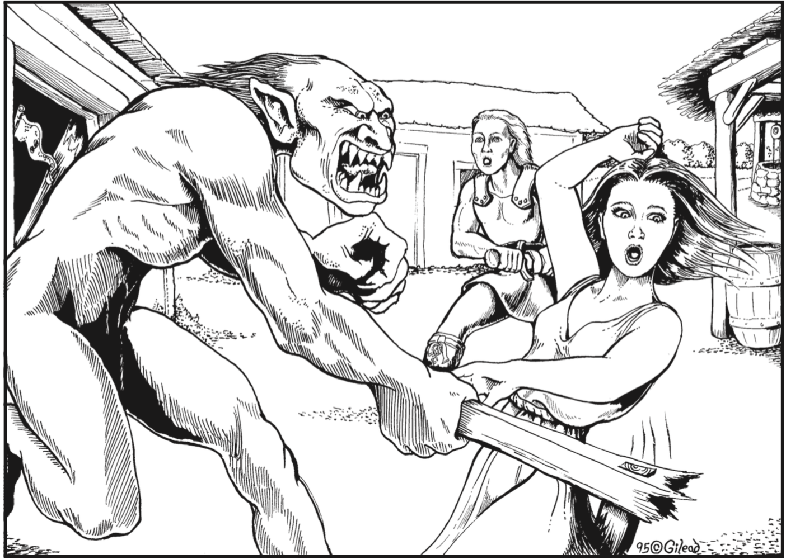Experience Level (Level): A character’s level is a measure of his current stage of skill development, and usually is representative of his capabilities and power.
Failure: See “Spell Failure.”
Fire: To make a missile attack (verb), or a number of missile attacks (noun).
Fumble: An especially ineffective attack which yields a result that is disadvantageous for the attacker.
Gamemaster (GM): The gamesmaster, judge, referee, dungeonmaster, etc. The person responsible for giving life to a FRP game by creating the setting, world events and other key ingredients. He interprets situations and rules, controls non player characters, and resolves conflicts.
Group: A collection of player characters.
Herbs: A plant or plant part valued for medicinal qualities. Hits (Concussion Hits): Accumulated damage, pain, and bleeding, that can lead to shock, unconsciousness, and sometimes death (also called Concussion Hits). Each character can take a certain number of hits before passing out (determined by his “Body Development” skill).
Hybrid Spell User: A spell user who can easily learn spells in two different realms.
Inanimate: Not having qualities associated with active, living, organisms; not animate.
Initiative: The factor that helps determine the order in which combatants resolve their attacks; e.g., the combatant with the highest initiative attacks first.
Inorganic: Involving neither organic life or products of organic life.
Level: See “Experience Level.”
Lord Spell: A spell is keyed to a 20th level effect and will normally be defined in multiples/increments of 20.
Maneuver Roll: A roll that is used to determine the results of a maneuver.
Maneuver: An action performed by a character that requires unusual concentration, concentration under pressure, or a risk (e.g., climbing a rope, balancing on a ledge, picking a lock, etc.). Maneuvers requiring movement are “Moving Maneuvers” (MM), and other maneuvers are called “Static Maneuvers” (SM).
Martial Arts (MA): Forms of attack and self-defense which involve specialized mental and physical training and coordination. Most unarmed combat fall into this category.
Mass Spell: A spell with its “# of targets” or its “area of effect” based upon the caster’s level.
Melee: Hand-to-hand combat (i.e., combat not using projectiles, spells, or missiles) where opponents are physically engaged— be it a fist fight, a duel with rapiers, or a wrestling match.
Mentalism: One of the realms which provide the source of power for spells (see Section 4.3).
Missile weapon: In the RMSS, this indicates a low velocity airborne projectile, usually from a manually fired weapon. Such weapons include an arrow from a bow, a quarrel from a crossbow, a stone from a sling, etc. Thrown weapons are also included in this area. Normally, missile weapons do not include projectiles fired by explosions or other high-velocity propulsion means (e.g., guns are “projectile weapons”).
Non Attack Spell: A spell which does not attack a target.
Non Spell User: A character with very little spell casting capability, but with a great deal of capability in non-spell areas.
Non-Player Character (NPC): A being in a fantasy role playing game shows actions are not controlled by a player, but instead are controlled by the Gamemaster.
Offensive Bonus (OB): Each character has an “offensive bonus” when he is making an attack—this OB can include bonuses for the character’s stats, superior weapon, skill rank, magic items, etc. This OB is added to any attack rolls that are made when he is using that particular attack (see Section 23.3).
Open Spell List: A spell list that is easily learnable by any profession of the spell list’s realm.
Organic: Of or deriving from living organisms.
Orientation Roll: A roll representing a character’s degree of control following an unusual action or surprise.
Parry: The use of part of a character’s offensive capability to effect an opponent’s attack.
Player Character (PC): A character whose actions and activities are controlled by a player (as opposed to the Gamemaster). Player: A participant in a fantasy role playing game who controls one character, his player character.
Power Point Multiplier (PP Multiplier): An item that increases the wielder’s inherent power points (see Section 32.1).
Power Points (PP): A number which indicates how many spells a character may intrinsically cast each day (i.e., between periods of rest). In order to cast a spell, the caster must expend a number of “power points” equal to the level of that spell.
Profession: A character’s profession is a reflection of his training and thought patterns; in game terms, it affects how much effort is required to develop skill in various areas of expertise.
Projectile weapon: As opposed to a missile weapon, this indicates a device which mechanically fires a high-velocity projectile (e.g., a gun).
Prone: When a combatant stops moving (and usually drops to the ground), he is considered prone.
Pure Spell User: A spell user who can easily learn spells in only one of the three realms. Most spell using professions fall into this category.
Realm: All spells and the power required to cast spells are classified in the three “realms” of power: Essence, Channeling, and Mentalism (see Section 4.0).
Resistance Roll (RR): A dice roll which determines whether or not a character successfully resists the effect of a spell, poison, disease, or some other form of adversity.
Roll: Two different colored 10-sided dice are used to resolve any activity requiring a “Roll;” such dice are available in most hobby and toy stores. Each of these dice has two sets of the numbers: 0,1,2,3,4,5,6,7,8, and 9. These dice can be used to obtain a variety of results. These various results are described in Section 1.1.4.
Round: The time (10 seconds) required to perform one action.
Self-reloading: Refers to any weapon which reloads (or recharges) itself and is ready for another shot almost immediately (i.e., it is capable of two attacks in the same round). Most projectile weapons fall into this category, while normal bows and thrown weapons do not. Normally self-reloading weapons only occur in FRP games in the form of magic items.
Semi Spell User: A spell user with some spell casting capability in one realm, but also with considerable non-spell capabilities. A character is a Semi spell user by virtue of his profession only. Non spell users who somehow learn spells are still termed Non spell users.
Session: A single sitting of game adventure. A number of sessions form a campaign.
Shot: A missile attack.
Skill: Training in an area which influences how effectively a character is able to perform a particular action or activity. “Skill Rank” is a measure of the effectiveness of a specific skill (see Section 6.0 and Appendix A-1).
Skill Category: A grouping of related skills that require the same approximate effort to develop. “Skill Category Rank” is a partial measure of the effectiveness of the specific skills in that category (see Section 6.0).
Slaying item or weapon: An item or weapon specifically designed to combat and/or destroy a being or type of being (e.g., a Dragon-slaying sword or staff).
Spell Adder: An item that allows its wielder to cast a set number of spells without expending power points (see Section 32.1).
Spell Failure: This occurs when a particularly low roll is made when casting a spell; it indicates possible malfunction or backfiring of the spell.
Spell Level: The minimum skill rank for the spell’s list that is necessary for a spell user to know or inherently cast that particular spell.
Spell List: A grouping and ordering of related spells based upon a correlation of level, intricacy, and potency of the spells. A character who has developed (i.e., “learned”) a spell list to a specific skill rank is able to cast a spell from that list if its level is less than or equal to that skill rank.
Spell points: The same as the term Power Points.
Stat (Characteristic): One of 10 physical and mental attributes which are considered most important to an adventurer in a FRP game. Stats affect how well a character develops his skills, moves, fights, takes damage, absorbs information, etc. Stats in the RMSS are gauged on a scale from 1-100. To convert from a 3-18, simply multiply be 5 and add 5.
Stat Bonus: Each stat is assigned a bonus that is used to modify skill checks.
Static Maneuver (SM, Static Action): An action performed by a character which requires unusual concentration or thought under pressure and does not involve pronounced physical movement.
Swing: A melee attack (noun), or to make a melee attack (verb).
Target: The term “target(s)” refers to the being(s), animal(s), object(s), and/or material that a melee attack, missile attack, or spell attempts to affect.
True Spell: A “True” spell is the highest level version of a specific spell type. Its potency will define the upper limit of the effect(s) derived from a given spell.
Wound: An injury in which the skin is torn, pierced, or cut.
The Rolemaster Standard System (RMSS) has four separately indexed sets of “core” rules:
| Product | Referencing Prefix | |
| Rolemaster Standard Rules (RMSS) | none | |
| Arms Law | AL | |
| Spell Law | SL | |
| Gamemaster Law | GML | |
In general, a specific rules “section” in the RMSS is referenced by using the abbreviation for the appropriate set of rules (no prefix for the product you are currently reading, the word “Section,” and the appropriate section number (or numbers or range of numbers).
Example: This text is in “Section 2.0.” The introductory material in Arms Law is in “AL Section 1.0.” The introductory material in Spell Law is in “SL Section 1.0.” The introductory material in Gamemaster Law is in “GML Section 1.0.”
Note: Other, non-core products will refer to the sections in this product (i.e., the Rolemaster Standard Rules) with a “RMSR” prefix.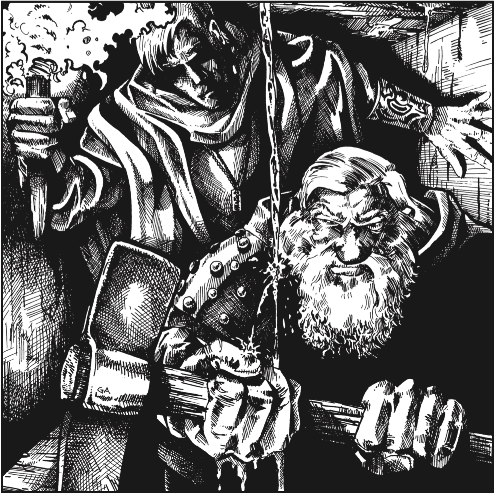
The Gamemaster should first skim the rules to get an overall view of the system. Then he should read all of the rules in the RMSR, AL, SL, and GML thoroughly. If a section is not understood immediately, it should be marked and referred to again after all of the rules have been read. Examples are included to aid in absorbing the rules. The Gamemaster need not memorize or fully analyze the significance of all of the rules at first. The rules are organized in such a fashion that many situations can be handled by referring to specific rules sections when they first arise.
The Gamemaster should also read the optional rules (Appendix A-9) and decide which he feels are appropriate for his game and world system. He should make sure that the players are clear as to which are to be used and which are not to be used.
The players should first read Sections 1.1-1.3 to get an overview of the component parts of the RMSS. Next, they should skim Part II (Sections 3.0-10.0) to get an idea of the major factors affecting a character. Then they should generate a character by following the procedure and examples outlined in detail in Part III (Sections 11.0-17.0), referring to Part II for explanations of the various aspects of a character.
Before play begins, the players should also read (or have explained to them) Part IV (Sections 18.0-25.0) so that they will understand what their options are in a tactical (usually combat) situation. In addition, players whose characters are spell users should read Section 26.0 in order to obtain an understanding of the spell casting process. It is not absolutely necessary for the players to immediately read the rest of the RMSS material, since much of that material is concerned with how the Gamemaster can handle the setting of the game, the plot elements, and other factors. However, a complete reading of the system will enable the players to understand the mechanisms which govern play.
When a player has made his initial choices for his character, he should get a copy of the page for his character’ s culture or race (Appendix A-3) and the page for his profession (Appendix A-4). Most of the information necessary for creating his specific character will be summarized on these two pages.
In a fantasy role playing game, each of the “players” controls the actions of his “player character,” while the Gamemaster controls the actions of all of the other characters (called non-player characters). Thus, one of the main objectives of a FRP game is for you to take on the persona of your player character, reacting to situations as your character would. This is the biggest difference between FRP games and other games such as chess or bridge. Your player character is not just a piece or a card. In a good FRP game you place yourself in your character’s “role.”
A role playing game deals with adventure, magic, action, danger, combat, treasure, heroes, villains, life, and death. So, by taking on the role of your characters, you can leave the real world behind for a while, and enter a world where the fantastic is real and reality is limited only by your imagination and that of the other players and the Gamemaster.
Your character will have certain factors that define his attributes, capabilities, and skills. These factors determine how much of a chance your character has of accomplishing certain actions. Many of the actions that your character will attempt during play have a chance of success and a chance of failure. Therefore, even though actions are initiated by the Gamemaster and the players during the game, the success or failure of these actions is determined by the Rolemaster rules, the factors that define your character and the random factor of a roll of the dice.
The specific factors that define your character are presented and discussed in the rest of Part II (Sections 3.0–10.0). Part III (Sections 11.0-17.0) presents the actual character design process, while Part IV (Sections 18.0-26.0) presents the guidelines for performing actions.
Cultural and racial characteristics for a fantasy role playing game are heavily dependent upon the world system being used by the Gamemaster. This section presents some of the “classic” races and cultures from mythology, literature and fantasy role playing. Each race and culture has a full description in Appendix A-3.
A Gamemaster should determine which races and cultures are appropriate for his world system, as well as incorporating any additional races deemed necessary. A Gamemaster may incorporate other races and cultures into his world using the same factors outlined in this section. An upcoming Rolemaster sourcebook, Cultures & Races, will provide a wider variety of cultures and races.
Each character must have a race, and each Common Man and Mixed Man must have a culture. The Race Abilities Table T-1.1 provides the racial abilities and characteristics that influence play in a fantasy role playing game. Section 32.2 provides racial modifications to the effects of death and injury.
Full descriptions for each race can be found in Appendix A-3. The twelve standard Rolemaster races are:
| Common Men | Mixed Men | High Men |
| Wood Elves | Grey Elves | High Elves |
| Half-elves | Dwarves | Halflings |
| Common Orcs | Greater Orcs | Half-orcs |
Each Common Man and Mixed Man character must have a “culture”—one of the six given in Section 3.2 or another culture keyed to the GM’s world.
Each Common Man and Mixed Man character must have a culture. Full descriptions for each culture can be found in Appendix A-3. The six standard Rolemaster cultures are:
| Urbanmen | Ruralmen | Nomads |
| Woodmen | Hillmen | Mariners |
The chief racial factors affecting a character are given in the Race Abilities Table T-1.1:
Stat bonus modifications
Resistance Roll modifications
Body Development skill rank bonus progressions (see Section 6.0 & 8.3)
Power Point Development skill rank bonus progressions (see Sections 8.1 and 8.2)
Background Option information (see Section 14.0)
Certain races will have advantages in certain of these areas, but penalties in others. For example, Elves have better stat bonuses than Common Men but they get fewer Background Options.
Note: Different races also have different modifications to the effects of death and injuries. These modifications are presented in Section 32.2.
The racial racial modifications to stat bonuses apply to the basic stat bonuses described in Section 5.4.
A Resistance Roll modification is added directly to a Resistance Roll (see Sections 8.7 and 21.1) made against an appropriate spell, poison, or disease.
Language can be a unifying element among groups with varying racial or cultural backgrounds. On the other hand, it can also be a barrier which can lead to the destruction of a hearty group of adventurers. Since most worlds embrace a number of tongues, and few characters know all the languages, translators and cooperative efforts may be necessary to solve the language problems. By having each player’s character know and/or understand (to varying degrees) different languages, a tremendous amount of diversity can be injected into the game.
A character’s fluency and literacy in a particular language is determined by the skill rank which the character has achieved in “language” skill for that language (see Section 6.0 and Appendix A-1.12).
The Gamemaster should decide which languages are automatically known by each of the races in his world system. Appendix A-3 provides suggested starting languages and easily learnable languages for each race and culture. Each character may then expand on this base through the skill acquisition process (see Sections 13.0 and 15.0).

Each character must have a profession. A character’s profession reflects the fact that early training and apprenticeship have molded his thought patterns; affecting his ability to develop certain skills and capabilities. A profession does not prohibit the development of skills, it merely makes some skills harder and others easier to develop. Any character can develop any skill under this system.
Each profession has a full description and specifications in Appendix A-4. Every profession falls into one of six different categories based upon its area of concentration:
| Category | Spell User Type | |
|---|---|---|
| The realm of Channeling | Pure | |
| The realm of Essence | Pure | |
| The realm of Mentalism | Pure | |
| The realm of Arms | Non | |
| Combinations of two realms of power | Hybrid | |
| Combinations of Arms and a realm of power | Semi | |
Professions are classified according to one of four types of spell users: Non spell users, Pure spell users, Hybrid spell users, and Semi spell users. This classification determines a character’s Development Point costs for developing skill ranks for various types of spell lists (see Section 15.2). In addition, Pure spell users get to choose four extra base spell lists (see Section 11.4).
Pure concentrate on one realm of power.
Hybrid concentrate on two realms of power.
Semi concentrate on a realm of power & the realm of Arms.
Non concentrate on the realm of Arms.
For each profession, some of the ten stats are called the profession’s “prime stats.” A character must have at least 90s in each of his prime stats (see Section 12.1).
One the prime stats for each spell using profession is designated as a “realm stat” (two in the case of Hybrids). The stat is Intuition for Channeling users, Empathy for Essence users, and Presence for Mentalism users.
Each profession has fixed “profession” bonuses that apply to certain skill categories (see Section 11.2).
Channeling is the power of the deities of a given world as channeled through their followers or other spell users. It is religious in nature and independent of the Essence. A spell user of Channeling draws directly on the power of his deity, even though this “usually” does not require the conscious cooperation of the deity. Thus spells of this realm do not necessarily reflect the nature of the deity as long as the spell user is using relatively subtle spells (i.e., healing, detection, etc.). More powerful and significant spells such as death spells and the revival of the dead might require the active consent of a deity, depending upon the world system being used by the Gamemaster.
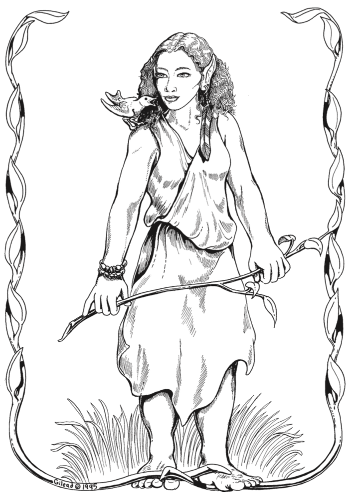
Metal interferes with the drawing of power from deities. So wearing metal armor or a metal helmet may interfere with casting a Channeling spells (see Section 26.0). In addition, only a small amount of metal may be carried on the person of a spell user of Channeling without interfering with casting Channeling spells (see Section 26.0).
Cleric and Animist are Pure spell user professions which concentrate primarily on using Channeling power from their deities to create magical effects and cast spells.
Cleric — Clerics are the basic Channeling spell users. Clerics are Pure spell users of Channeling who have concentrated in spells which require direct power from their deities. Their base spells deal directly with life: communing with deities, summoning live creatures, protection from servants of opposing deities, and direct Channeling from their own deities. These spell users are the most powerful of the spell users of Channeling, but they are also the most restricted in the sense of heeding the desires or alignment of their deity (to be determined by the Gamemaster). They have the ability to learn, albeit at heavy cost, the use of any weapon.
Prime Stats: Intuition and Memory.
Animist — Animists are Pure spell users of Channeling (e.g. druids, Shinto priests, etc.) specializing in studies and power concerning living things, both animal and vegetable. Their base spells deal with plants, animals, nature in general and weather. They generally develop the skill of riding (and controlling) animals to a high level.
Prime Stats: Intuition and Memory.
Essence is the power that exists in everyone and everything of and on a given world. It has been known in other sources as the Tao, Magic, Unified Field, the Force etc. A spell user of the Essence taps this power, molds it, and diverts it into spells. Most powerful Essence spells reflect this and are almost elemental in nature: fire, earth, water, wind, light, cold, etc.
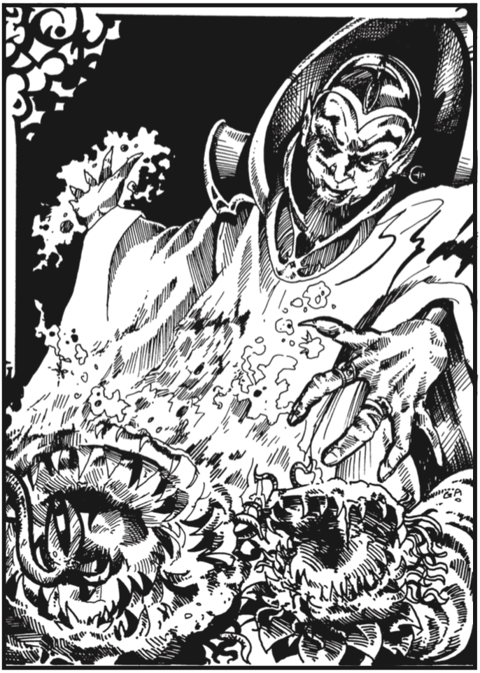
The more inert material that is on the person of the spell user of Essence, the more difficult it becomes to manipulation the Essence. Thus, wearing armor, heavy clothing, and a helmet will interfere with the casting of Essence spells (see Section 26.0). In addition, only a small amount of other material may be carried on the person of a spell user of Essence without interfering with casting Essence spells (see Section 26.0).
Magician and Illusionist are Pure spell user professions which concentrate primarily on manipulating the Essence that surrounds us all to create magical effects and cast spells. Characters in these professions can acquire knowledge of things magical and how to use them relatively quickly, but they are terribly handicapped in developing arms skills since they must discipline their minds in pursuit of their profession. Like spell users generally, they are less adept than Arms users at the skills of maneuvering and combat.
Magician (Mage) — Magicians are the basic manipulators of the Essence. Magicians are Pure spell users of Essence who have concentrated in the elemental spells. Their base spells deal mainly with the elements earth, water, air, heat, cold and light.
Prime Stats: Empathy and Reasoning.
Illusionist — Illusionists are less able to manipulate the Essence to overpower others, instead developing skills to mislead them. Illusionists are Pure spell users who have concentrated in spells of misdirection and illusion. Their base spells deal mainly with the manipulation of elements which affect the human senses: sight, sound, touch, taste, smell, mental impulses, and the combination of these senses. Illusionists have advantages in perception, stalking, and hiding over other spell users.
Prime Stats: Empathy and Reasoning.
Mentalism is the power of the Essence channeled through the mind of the spell user, who in effect acts as a very, very minor deity for these purposes. Thus, Mentalism is a very personal power, and even the most powerful spells are usually limited by the senses and perceptions of the spell user. Similarly, such spells are usually limited to affecting the caster or one particular target.
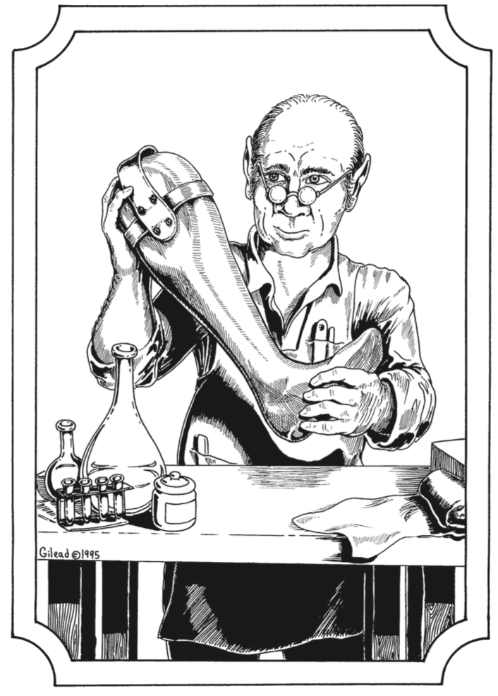
Any head covering interferes with the power of Mentalism spells, so wearing helmets will interfere with the casting of Mentalism spells (see Section 26.0).
Mentalist and Lay Healer are Pure spell user professions which manipulate their own personal Essence, and the Essence immediately around them with their minds in order to perform magical functions.
Mentalist — Mentalists are the basic spell users of Mentalism who have concentrated on spells which deal with the interaction of minds. Their base spells deal with the detection of mental Presence, mental communication, mind control, mind attack, mind merging, and sense control.
Prime Stats: Presence and Self Discipline.
Lay Healer — Lay Healers can aid the recuperative powers of others. Lay Healers are Pure spell users of Mentalism who have concentrated on spells which heal people and animals. Their base spells deal with the specific healing of certain diseases and injuries: organs, blood, muscles, bones, and concussion hits.
Prime Stats: Presence and Self Discipline.
The professions of Fighter, Thief, Rogue, Warrior Monk, and Layman concentrate primarily on acquiring skill in the realm of Arms. These characters have relatively easy times learning the use of weapons and the skills of maneuver and manipulation, but they will find it difficult to develop spell using ability. These professions have no trained realm of power and thus can only learn spells at great effort and cost (if at all according to the Gamemaster’s discretion). Even then their spells are of very limited potency. If a Non spell user does learn to cast spells, he usually concentrates on spells from one realm—each Non spell user must choose one realm of magic to concentrate on (see Section 11.3).
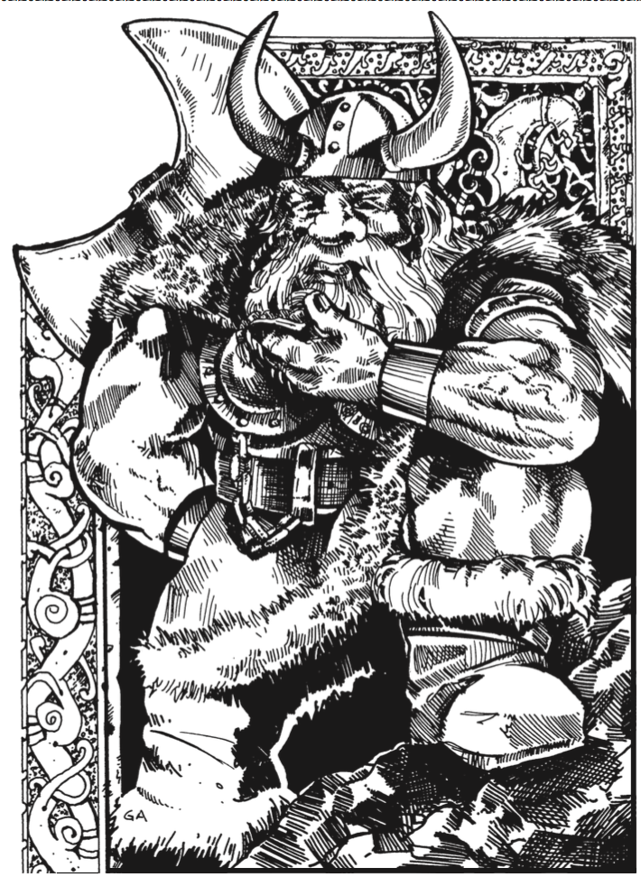Fighter (Warrior) — Fighters are the primary arms specialists. Fighters will find it easy to develop a variety of different weapons and to wear heavier types of armor. They are less skilled in maneuvering and manipulating mechanical devices such as locks and traps (though they are still superior in those areas to spell users) and have the greatest difficulty in learning anything connected with spells.
Prime Stats: Constitution and Strength.
Thief (Scout) — Thieves are specialists at maneuvering and manipulating. They have the easiest time learning mechanical skills such as picking locks and disarming traps and are fairly good at picking up weapons skills. Thieves are also unusually adept at stalking, hiding, climbing, and perception. They rarely wear heavy armor, although armor does not especially hinder the exercising of their professional abilities.
Prime Stats: Agility and Quickness.
Rogue — Rogues are characters with some expertise in thiefly abilities and more specialized knowledge of arms than that possessed by Fighters. Normally a Rogue will be almost as good as a Fighter with one weapon of his choice. The cost, in development points, of developing his thiefly skills will generally not allow him to be as good in these areas as a Thief, but his flexibility is unmatched by either profession.
Prime Stats: Agility and Strength.
Warrior Monk (Martial Artist) — Warrior Monks are experts at maneuvering and martial arts. Warrior Monks learn to use normal weapons, although not as easily as others of this realm; they prefer to utilize unarmed combat.
Prime Stats: Quickness and Self Discipline.
Layman (Jack-of-all-trades, Generalist, Everyman, Multifarian) — Normally each character has an “adventuring” profession, reflecting how his early training and life have moulded his thought patterns. However, the Layman profession represents characters who do not have a standard “adventuring” profession. Most non-adventuring NPCs will have the Layman profession.
Prime Stats: None.
Sorcerer, Mystic, and Healer are Hybrid spell user professions, each of which combines some of the powers of two different realms of magic. They can obtain the power of the most potent Pure spell users only in a very restricted set of spells. However, they are much more flexible since they have easy access to two realms of power.
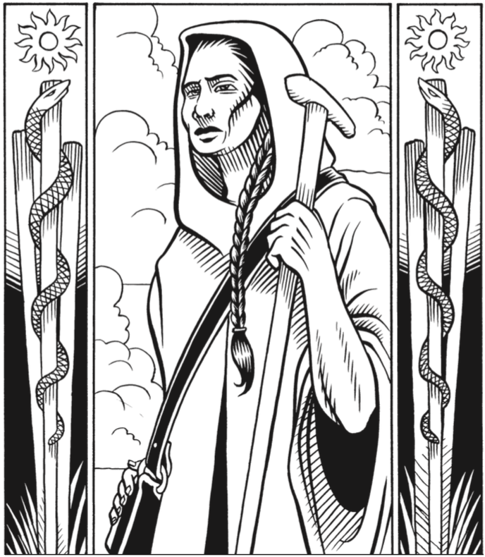
The conditions which interfere with casting spells from each of the three realm (see Sections 26.0) also interfere with a Hybrid spell user casting a spell. For example, a helmet will interfere with casting a Mentalist spell. When casting one of the spells from his base lists, he suffers the interference from both realms.
Healer — Healers are Hybrid spell users who combine the realms of Channeling and Mentalism; they channel power to take wounds from others and use the enormous recuperative power of their bodies to heal the wounds once taken. Thus, a Healer could heal a person by taking his patient’s injury upon himself and then healing this injury gradually.
Prime Stats: Intuition, Presence, and Self Discipline.
Mystic — Mystics are Hybrid spell users who combine the realms of Essence and Mentalism; they have concentrated on subtle spells of misdirection and modification. Their base spells deal with personal illusion as well as the modification of matter.
Prime Stats: Empathy, Presence, and Self Discipline.
Sorcerer — Sorcerers are Hybrid spell users who combine the realms of Essence and Channeling, concentrating on spells of destruction. Their base spells deal with the specific destruction of animate and inanimate material.
Prime Stats: Empathy, Intuition, and Self Discipline.
Ranger, Paladin, Monk, Dabbler, Bard, and Magent are professions which combine the use of arms with a rudimentary knowledge of spells. These Semi spell users combine a realm of power with the realm of Arms. Normally, these professions can only cast spells of limited potency, but are fairly adept in the use of arms. Generally, these characters are inferior to Fighters in the use of arms and to spell users in the use of spells, but they have the ability to combine the advantages of both to meet a variety of needs.
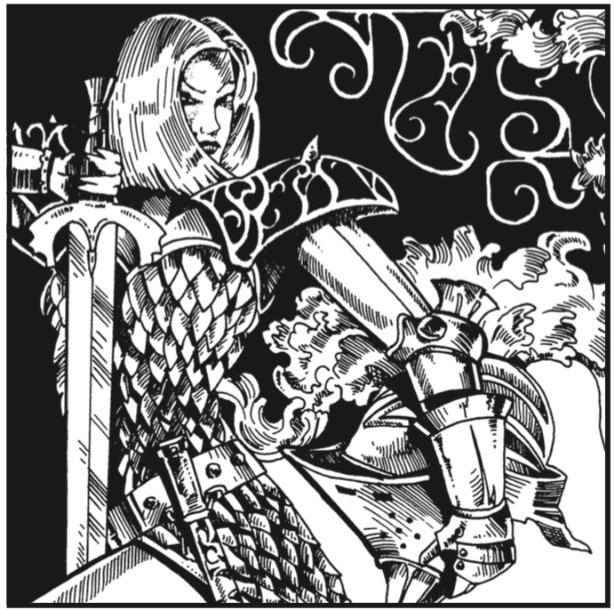Ranger — Rangers are Semi spell users who combine the realm of Channeling with the realm of Arms. Their base spells deal with operating in the outdoors and manipulating the element (weather).
Prime Stats: Constitution and Intuition.
Paladin — Paladins are Semi spell users who combine the realm of Channeling with the realm of Arms. Their base spells deal with combat and protections.
Prime Stats: Intuition and Self Discipline.
Monk — Monks are Semi spell users who combine the realm of Essence with the realm of Arms. Their base spells deal with personal movement and the control of their own body and mind, while their arms capabilities are concentrated in unarmored, unarmed combat.
Prime Stats: Empathy and Self Discipline.
Dabbler — Dabblers are Semi spell users who combine the realm of Essence with the realm of Arms. Their base spells deal with stealth, detection, perception, movement, and manipulating locks and traps.
Prime Stats: Empathy and Agility.
Bard — Bards are Semi spell users who combine the realm of Mentalism with the realm of Arms. Their base spells deal with sound, lore, and item use.
Prime Stats: Memory and Presence.
Magent — Magents are Semi spell users who combine the realm of Mentalism with the realm of Arms. Their base spells deal with information gathering and subterfuge.
Prime Stats: Presence and Reasoning.
The base mental and physical attributes of a character are represented by 10 statistics (called stats): 5 “primary” stats and 5 “development” stats. Each character has two numerical values on a scale of 1 to 101 (normally) for each stat (see Section 12.0). The value of a stat indicates how it rates relative to the same stat of other characters. The lower the value of a stat, the weaker it is relative to the same stat of other characters. Relatively high stats give bonuses (see Section 5.4) which apply to attempts to accomplish certain activities and actions.
An individual’s stats represent prowess in various areas in comparison to the average man. John Smith, the townsman, might be theoretically assumed to have stats of 50 across the board. In the primitive society favored for most role playing games, however, it is quite likely that those with stats below 10 will be the first claimed by nature and survivors might tend to have a set of stats that are above the “average” (assume that John Smith has stats of 55). Those with access to better health care (the rich) might tend to live even if weak in critical areas, however. So Noble John Smith’s stats might well average 50.
Adventurers are likely to be superior to the general population. Adventurers are presumed to start with no stat below 20, though the rigors they face may reduce their stats below this level. This is to reflect the fact that weak characters are unlikely to leave the safety of their homes and go out in the world to make their fortunes.
Higher level non-player characters (NPCs) are also likely to be superior to the general population. It is a fact of life that in attempting to increase one’s experience level one has an excellent chance of dying. Superior characters are more likely to survive; thus, in creating and running NPCs, the Gamemaster is urged to consider their experience level when determining their stats.
Each stat has two values: a potential value and a temporary value. The potential value reflects the highest value that the character’s stat can obtain (i.e., due to genetics and/ or early childhood environment). The temporary value represents the stat’s current value. Thus, each character has a set of “temporary” stats and a set of “potentials.”
During play, the temporary stats can rise due to character advancement and other factors and fall due to injury, old age, etc. However, potentials rarely change. Of course, the temporary value for a given stat may never be higher than its potential. Note that a character’s stats do not always increase beyond their starting level: two months of adventuring does not necessarily accomplish what eighteen or more years of youthful exuberance failed to do.
In addition to affecting play, some stats affect the character development process. Agility, Constitution, Memory, Reasoning, and Self Discipline are relevant in determining how many skills a character can learn (development points are equal to the average of these five stats). Note that the five stats above will often be referred to as Development Stats. In game terms, other characteristics do not aid in the acquisition of skills in any way.
Agility (Ag) — Manual dexterity and litheness are the prime components of this characteristic. Also referred to as: dexterity, deftness, manual skill, adroitness, maneuverability, stealth, dodging ability, litheness, etc.
Constitution (Co) — General health and well-being, resistance to disease, and the ability to absorb more damage are all reflected in a character’s Constitution. Also referred to as: health, stamina, endurance, physical resistance, physique, damage resistance, etc.
Memory (Me) — The ability to retain what has previously been encountered and learned. Note that in many instances it may be necessary for the character to rely on the player’s memory, since that tends to be used whenever it is advantageous anyway. Memory provides a good basis for determining how much is retained of the pre-adult period that the Gamemaster doesn’t have time to devise and describe in absolute detail to each player. Also referred to as: intelligence, wisdom, information capacity, mental capacity, recall, retention, recognition, etc.
Reasoning (Re) — Similar to intelligence: the ability to absorb, comprehend, and categorize data for future use. It also reflects the ability to take available information and draw logical conclusions. Also referred to as: intelligence, learning ability, study ability, analysis rating, mental quickness, logic, deductive capacity, wit, judgement, I.Q., etc.
Self Discipline (SD) — The control of mind over body, the ability to push harder in pursuit of some goal, or to draw upon the inner reserves of strength inherent in any individual. Also referred to as: will, alignment, faith, mental strength or mental power, concentration, self control, determination, zeal, etc.
The following characteristics have an influence on direct play, but do not aid in character development.
Empathy (Em) — The relationship of the character to the all-pervading force that is common to all things natural and is the basis of most things supernatural. Also referred to as: emotional capacity, judgement, alignment, wisdom, mana, magical prowess, bardic voice, etc.
Intuition (In) — A combination of luck, genius, precognition, ESP, and the favor of the gods is embodied in this stat. Also referred to as: wisdom, luck, talent, reactive ability (mental), guessing ability, psychic ability, insight, clairvoyance, inspiration, perception, pre-sentiment, etc.
Presence (Pr) — Control of one’s own mind, courage, bearing, self esteem, charisma, outward appearance and the ability to use these to affect and control others are the principal elements of a character’s presence. Also referred to as: appearance, level-headedness, panic resistance, morale, psychic ability, self control, vanity, perceived power, mental discipline, bardic voice, charisma, etc.
Quickness (Qu) — Essentially a measure of reflexes and conscious reaction time, this stat is often lumped with several others as dexterity. Also referred to as: agility, dexterity, speed, reaction ability, readiness, dodging ability, litheness, etc.
Strength (St) — Not brute musculature, but the ability to use existing muscles to their greatest advantage. Also referred to as: power, might, force, stamina, endurance, conditioning, physique, etc.
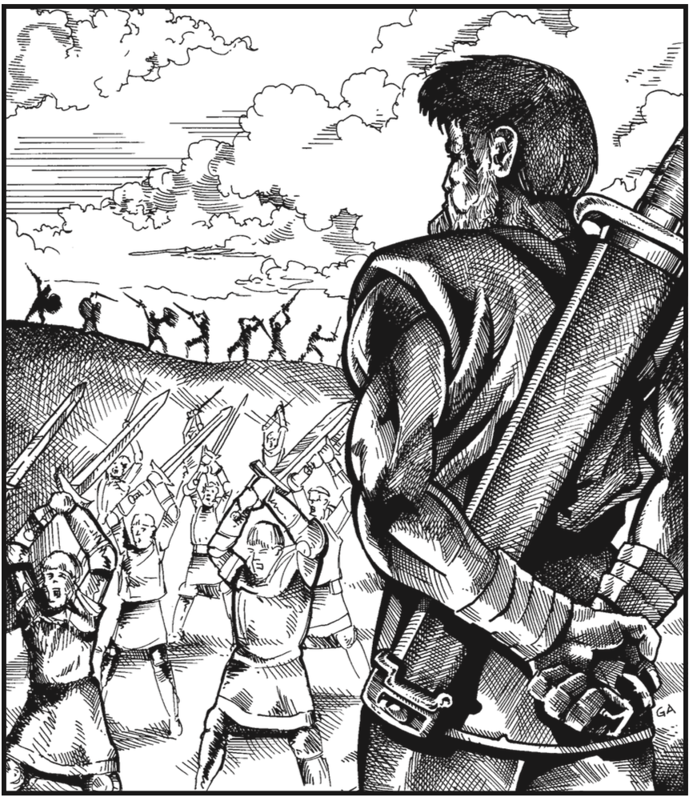Certain bonuses and penalties may apply to a character’s skills and activities if his stats are high enough or low enough. These bonuses and penalties are called stat bonuses.
For each stat, a character’s stat bonus is equal to the stat’s basic stat bonus plus its racial stat bonus modification plus any special modifications.:
| Stat Bonus = | basic stat bonus | |
| + racial stat bonus modification | ||
| + special modifications | ||
The basic stat bonuses are determined by the value of each given stat (see the Basic Stat Bonus Table T-2.1), while the racial stat bonus modifications are determined by the character’s race (see Section 3.3). Special modifications come primarily from Talents and Flaws (see Appendix A-5).

Example: A High Man and a Halfling could both have 99 Strengths; even though the high man was 6’7" and the Halfling was 3’4". However, due to the racial stat bonus modifications given in Table T-1.1, the High Man’s stat bonus due to Strength is +13 [a +9 basic stat bonus for 99 St, +4 due to his racial stat bonus modification]; while the Halfling’s total stat bonus due to Strength is +1 [a +9 basic stat bonus + (-8) due to his racial stat bonus modification]. Stat bonuses may become negative through such modifications.
The primary uses for stat bonuses are:
Skill Category Bonuses — Usually three stat bonuses apply to each skill category. The correspondence between stats and related skill categories are given in the Skill Summary Table T-2.5.
Defensive Bonus (DB) — A character benefits defensively from his Quickness—one of the major factors that affects a character’s Defensive Bonus is three times his Quickness bonus (see Section 8.5).
Resistance Rolls (RR) — Resistance Rolls against spells and poison or disease are affected by various stat bonuses depending on the type of attack (see Sections 8.7 & 21.1).
As a character advances in levels he develops and trains in certain abilities called skills. His capability in each skill affects his chances of accomplishing certain actions and activities (e.g., fighting, maneuvering, spell casting, etc.). As he develops and improves a skill, his skill bonus with that skill will increase, indicating a corresponding increase in his abilities and bonuses with that skill.
Each skill is grouped with other similar skills in a specific skill category. Each category contains skills that utilize similar physical and mental capabilities (i.e., stats) and similar basic, general abilities. In addition to developing individual skills, a character may develop and improve all of the skills in a given skill category by increasing its skill category bonus.
Each skill has a skill bonus that is used when a character uses that skill. In general, a skill bonus modifies a character’ s chances of succeeding in certain actions. Each skill bonus is the sum of a number of other bonuses:
| Skill Bonus = | ||
| Skill Rank Bonus | + Skill Category Rank Bonus | |
| + Stat Bonuses | + Profession Bonus | |
| + Item Bonus | + Special Bonuses | |
Different skills use this bonus in different ways as described in the individual skill descriptions (see Appendix A-1). Each skill is classified as being applicable to a moving maneuver (MM), to a static maneuver (SM), to an attack (using an Offensive Bonus [OB]), or to a special purpose (SP). Sections 23.0-26.0 describe how each of these types of bonuses are used to resolve actions.
Each of a character’s skills has a skill rank starts at zero and increases each time the character develops that skill (see Sections 7.3 & 15.0). A skill’s rank determines its skill rank bonus, which is included as part of the skill bonus utilized when applying that skill.

The Standard skill rank bonus progression is given in the Skill Bonus Table T-2.2. Basically, the table follows a standard progression. The bonus is -15 if the rank is zero and +3 if the rank is one. The bonus increases by 3 for each of ranks two to ten, by 2 for each of ranks eleven to twenty, by 1 for each of ranks twenty-one to thirty, and by 0.5 for each rank above thirty. The notation for this progression is:
-15 • 3 • 2 • 1 • 0.5
Most of the skills that do not follow the Standard progression are in categories with a “0 • 0 • 0 • 0 • 0” skill category rank bonus progression. So, most of these skills have the following Combined skill rank bonus progression:
-30 • 5 • 3 • 1.5 • 0.5
This progression just combines the Standard skill rank bonus progression and the Standard skill category bonus rank progression.
Certain skills use a progression that differs from both the standard progression and the combined progression—see the skill descriptions (Appendix A-1). These skill fall into the following skill categories:
| Skill Category | Skill Rank Progression |
|---|---|
| All “Spells • xxx” categories | 0 • 1 • 1 • 0.5 • 0 |
| Awareness • Perception | 0 • 1 • 1 • 0.5 • 0 |
| Body Development | based on race |
| Power Point Development | based on race |
Each of a character’s skill categories has a skill category rank that starts at zero and increases each time the character develops a rank in that skill category (see Sections 7.3 & 15.0). A skill’s category rank determines its skill category bonus, which is included as part of the skill bonus utilized when applying that skill.
The Standard skill category bonus progression is given in the Skill Bonus Table T-2.2. Basically, the table follows a standard progression. The bonus is -15 if the rank is zero and +2 if the rank is one. The bonus increases by 2 for each of ranks two to ten, by 1 for each of ranks eleven to twenty, and by 0.5 for each of ranks twenty-one to thirty. There is no bonus increase for ranks above thirty. The notation for this progression is:
-15 • 2 • 1 • 0.5 • 0
Certain skill categories do not use this progression—see the previous section and the skill category descriptions (Appendix A-1).
Certain skill categories are grouped together for the purpose of development point assignment during the character creation process (see Section 15.0) and for profession bonuses (see Section 11.2). Skill categories in the same group start with the same word followed by a bullet (i.e., a “•”).
Not all skills within a category are necessarily developed at the same rate. Because some races and/or professions develop specific skills at different rates, some specific skills might be designated as either Occupational, Everyman, or Restricted (e.g., Dwarves might be good at most Athletic • Endurance skills, but Swimming is something they are not comfortable doing).
If a skill is designated as Occupational, for every rank developed, the character gains three ranks. A character cannot develop “part” of a rank to gain fewer than three ranks.
If a skill is designated as Everyman, for every rank developed, the character gains two ranks. A character cannot develop “part” of a rank to gain fewer than two ranks.
If a skill is designated as Restricted, for every two ranks developed, the character gains one rank.
Note that the skill remains in its standard category (and the category is not affected in any way). Some skills are restricted by their very nature (these are indicated in italics on the skill category definitions).
Unless a GM decides otherwise, the special skill classifications (i.e., Occupational, Everyman, and Restricted) specified for the professions take precedence over those specified for cultures/races and by the skill category definitions. Similarly, the special skill classifications specified for the cultures/races precedence over those specified by the skill category definitions.
Example: Adrenal Stabilization is a Restricted skill based on its skill category, Self Control (see Appendix A-1.24). However, for the Lay Healer profession, it is a Everyman skill. So Adrenal Stabilization is an Everyman skill for a Lay Healer.
Note: A GM should examine all of the skills and skill categories and specify which skills are Occupational, Everyman, or Restricted for his world system. He should make clear to his players which skills have a special designation within his world.
Example: Adrenal Deflecting and Tumbling Evasion are skills in the Combat Maneuvers skill category. However, unless a GM decides they are “normal” for his world, these skills are automatically classified as “Restricted’ (see Appendix A-1.10). In this case, they may only be developed at a rate of one rank for every two purchased.
All Dwarf characters have Swimming as a Restricted skill (in the Athletic • Endurance skill category; see Section A-3.2). This skill is handled as outlined in the previous paragraph.
A Dwarf character also has Caving and Survival (Underground) as Everyman skills. So for every rank a Dwarf developes in these skills, he gains two ranks (resulting in very fast development of these skills).
A character in the Thief profession has Lock Lore as a Occupational skill. Thus, for every rank a Thief developes in Lock Lore, he gains three ranks (resulting in incredibly fast development in this skill).
Skills are presumed to derive from study and experience. Under the Rolemaster character development guidelines, at each level of development a character has a certain number of development points which may be expended as desired by begin learning or improving skills (i.e., increasing a skill’s rank or a skill category’s rank). It is assumed that the character continues this development process throughout his adventures, and receives the benefits of skill development each time he reaches a new “level of experience” (see Section 7.3).
Development points (DPs) are derived from one’s stats. Each character has 5 development stats (Agility, Constitution, Memory, Reasoning, and Self Discipline) which affect his ability to develop skills. A higher Constitution allows more rigorous training, Self Discipline keeps boredom at bay, etc.
A character gets a number of development points equal to the average of his development stats (the temporary values, not potentials). These DPs may then be expended to develop skills by increasing skill ranks and skill category ranks (see Section 15.0).
Development points are received (as outlined above) when a character is started and each time a character advances a level (see Section 7.3). These points must be expended immediately to develop of skills (i.e., skill development). The expenditure of DPs represents the effort that the character is using to improve that skill, the amount of time spent on it, etc.
A character may not accumulate development points from level to level, nor may they be transferred from one character to another. However, development of a skill or a skill category may be done partially at one level and then completed by allocating more points at later levels.
Note: Some GMs may wish to require time and/or facilities for training before skill development actually takes place. Such GMs should refer to the optional rules in Appendix A-9.1.
The cost of developing a skill is determined by pre-adolescent training. The best reflection of this is the character’s profession; a Fighter is taught in his youth some of the basic principles behind weapons, either through a formal apprenticeship or through watching combats with the keen interest of one who wants to follow that profession. Similarly, spell users begin at an early age to attune their minds to the acquisition of their chosen magics. This early training is reflected in the Standard Skill Category Development Point Cost Table T-2.8, where the development point costs for the various skills and skill categories are listed.
Remember, a character may develop ranks in both skills and skill categories. The DP cost is the same for each skill category and every skill in that category.
Example: For a Rogue, the DP cost for Influence skill category ranks is 2/5, so the DP cost for each skill in the Influence skill category is also 2/5. These skills include Bribery, Diplomacy, Duping, Interrogation, Leadership, Trading, etc.
It is a basic premise of Rolemaster that a character’s early years in which learning patterns are formed, prejudices established, and attitudes molded are more important than a few years of study and adventuring. Thus, a character’ s skill rank in an area never affects the cost of improving that skill (except for skill in spell lists). A Magician who has become a near expert with a sword is still a Magician, with a Magician’s thought patterns and study methods, and must pay more to increase his skill with a sword than a beginning Fighter.
Certain environments of youth may lead to differences from the standard training received by each profession. This will make some skills easier to acquire while at the same time necessarily making the mind less attuned to other skills. This is reflected by the use of Occupational and Everyman skill categories (see Section 6.3). The Gamemaster must determine which other changes of this type are appropriate for his game and world system.
A character is born with rank 0 ability in all skills and skill categories (increasing a skill rank by one may be termed either developing, acquiring, or improving it). A character is generally allowed to develop any skill or skill category he wishes during each experience level at the cost (in development points) given for his chosen profession.
To develop a skill, a character expends the points indicated by the Standard Skill Category Development Point Cost Table T-2.8. There are four types of development point costs:
None — A few skill categories have a DP cost of “–.” The rank of one of these skill categories may not be increased by allocating DPs (e.g., Rogues have no base spell lists, so there is not DP cost for the “Spell • Own Realm Own Base Lists” category).
Single Number (#) — A skill or skill category with a single number DP cost may have its rank increased by one by allocating (i.e., expending) DPs equal to its DP cost. The rank of such a skill or skill category may only be increased by one during the skill development process (i.e., once during each level advancement, see Section 7.3).
Two Numbers (#/#) — A skill or skill category with a two number DP cost (e.g., 2/6) may have its rank increased by one by allocating (i.e., expending) DPs equal to the first number or may have its rank increased by two by allocating DPs equal to the sum of the two numbers. The rank of such a skill or skill category may be increased by a maximum of two during the skill development process.
Three Numbers (#/#/#) — A skill or skill category with a three number DP cost (e.g., 3/3/3) may have its rank increased by one by allocating (i.e., expending) DPs equal to the first number or may have its rank increased by two by allocating DPs equal to the sum of the first two numbers or may have its rank increased by three by allocating DPs equal to the sum of the three numbers. The rank of such a skill or skill category may be increased by a maximum of 3 during the skill development process.
Example: A Rogue with a skill rank 2 in Climbing wants to increase it to rank 4. The cost listed is 1/5, indicating he expends 1 development point to progress to skill rank 3 and 5 more (total 6) for skill rank 4.
The Skill Summary Table T-2.5 lists the RM skill categories and the normal skills in each category. This table doesn’t include the Occupational, Everyman, and Restricted categories (see Section 6.3). Keep in mind that a character may develop skills that are not listed—his GM just has to determine into which category the skill falls.
Appendix A-1 provides complete descriptions for the normal skills, as well as suggested mechanisms for using those skills.


Each character in a fantasy role playing game has a “level” that provides an indication of his capabilities. Characters become more powerful and skilled by advancing levels as they gain experience. Experience is represented in play by experience points (EPs) which the Gamemaster awards to characters for certain experiences, activities, and achievements. Normally, a character starts play as a 1st level character and his level increases as he acquires experience points from his adventures. A character’s level does not necessarily increase each time he gains experience points; it increases when his experience point total reaches certain points, as explained in Section 6.3 and the Experience Point Table T-2.6.
The rewards derived from fantasy role playing are many, and among these, experience point (EP) accumulation is probably the most graphic. It is a significant factor under most FRP systems. Unfortunately, the goal of the adventurer often proves to be the bane of the Gamemaster, especially in cases where the computation of the points is time-consuming.
Section 31.0 provides some experience point guidelines and suggestions for Gamemasters.
The level for each character is determined by how many experience points he has accumulated. A character starts at 1st level with 10,000 experience points. The Experience Point Table T-2.6 summarizes which experience point totals correspond to which levels.
Normally, a character’s level only directly affects his Resistance Rolls and determines when and how often he develops his skills. Characters of 20th level and above, however, are generally classified as “Lords” and are usually identifiable amongst a collection of lesser beings by their bearing and deference shown them by others knowledgeable of their status.
Example: Dral, after a series of adventures, has a total of 75,614 experience points, which is more than the 70,000 minimum for 6th level and less than the 90,000 required to be 7th level. Thus, Dral is 6th level.
Designing your character doesn’t stop when you begin play at first level, it is a process that continues as you adventure. When your character advances (goes up) a level, he may develop skills and update his bonuses. To develop a skill he allocates development points to it in order to increase the skill’s rank. This process is identical to apprenticeship skill development (see Section 15.0).
When his character advances (goes up) a level, you must perform several actions:
“Stat Gain Rolls” must be made to determine if your temporary stats change (see below).
The skill development process is followed. This process is identical to apprenticeship skill development (see Section 15.0).
Finally, any skill rank bonuses whose components have changed must be re-totaled.
Note: Some GMs may wish to require time and/or facilities for training before skill development actually takes place. As a simple mechanism, we suggest two hours of “practice” or “contemplation” for each rank developed. For a more comprehensive approach, a GM should refer to Appendix A-9.1.

Upon reaching a new experience level, your character must make stat gain rolls to determine if his temporary stats change. During his adventures, it is assumed that a character’s faculties will be exercised heavily, possibly affecting their value. A stat gain roll must be made for each stat—roll two dice (d10):
If the result is double 1s, 2s, 3s, 4s, or 5s, the temporary stat goes down by 1, 2, 3, 4, or 5 respectively— treat resulting stats of less than 1 as 1; otherwise,
If the result is double 6s, 7s, 8s, 9s, or 10s, the temporary stat goes up by up to the sum of the two dice (i.e., 12, 14, 16, 18, or 20 respectively); otherwise,
If the difference between the potential stat and temporary stat is between 1 and 10, the temporary stat is increased by up to the value of the lower of the two dice; otherwise,
If the difference between the potential stat and temporary stat is between 11 and 20, the temporary stat is increased by up to the value of the higher of the two dice; otherwise,
If the difference between the potential stat and temporary stat is greater than 20, the temporary stat is increased by up to the sum of the two dice.
This process is summarized in the Stat Gain Table T-2.3.
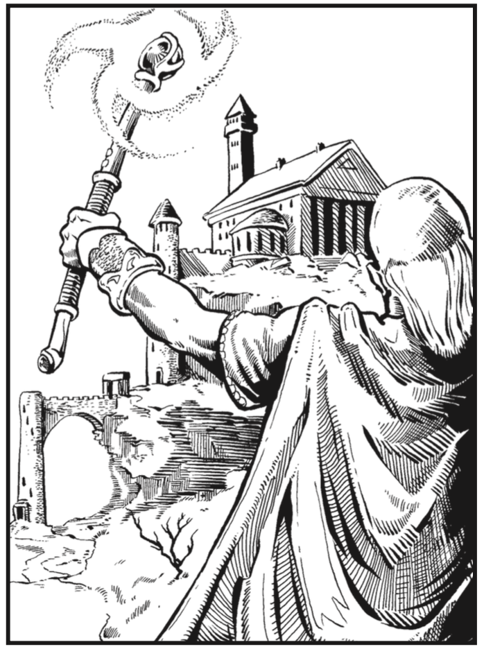Important — Remember, if a stat gain roll results in a temporary stat greater than its corresponding potential stat, the temporary stat becomes equal to the potential stat.
Example: Suppose Skal has a temporary Self Discipline stat of 54 and a potential of 78—a difference of 24. Skal rolls a ‘4’ and a ‘7’ for a stat gain roll, so his SD stat increases by 11 (4+7) to 65. Unfortunately, on his next stat gain roll (at a later level advancement), he rolls a ‘2’ and a ‘2’, and his temporary stat drops by 4 (2+2) from 65 to 61.
Now the difference between his temporary SD and Potential SD is 17 (78-61), and Skal later makes a stat gain roll of ‘2’ and ‘9’. Since, the difference between temporary and potential is 17, the temporary SD stat is increased by the higher of the two dice (i.e., by 9) to a new value of 70.
The next time Skal makes a stat gain roll, it is a ‘4’ and a ‘7’. Since, the difference between temporary SD and potential SD is 8 (78-70), the temporary SD stat is increased by the lower of the two dice (i.e., by 4) to a new value of 74.
For his next stat gain roll Skal rolls a ‘8’ and a ‘8’, and his temporary stat is increased by 16. However, his Potential SD stat is only 78, so his temporary SD stat only increases to 78.
Earlier in Part II the major factors defining a character were presented: culture/race, profession, stats, skills, and level. This section presents a number of other factors that can help define a character: spell lists, power points, defensive bonus, hits, resistance rolls, talents, equipment, money, encumbrance, etc.
A spell list is an ordering of spells based upon the correlation of spell level, intricacy of the spell, and potency of the spell. All spells in a list have some common characteristics and attributes, although each may have vastly different effects and applications. A character does not gain the ability to cast individual spells. Instead he “learns” a spell list of related spells by developing skill ranks for that list. In addition, casting these spells is affected by his level and the level of the spells themselves. Spell lists are provided in Spell Law (SL) and other Rolemaster products. Each spell list falls into one of the following classifications:
Open Channeling Lists (SL)
Closed Channeling Lists (SL)
Channeling Base Lists (SL)
Open Essence Lists (SL)
Closed Essence Lists (SL)
Essence Base Lists (SL)
Open Mentalism Lists (SL)
Closed Mentalism Lists (SL)
Mentalism Base Lists (SL)
Hybrid Channeling-Essence Base Lists (SL)
Hybrid Channeling-Mentalism Base Lists (SL)
Hybrid Essence-Mentalism Base Lists (SL)
Evil Channeling Lists (SL)
Evil Essence Lists (SL)
Evil Mentalism Lists (SL)
Arcane Lists (see the Arcane Companion)
These classifications determine the Development Point cost for each profession’s “Spells • xxx Lists” skill categories (Section 15.0). Each spell on a spell list is preceded by a number called its level. Each spell has an area of effect, a duration (how long do the spell effects last), a range (how far the spell can be cast), and a class. Each of these factors is described in Spell Law and Appendix A-2.
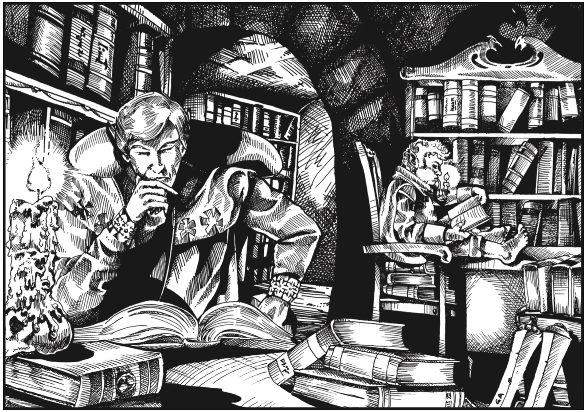A character “learns” spells by developing skill ranks in the spell list that the spell is on. A character “knows” all of the spells on a spell list that have a level less than or equal to his skill rank for that spell list. A character learns spells during:
Adolescence skill development (Section 13.0)
Apprenticeship skill development (Section 15.0)
Level advancement (Section 7.3)
Normally, a character may cast any spell on a list that has a spell level that is less than or equal to his skill rank for that list. As outlined below, a character must use Power Points to cast a spell. See Section 26.0 for more details on preparing and casting spells.
In order to cast a spell, a number of PPs equal to the spell’s level must be used. Each character has a maximum number of Power Points (PPs) equal to his skill bonus for Power Point Development (see Appendix A-1.22). Normally, this skill bonus consists of the following:
| PP Development skill bonus = PP Total | ||
| = | “realm” stat bonus + profession bonus | |
| + skill rank bonus + any special bonuses | ||
A character receives a modification to his spell casting static maneuvers (see Section 26.0) based upon what percentage of his Power Points he has used:
| % of PPs Used | Modification |
| 0% to 25% | 0 |
| 26% to 50% | -10 |
| 51% to 75% | -20 |
| 76% to 100% | -30 |
Once a character’s PPs are used casting spells, they may be regained (up to the maximum) in the following 3 ways:
If the character is active, one PP is recovered every three hours.
If the character is resting, (realm stat bonus ÷ 2) PPs are recovered every full continuous hour of rest (at least one PP is recovered, even if the realm stat bonus is less than one). For a Hybrid spell user average the realm stat bonuses for his two realms before dividing by two.
If the character is sleeping, half of the maximum PPs are recovered for every three hours of continuous sleep. If this sleep is interrupted, PPs are still recovered as in 2) above.
Example: Darien is a 20th level Illusionist (an Essence spell user) so his realm stat is Empathy. He has a Power Point Development skill bonus of 88 and an Empathy stat bonus of 9. So, he recovers 1 PP every three hours while active, 5 PPs (9÷2) every continuous hour of rest, and 44 PPs (88÷2) for every 3 hours of continuous sleep.
Each character has a maximum number of hits (also called concussion hits) equal to his skill bonus for Body Development (see Appendix A-1.10). Normally, this skill bonus consists of the following:
| Body Development skill bonus = Total Hits | |||
| = 10 | + (2 x Co stat bonus) | + SD stat bonus | |
| + profession bonus | + skill rank bonus | ||
| + any special bonuses | |||
A character takes hits as damage from attacks—hits reflect pain, shock, and bleeding. When the hits that a character has taken is greater than or equal to his maximum hits, he passes out. When the hits that a character has taken is greater than or equal to his maximum hits plus his Constitution, he dies.
A character receives a penalty to his attacks and maneuvers based upon what percentage of his hits he has taken:
| % of Hits Taken | Modification |
| 0% to 25% | 0 |
| 26% to 50% | -10 |
| 51% to 75% | -20 |
| 76% to 100+% | -30 |
Once a character has taken hits, they may be “healed” in the following four ways:
If the character is active, one hit is recovered every three hours.
If the character is resting, (Co stat bonus ÷ 2) hits are healed every full continuous hour of rest (at least one hit is recovered, even if the Co stat bonus is less than one).
If the character is sleeping, (Co stat bonus x 2) hits are healed for every three hours of continuous sleep. If this sleep is interrupted, hits are still healed as in 2) above.
In addition, hits may be healed by outside methods (see Section 32.2); e.g., spells, herbs, etc.
Each character has a maximum number of Exhaustion Points (ExPs) equal to:
| 40 + (3 x Co stat bonus) + any special bonuses |
As a character acts he expends Exhaustion Points; e.g., for combat, movement, etc. (see Section 22.3).
A character receives a penalty to his attacks and maneuvers based upon what percentage of his Exhaustion Points he has used:
| % of ExPs Taken | Penalty |
| 0% to 25% | 0 |
| 26% to 50% | -5 |
| 51% to 75% | -15 |
| 76% to 90% | -30 |
| 91% to 99% | -60 |
| 100+% | -100 |
Once a character’s Exhaustion Points are used, they may be regained (up to the maximum) in the following ways:
If the character is active, one ExP is recovered every three minutes.
If the character is resting, (1 + Co stat bonus ÷ 2) ExPs are recovered for every full minute of rest (at least one hit is recovered, even if the Co stat bonus is less than zero).
If the character is sleeping, all ExPs are recovered for half hour of continuous sleep. If this sleep is interrupted, ExPs are still recovered as in 2) above.

A character’s Defensive Bonus is used in combat as a subtraction from an opponent’s attack roll against the character. Section 23.2 details the factors that can affect a character’s DB; some of the major ones are:
Three times the character’s Qu stat bonus (this may be canceled in whole or in part by the character’s Armor Quickness Penalty).
Shield bonus if applicable.
Adrenal Defense skill bonus if applicable.
Special armor and item bonuses if applicable.
Amount of OB used to parry if applicable.
Each character has a Moving Maneuver Penalty that is added to any moving maneuver rolls (see Section 25.0). A character’s MMP is equal to the sum of:
| lesser of: 0 |
| or (Encumbrance Penalty + 3 x St stat bonus) |
Note: In other words, a character’s St stat bonus cannot modify a character’s Encumbrance Penalty above zero. See Section 22.2 for guidelines on calculating a character’s Encumbrance Penalty.
| lesser of: armor’s Minimum Maneuver Modification | |
| or (armor’s Maximum Maneuver Modification) | |
| + (skill bonus for the armor worn) | |
Note: In other words, a character’s skill bonus for armor can not modify an armor’s maneuver modification beyond the Minimum Maneuver Modification for that armor. The Minimum and Maximum Maneuver Modifications for each type of armor can be found in the Armor Table T-3.3.
Certain attacks and events occurring during play will require a character to make a Resistance Roll (RR) to determine if or how an attack affects the character. These types of attacks include: spells, poisons, diseases, fear, etc. Section 21.1 details how to resolve a RR.
Standard modifications to Resistance Rolls include: stat bonuses, item bonuses, and culture/race bonuses. The culture/race bonuses are presented in the Race Abilities Table T-1.1. The following stat bonuses normally apply:
A RR versus an Essence spell is modified by three times the subject’s stat bonus for Empathy.
A RR versus an Channeling spell is modified by three times the subject’s stat bonus for Intuition.
A RR versus an Mentalism spell is modified by three times the subject’s stat bonus for Presence.
A RR versus a Hybrid spell user’s base spell is modified by the the stat bonus for the two stats related to that profession’s realms. Sorcerers are users of Channeling and Essence, so the Empathy and Intuition stat bonuses are used. Mystics are users of Mentalism and Essence, so the Empathy and Presence stat bonuses are used. Healers are users of Channeling and Mentalism, so the Intuition and Presence stat bonuses are used.
A RR versus a Hybrid spell user’s non-base spells is subject to three times the subject’s stat bonus for the spell’s normal realm.
A RR versus a Arcane spell is modified by the stat bonuses for Empathy, Intuition, and Presence (see the Arcane Companion).
A RR versus poisons and diseases is modified by three times the subject’s stat bonus for Constitution. Resistance Rolls are resolved by assigning a level (potency for the poison) and resolving the Resistance Roll using the Resistance Roll Table T-3.4. For more on poisons and diseases see Gamemaster Law.
A RR versus fear is modified by three times the subject’s stat bonus for Self Discipline. Resistance Rolls are resolved by assigning a level and resolving the Resistance Roll using Table T-3.4. For more on fear see Gamemaster Law.
Special abilities can help individualize characters and can make playing characters more exciting. In many cases, special abilities help distinguish the player character from the general populace—they can be at least part of the reason that he has chosen to adventure rather than stay at home on the farm.
Talents are special abilities and advantages that characters can acquire through the use of background options (see Section 14.0 and Appendix A-5). Along with these talents, characters can also acquire deficiencies and disadvantages that are called flaws.
A characters may have special abilities based on his culture or race. These special abilities are detailed in the culture/race descriptions in Appendix A-3.
A GM may want to assign special abilities based on a character’s background. The Gamemaster should assign bonuses in skills relating to aspects of a character which were developed to some unusual degree during his/her youth. By having the skill category to which bonuses are assigned vary given each character’s unique past, the GM can further individualize members of the group or NPCs.
Example: Onri who begins as a Fighter of the Langur may be able to ride a horse extremely well since his nomadic people are taught to ride at an extremely early age. His Gamemaster decides that the character will begin the game with a special Riding (horses) bonus of +10.
Characters start with some equipment and money (Section 17.2, Appendix A-3). Then, as they adventure, they will gain and lose these things.
Different cultures and areas produce varying types of equipment (see the culture/race descriptions in Appendix A-3). Some of equipment will differ in construction or composition or stand utterly unique (e.g., a type of weapon found nowhere else in the world). Characters can be individualized by starting with different types of possessions, but beware of unbalancing things by giving one or more characters equipment which is noticeably better than that given their companions.
Most of the factors detailed earlier in Part II directly affect the attributes, abilities, and skills of a character. But this is a “role” playing game, so this section discusses some of the factors that help a player flesh out his character and bring it to life.
One of the best tools for individualizing characters is background material. Each character should have an idea of his own past, the important facts concerning his race, culture, birth, childhood, and adolescence. Since these historical notes will vary from character to character, they tend to provide flavorful variations in the player’s approach to the game. The stronger and more detailed the background notes, the greater the foundation; and a good foundation built of past experience will guide a character in his adventures.
Differing backgrounds will reinforce the naturally individual approaches to running characters. Particularly forceful background material (e.g., Rhiannon’s entire family has sought the lost sacred Banana of the Bamlenders) may be necessary in so-called “quest” campaigns, but should be carefully used in games where player freedom is emphasized. The Gamemaster can provide rich backgrounds without funnelling the players along paths deemed most “desirable.”
One’s outlook on life is necessarily colored by past experience. A character in a FRP setting will invariably follow this rule to some degree, and the GM should note that rich, varying experiences lodged in a character’s past history will act to spur certain individualizing feelings in the player. (E.g., Shiloh once had an embarrassing incident involving squirrels; so, he remains ever wary of the little beasts and may go to extreme lengths to capture them, even in the heat of a battle.)
Family background is, perhaps, the most significant tool in this category. Events involving one’s family—legacies, feuds, traditions, etc.—all act to give a character certain “reference points” for adventure. A character may seek revenge or some heirloom of great value; he may wish to follow the path of his mother or father. By giving the player a unique background with a number of significant and interesting experiences and family notes, great choice is allowed, and the character will have wide leeway in pursuing interests relating to his past—any one of which differs markedly from those of his fellow adventurers.
There are certain factors which are not formalized in role playing but which still affect the role of a character, and in particular a player character. These are factors which are not capabilities of or restrictions on the character; instead, they are facets of his individual nature and temperament. These factors are crucial in bringing a character to life in the terms of the game, and they make the character seem more realistic to the character’s player as well as the other players and the Gamemaster.
There are four such factors (call role traits) which are not formalized in the Rolemaster Standard System but which still affect the role of a character. This section details the four role traits used in the RMSS:
Personality
Motivation
Alignment
Physical Appearance
Each of these role traits represents a facet of a character’s individual nature and temperament. These factors are crucial in bringing a character to life in the terms of the game, and they make a character seem more realistic to the players and the Gamemaster.
A player may decide to inject his own personality into a character, which is very acceptable and enjoyable. However, sometimes it is exciting, stimulating and rewarding to embody a character with a personality other than its player’s—after all, this is Fantasy Role Playing. Whatever a player decides to do, it is important to carefully consider his character’s personality.
The list below presents a number of personality role traits. These traits are provided as examples to help develop a personality for a character. A player does not have to specifically pick a trait from each entry. In fact, its better to just choose a few traits—if a character doesn’t have certain traits specified, he is just normal with respect to those traits.
Remember, a player may change his character’s traits as he adventures and develops.
Each entry presents one extreme trait on the left and its opposite extreme trait on the right. In between are a spectrum of interim traits.
Example: Tanvar’s personality role traits are: serious and focused. This means that Tanvar is generally middle-of-the-road with respect to the other personality traits. Tanvar’s player may also decide that Tanvar will be Proud, Stubborn, and Pious.
| Sullen, Morose, Somber, Serious | Lighthearted, Cheerful, Joyous |
| Merciful, Compassionate, Kind | Uncaring, Mean, Ruthless, Cruel |
| Austere, Sober, Restrained, Temperate, Moderate | Unrestrained, Indulgent |
| Docile, Pliable, Amenable, Cooperative | Stubborn, Obstinate |
| Martyr, Over-protective, Protective | Intimidating, Overbearing, Bully |
| Radical, Liberal, Open-minded | Orthodox, Conservative, Reactionary |
| Loving, Friendly, Amicable | Quarrelsome, Hostile, Antagonistic |
| Prudent, Patient, Cautious | Impatient, Impulsive, Reckless, Rash |
| Confident, Sanguine, Secure | Nervous, Apprehensive,Daunted |
| Extrovert, Out-going, Talkative | Reserved, Shy, Timid, Introvert |
| Pacific, Nonviolent, Peaceful | Pugnacious, Belligerent, Bellicose |
| Meek, Self-effacing, Modest, Humble | Proud, Conceited, Cocky, Pompous, Arrogant |
| Lethargic, Lazy, Idle, Easy Going, Laid Back | Vibrant, Energetic, Enterprising, Ambitious |
| Deferential, Respectful, Courteous, Polite, Civil | Impolite, Rude, Impudent, Insolent |
| Charitable, Forgiving | Vindictive, Vengeful |
| Benevolent, Generous, Giving | Selfish, Miserly, Greedy |
| Honest, Direct, Trustworthy | Shifty, Deceitful, Dishonest |
| Honorable, High-principled | Dishonorable |
| Loyal, Faithful, Reliable | Treacherous, Disloyal |
| Lawful, Just, Upright | Arbitrary, Chaotic, Corrupt |
| Moral, Ethical, Principled | Amoral, Immoral |
| Pious, Devout, Religious | Worldly, Impious |
| Quixotic, Idealistic | Practical, Pragmatic, Cynical |
| Gullible, Trusting | Skeptical, Suspicious, Paranoid |
| Curious, Inquisitive | Apathetic, Incurious |
| Focused, Attentive | Distracted, Absent-minded |
| Continent, Chaste | Lustful, Licentious, Lecherous |
| Quiet, Reserved | Flamboyant, Boisterous, Loud |
| Valorous, Brave, Bold, Audacious | Timid, Cowardly, Craven |
| Passive, Detached, Calm | Forceful, Enthusiastic, Excitable |
| Calm, Even-tempered | Quick-Tempered, Hot-headed |
| Stoic, Impassive, Stolid | Responsive, Complainer |
| Sociable, Gregarious | Nonsocial, Antisocial, Cold Optimistic, |
| Upbeat | Uncertain, Cynical, Fatalistic, Pessimistic |
| Creative, Inventive, Original | Conformist, Uncreative |
| Tolerant, Open-minded | Snobbish, Prejudiced, Intolerant |
| Disordered, Messy | Orderly, Perfectionist |
| Tolerant, Understanding | Envious, Possessive, Jealous |
| Dependent, Clinging | Self-reliant, Independent |
Another question that a player should answer about his character is: What is his motivation? What are his objectives in the game? It may be to adventure and have a good time. It may be to amass as much gold, wealth, and magic items as possible. It may be to kill and fight. It might be to defeat the evil minions of a dark lord and make the world safe for the free peoples. Whatever a character’s motivation, it really helps to flesh him out.
The list below presents a number of motivation role traits. These traits are provided as examples to help a player develop a motivation for his character. Many of the motivations listed below require that both the player and GM decide together the motivation of a character. A player may know that his character wants to destroy the enemy clan that killed his family in a raid. However, the GM would have to decide which clan in his world made the raid.
Example: Tanvar has one primary motivation in life: to destroy “Evil” wherever he finds it.
Destroy: evil, dark lord’s forces, culture/race, country, guild, population center, individual, etc.
Hate & Work Against: evil, dark lord’s forces, culture/race, country, guild, population center, individual, etc.
Hate: evil, dark lord’s forces, culture/race, country, guild, population center, individual, etc.
Dislike: evil, dark lord’s forces, culture/race, country, guild, population center, individual, etc.
Revenge against: individual, family, clan, culture/race, population center, guild, etc.
Preserve: individual, family, clan, ruler, country, culture/race, population center, guild, etc.
Protect: individual, family, clan, ruler, country, culture/race, population center, guild, “the weak,” etc.
Serve: individual, family, clan, ruler, country, culture/race, population center, guild, etc.
Promote: peace, freedom, justice, religion, morality, war, free enterprise, etc.
Rebuild/Restart: guild, population center, religion, clan, dynasty, etc.
Fanatic about: spreading religion, freedom, cleanliness, law & order, etc.
Compulsive about: spreading religion, freedom, cleanliness, law & order, etc.
Fear of (Phobia): heights, darkness, water, etc.
Acquire xxx for yyy: “xxx” is wealth, power, knowledge, magic items, etc. “yyy” is a ruler, country, culture/race, guild, religion, clan, population center, etc.
Acquire Personal: power, knowledge, magic items, pleasure, fame, etc.
Acquire and Maintain Personal Honor Adventure, Thrills, Excitement
Self-centered, general self-interest
Heroism
“Make the World a Better Place”
A player should determine whether or not his character is arrayed with a cause or a group with common goals. These are a character’s alignment role traits. The easiest decision is: is a character good, evil, or neutral? For example, in many fantasy settings the evil forces are dominated by a powerful evil entity and are out to destroy the good forces (who are either passive or actively opposing the evil forces).
There are also many alignment traits based on morals and philosophy:
Does a character strongly believe that the end justifies the means (Machiavellianism)? For example, Saruman (in Middle-earth) believed this and was eventually corrupted.
Does he respect rigid laws? Many Elves do not; some evil beings do.
Is he a hedonist? Good or evil, his prime concern would be to enjoy himself.
All of these are interesting examples; there are other traits that can add dimension and complexity to a character. The list below presents a number of alignment role traits. Each entry presents a trait on the left and its opposing trait on the right. These traits are provided as examples to help a player develop a alignment for a character. A player does not have to specifically pick a trait from each entry. In fact, its better to just choose one trait—if a character doesn’t have certain traits specified, he is just “Neutral” with respect to those traits.
Example: Tanvar’s alignment role trait is: Good. This means that he is Neutral with respect to the other alignment traits. Tanvar could have more than one alignment role trait.
| Good | Neutral | Evil |
| Laws/Government | Neutral | Anarchy |
| Government | Neutral | Rebels/Opposing |
| Government* Laws/Principles | Neutral | Opportunism, “The End Justifies the Means” |
| (Machiavellianism) Religion | Neutral | Atheism |
| Religion | Neutral | Opposing Religion† |
| Free Enterprise | Neutral | Cartels/Guilds/Monopolies |
| Free Enterprise | Neutral | Socialism |
| Asceticism | Neutral | Hedonism |
| Altruism | Neutral | Egoism |
| Spiritual | Neutral | Materialist |
| Metaphorical | Neutral | Literal |
* — This applies to any two ruling groups that oppose one other. The groups can control different countries, fiefs, city-states, etc.; or, they can be rival groups within the same political or geographical entity (e.g., rebellion, civil war, etc.). For Example, France vs. England in the 100-years War, the Gondorian Kin-strife in Middle-earth, York vs. Lancaster in the War of the Roses, North vs. South in the War of Northern Aggression, etc.
† — This applies to any two religions that oppose one another. This opposition can have a political or dogmatic basis. E.g., Christians vs. Moslems, Catholic vs. Greek Orthodox, Catholic vs. Protestant, etc.
In addition to each character’s stats (which affect his capabilities during play) it is desirable to have some measure of the character’s physical appearance. Suggestions for cultural/racial factors affecting a character’ s physical appearance (i.e., demeanor, hair color, eye color, height, weight, etc.) are given in the culture/race descriptions in Appendix A-3.
In addition to cultural/racial factors, it is often useful to have numerical value that reflects a character’s general appearance (i.e., attractiveness, comeliness, beauty) to other members of his race. Appearance is a value (1-100) which gives a general idea of the character’s exterior look (e.g., an 01 or 02 Appearance would indicate a really ugly person, while a 99 or 00 would indicate a very handsome character).
Appearance is a role trait that is handled in many ways as if it were a stat (see Section 5.0). Section 16.1 details how to generate a character’s potential Appearance. A characters temporary Appearance is equal to his potential Appearance if he is well groomed and well dressed (GM discretion). Potential Appearance can rise or drop during play due to circumstances (e.g., scars, diseases, increases in Presence, etc.). This is a very subjective rating and the Gamemaster should treat it as a general guideline during play.
This is an indicator of the general attitude that the character seems to present to the world. This is up to the character and the Gamemaster, but typical demeanors might include: calm neutral, angry, sly, greedy, silly, stubborn, stupid, rude, etc.
Such factors as height, weight, hair color, eye color, gender, age, and so on should be determined by the Gamemaster and the players. Appendix A-3 provides some sample ranges for the RM races and cultures.
In a fantasy role playing game, each player must keep track of the factors defining and affecting his character, while the Gamemaster must keep track of of the non-player characters. In the RMSS, each player can keep track of his character on Record Sheets:
The Character Record Sheet (T-6.1) has places for most of the fixed statistics and factors which are important to a character.
The Skill Category Record Sheet (T-6.2) has places for all of the factors that affect a character’ s skill category bonuses. These bonuses are not used in play, but they are a major factor for skill bonuses, which are used in play.
The Skill Record Sheet (T-6.3) has places for all of the factors that affect a character’ s skill bonuses. Skill bonuses are the bonuses that are usually used to modify various rolls during play.
The Money & Equipment Record Sheet (T-6.4) has places for recording a character’s money, equipment, and encumbrance.
A player should fill in all of the appropriate spaces on these Record Sheets; this process is described step by step in Part III (Sections 11.0-17.0). When this process is completed, the character is ready to play and has on his Record Sheets all of the bonuses which can affect his actions.
Anyone using the RMSS may photocopy as many Record Sheets as he wishes for use in his game. However, they may not be copied for commercial use.
The Gamemaster may want to use Record Sheets for certain crucial non-player characters (NPCs), but in general he only needs to keep track of their levels. This allows him to refer to the Master Character Table T-5.8 in order to obtain the non-player character bonuses usually required during play.
The rest of this section discusses the Record Sheets and the different types of capabilities and bonuses that the players should keep track of.
Players can use the Money & Equipment Record (T-6.4) or the back of any Record Sheets to keep track of the character’s supplies, equipment, and other possessions. This sheet also has spaces for recording a character’s encumbrance.
The Character Record Sheet (T-6.1) has space for most of the fixed factors which affect a character’s bonuses and capabilities. These factors include:
| Factor | Section # on the Sample CRS |
|---|---|
| Level & Experience Points | 1 |
| Armor Type & DB Information | 2 |
| Resistance Roll Modifications | 3 |
| Stats & Stat Bonuses | 4 |
| Miscellaneous Fixed Information | 5 |
| Commonly Used Skill Ranks and Bonuses | 6 |
| Role Traits | 7 |
| Commonly Used Attacks | 8 |
| Background Information | 9 |
| Commonly Used Equipment | 10 |
| Hits Total & Status | 11 |
| Exhaustion Points Total & Status | 12 |
| Power Points Total & Status | 13 |

A skill category bonus is one of the primary factors that affect each skill bonus. There is one line for each skill category on the Skill Category Record Sheet (T-6.2).
Each skill category bonus is the sum of several specific bonuses, each of which has a column on the Skill Category Record Sheet. The specific bonuses include:
The skill category rank bonus
The stat bonus
The profession bonus
Any special bonuses
The resulting skill category bonus for each skill category should also be recorded on the Skill Record Sheet for each skill that is in that category.
The Skill Category Record Sheet has a set of three boxes for each skill category row which can be used to keep track of skill category rank development. These boxes can be marked with “Xs” during the Development Point allocation process, and then erased after the process is completed (and the # of ranks for each skill has been updated).

Skill bonuses are the numbers added to various rolls which determine the success of events and actions during play. They represent how capable a character is at certain activities. The name and development cost of each skill being developed should be written on one of the skill lines on the Skill Record Sheet (T-6.3).
Each skill bonus is the sum of several specific bonuses, each of which has a column on the Skill Record Sheet. The specific bonuses include:
The skill rank bonus
The skill category rank bonus
The item bonuses
Any special bonuses
Note that no stat bonuses or profession bonuses are recorded on this sheet. Those bonuses are part of the skill category bonuses, which are recorded on this sheet.
The Skill Record Sheet has a set of three boxes for each skill row which can be used to keep track of skill rank development. These boxes can be marked with “Xs” during the Development Point allocation process, and then erased after the process is completed (and the # of ranks for each skill has been updated).
In addition to the Record Sheets mentioned above, there are four other sheets for recording information:
Combined Category/Skill Record Sheet (T-6.5) —An alternate mechanism for keeping track of skill bonuses and skill category bonuses.
Status Record Sheet (T-6.6) — Helps keep track of hits, power points, exhaustion points, movement rates, and encumbrance.
Experience Point Log (T-6.7) — Helps a player and his GM keep track of actions and activities that can result in Experience Points for a character.
Session Log (T-6.8) — Helps a GM keep track of the information concerning a specific gaming session.
Character Figure Templates (T-6.9) — Templates that provide outlines to use when sketching a character.
In a fantasy role playing (FRP) game, you (as a player) assume the persona of an individual character— your player character. You must first “design” (i.e., generate or create) your player character. You must determine your character’s attributes, background, physical appearance, skills, etc. In short, you must determine all of the various factors that control what your character is capable of doing in a fantasy role playing environment. These factors are described in detail in Part II, Sections 3.0-10.0.
Before beginning to design a character, you should make a general decision as to what type of character you want to play. This decision should concern your character’s profession, race, and physical and mental attributes.
Example: The player that will be developing and controlling the character in this example and the rest of the examples presented in Part III has read The Lord of the Rings® and wants to play a character similar to Aragorn II (i.e., Strider). Thus in general, he wants to generate a character who is a High Man Ranger with good physical stats. This example character will be called Varak.
The Record Sheets (T-6) are the key to designing your character. These sheets are organized to aid you during the design process. As you follow each step of the process, you should record your results on these sheets. Use a pencil, since you will be changing and updating your character regularly. You may photocopy these sheets for your own use. The various parts of the Record Sheets and what needs to go in them are discussed throughout Part III. You can refer to Section 10.0 for a general discussion of how to use your Record Sheets to keep track of your character.
To design your character, you should perform each of the following steps (as described in Sections 11.0-17.0). Keep in mind that these steps are interrelated and may affect each other.
Decide in general what type of character to play.
Choose a culture/race for your character.
Choose a profession for your character.
Determine your character’s realm of power.
Determine your additional base spell lists.
Generate temporary stats for your character.
Generate potential stats for your character.
Determine your character’s adolescence skills.
Determine your character’s background options (e.g., items, money, talents, etc.).
Develop your character’s apprenticeship skills and training packages.
Determine your character’s background.
Determine your character’s role traits.
Outfit your character.
Total your character’s penalties and bonuses.
To begin designing your character you must make three choices that define your character: culture/race, profession, and realm of power.
There are a variety of Rolemaster culture/races that you may choose for your character. You may choose one of the following races or you may choose to play a Common Man or a Mixed Man and choose one of the Common/ Mixed Man cultures. These culture/races are described in Appendix A-3 and are listed below.
| The Races: | ||
| Common Men | Mixed Men | High Men |
| Wood Elves | Grey Elves | High Elves |
| Half-elves | Dwarves | Halflings |
| Common Orcs | Greater Orcs | Half-orcs |
| The Common/Mixed Man Cultures: | ||
| Urbanmen | Ruralmen | Nomads |
| Woodmen | Hillmen | Mariners |
Your choice of culture/race will affect the following factors:
| Stat Bonuses | (see Section 12.3) |
| Resistance Rolls | (see Section 21.1) |
| Skill Rank Progressions | (see Section 15.0) |
| Adolescence Ranks | (see Section 13.0) |
| Background Options | (see Section 14.0) |
| Healing | (see Section 32.2) |
| Other Factors | (see Appendix A-3) |
Once the race (and culture) is chosen, you should record it on your Character Record Sheet. You should also record any stat bonuses and Resistance Roll bonuses due to culture/race (Race Abilities Table T-1.1).
There is a one page, detailed description of each culture/ race in Appendix A-3. Your character design process will proceed much faster if you have the page (or a photocopy) of your character’s culture/race in front of you.
Example: Our sample character, Varak, decides to be a High Man character. So, he records his racial stat bonus modifications and Resistance Roll mods from Table T-1.1.
Ag: -2 Co: +4 Me: 0 Re: 0 SD: 0 Em: 0 In: 0 Pr: +4 St: +4 Qu: -2 RR Mods: Ess: -5 Chan: -5 Ment: -5 Poison: 0 Disease: 0
Your culture/race will determine certain facets of your physical appearance (see Section 16.1). The individual culture/race descriptions in Appendix A-3 give standard physical appearance guidelines for each race and culture.
The languages that your character knows are given in the culture/race descriptions in Appendix A-3. You record the skill ranks for these languages during the adolescence skill development process (see Section 13.0).
At this point, you must choose one of the twenty professions and record it on your Character Record Sheet. The Gamemaster may wish to restrict certain culture/races from choosing certain professions (e.g., a GM may decide to prohibit Dwarves and Halflings from becoming Essence Users). Suggestions for such restrictions are summarized in the descriptions of the culture/races (Appendix A-3).
Your choice of profession will affect the following:
| Prime Stats | (see below) |
| Profession Bonuses | (see below) |
| Realm of Power | (see Section 11.3) |
| Development Point Costs for Skills | (see Section 15.0) |
There is a one page, detailed description of each profession in Appendix A-4. Your character design process will proceed much faster if you have the page (or a photocopy) for your character’s profession in front of you.
Each character must have a profession. Your character’s profession reflects the fact that his early training has molded his thought patterns, thereby affecting his ability to develop certain skills and capabilities. A profession does not prohibit the development of skills, it merely makes some skills harder and others easier to develop. Any character can develop any skill under this system.
| Non Spell Users: | Hybrid Spell Users: |
| Fighter Layman Rogue Thief Warrior Monk | Healer (Chan. & Ment.) Mystic (Ess. & Ment.) Sorcerer (Chan. & Ess.) |
| Pure Spell Users: | Semi Spell Users: |
| Animist (Channeling) Cleric (Channeling) Illusionist (Essence) Magician (Essence) Lay Healer (Mentalism) Mentalist (Mentalism) | Paladin (Channeling) Ranger (Channeling) Dabbler (Essence) Monk (Essence) Bard (Mentalism) Magent (Mentalism) |
Note: Your realm determines your realm stat: Em for Essence, In for Channeling, and Pr for Mentalism. Hybrid spell users use the average of their two realm stats as their realm stats.
Each profession has zero, two, or three stats which are that profession’s “prime stats” (see the Profession Table T-1.4). When you generate your temporary stats, 90s must be assigned to these stats (see Section 12.1).
Each profession has a number of Profession Bonuses that apply to certain skills and skill categories (see the Profession Table T-1.4).
Example: Our sample character, Varak, decides to be a Ranger. So, his prime stats are Intuition and Constitution, and his realm of power is Channeling. He records his profession bonuses from Table T-1.4:
Athletic Group +5 Awareness Group +10 Body Development +5 Outdoor Group +20 Subterfuge • Stealth +5 Weapon Group +5
You should choose a realm of power (Section 4.0) at this point. This is automatic for Magicians, Illusionists, Clerics, Animists, Mentalists, Lay Healers, Healers, Mystics, Sorcerers, Rangers, Paladins, Monks, Dabblers, Bards, and Magents. However, Fighters, Laymen, Rogues, Thieves, and Warrior Monks must choose a realm of power: Essence, Channeling, or Mentalism.
In addition to his normal six base spell lists, each Pure spell user (i.e., Animists, Clerics, Illusionists, Magicians, Lay Healers, and Mentalists) must choose four additional base spell lists. These lists must be chosen from the open and closed lists for that spell user’s realm of power.
Note: A GM may allow an appropriate character to choose from the Evil Spell lists for his realm of power (see Appendix A-2).
Example: When Darien the Illusionist (a pure spell user of Essence) was starting out at 1st level, he chose his four additional base lists as follows: Lofty Bridge, Living Change, Unbarring Ways, and Invisible Ways. For Darien, these spell lists function in all ways (i.e., primarily for DP costs) as base spell lists.


Now you must generate the stats (i.e., statistics) which determine your character’s mental and physical prowess. You must generate two sets of stats for your character: his temporary stats and his potential stats (see Section 5.0). Each stat has a value between 01 and 101. Temporary stats are used to determine your character’s capabilities, while potential stats represent the limits to which your temporary stats may increase during play.
You have 600+10d10 points to assign to your temporary stats—i.e., 600 plus the sum of ten 1d10 die rolls. Each “prime stat” (see Section 4.0) must be assigned at least 90 points and each other stat must be assigned at least 20 points.
If 90 or fewer points are assigned to a stat, the stat’s value is equal to the number of points assigned.
If more than 90 points are assigned to a stat, the stat’s value is determined by referring to the Stat Assignment Table T-1.2.
Remember, the higher the stat the more capable the character will be when performing an action using that particular stat.
Player Option: Assign 660 points instead of 600 + 10d10 points. This option must be chosen before the 10d10 roll is made.
Example: Varak rolls 10d10 to determine how many points he gets to allocate to his temporary stats. He gets a total of 65 (he’s lucky, the average is 55), so he has 665 (600+65) points to allocate.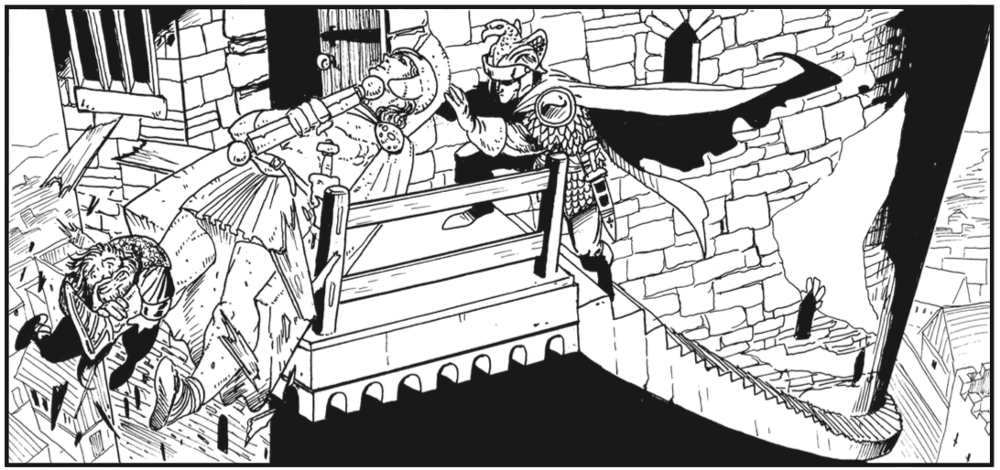
Varak has decided that he wants good physical stats: Ag, Co, St, and Qu. He needs at least 90s in his prime stats, In and Co. So he determines his temporary stats by assigning his 665 points as follows:
Ag: 96 requires 126 points Co: 90 requires 90 points Me: 38 requires 38 points Re: 43 requires 43 points SD: 39 requires 39 points Em: 20 requires 20 points In: 90 requires 90 points Pr: 50 requires 50 points St: 92 requires 94 points Qu: 75 requires 75 points Total = 665 points

To determine each of your character’s potential stats, take the corresponding temporary stat and increase it by the roll indicated in the Potential Stat Table T-1.3.
A starting potential stat will be at least as high as its temporary stat. So, if a roll for a potential stat gives a result that is less than its corresponding temporary stat, the potential stat is instead equal to the temporary stat.
Player Option: Add a fixed modification (from the column marked † on the Potential Stat Table T-1.3) to each temporary stat to obtain the corresponding potential stat. If this option is used no rolls are made to determine potentials.
Example: Now Varak must determine his potential stats by rolling as indicated on the Potential Stat Table T-1.3.
Temporary Stat Required Roll Actual Dice Roll Resulting Potential Stat Ag: 96 95+1d5 3 98 Co: 90 90+1d10 3 93 Me: 38 40+6d10 3,5,8,2,3,6 67 Re: 43 40+6d10 1,7,8,4,5,6 71 SD: 39 40+6d10 4,2,10,3,9,5 73 Em: 20 20+8d10 2,7,4,1,6,10,4,5 59 In: 90 90+1d10 7 97 Pr: 50 50+5d10 5,3,7,2,8 75 St: 92 91+1d9 1 92 Qu: 75 80+2d10 4,7 91
Potential stats have no effect on play whatsoever. Permanently disabling injuries may be reflected in a reduction of potential stats; shorter term disabilities usually result in temporary stat reductions (see Gamemaster Law).
For each temporary stat, look up the corresponding “basic stat bonus” from the Basic Stat Bonus Table T-2.1. Record these values in the appropriate spaces in the Stats section of your Character Record Sheets. For a given stat, the “stat bonus” used in the RMSS is the sum of the character’s basic stat bonus, the character’s racial stat bonus, and any special stat bonuses the character may have.
Example: Varak must now record each of his basic stat bonuses.
Ag: +8 Co: +5 Me: 0 Re: 0 SD: 0 Em: -3 In: +5 Pr: 0 St: +6 Qu: +2
During his early years of life (i.e., his adolescence), your character will develop his skills and skill categories as indicated in the Adolescence Rank Table T-1.6. Each skill and skill category that is developed will increase its rank by a fixed number of ranks. The exact number of ranks can be found in the column of the Adolescence Rank Table T-1.6 that corresponds to your character’s culture/race. The significance and mechanics of skills are described in Section 6.0.
Your character’s skills are based upon his cultural/racial background. For example, if your character is raised in an Dwarvish society, he would use the appropriate Dwarf skill development.
On your character record sheet, you should record each of your character’s skills and skill categories that receive adolescence ranks.
Note: Most skills and skill categories are not included in the Adolescence Rank Table T-1.6 because no culture/race develops those skills during adolescence.
Note: Upcoming RM sourcebooks will have various adolescence rank tables based on a character’s family status and other background factors.
The Adolescence Rank Table T-1.6 indicates a number of Hobby ranks for each culture/race. These Hobby ranks may be used to increase the ranks of any combination of skills and/or skill categories. However, the following restrictions apply:
No skill or skill category may be increased by more ranks than the maximum ranks that normally may be developed when advancing a level.
The skill or skill rank developed must have a development point cost of less than 40.
Example: Varak’s DP cost for a language skill (Communications skill category) is 3/3/3, so he could develop up to 3 ranks by using 3 Hobby ranks. His DP cost for Stalking skill (Subterfuge • Stealth skill category) is 1/5, so he could develop up to 2 ranks by using 2 Hobby ranks. His DP cost for Attunement skill (Power Awareness skill category) is 5, so he could only develop up to 1 rank by using 1 Hobby rank.
Your character receives a number of background options during adolescence as indicated in the Adolescence Rank Table T-1.6. The use of background options is detailed in Section 14.0.
Your character starts out with a number of language skill ranks as indicated in the appropriate culture/race description in Appendix A-3.
Your character receives a number of additional language skill ranks during adolescence. Each of these ranks may be allocated to the allowed languages listed for your character’s culture/race in Appendix A-3. The maximum number of ranks that may be developed during adolescence is also provided for each language in Appendix A-3. Remember, spoken and written skills for each language must be developed separately.
Example: Varak is a High Man so he must record the specific skill ranks and skill category ranks listed in the High Men column of the Adolescence Rank Table T-1.6.Varak gets four background options. These will be discussed in Section 14.0. Varak also gets 10 hobby ranks. He assigns them as follows:
Armor • Light skill category 1 Rigid Leather skill 1 Armor • Medium skill category 2 Chain skill 2 Athletic • Brawn skill category 1 Athletic • Endurance skill category 1 Swimming skill 1 Athletic • Gymnastics skill category 1 Alertness skill 2 Awareness • Searching skill category 1 Body Development skill 3 Communications skill category 3 Lore • General skill category 3 “Own” Region Lore skill 3 High Man Culture Lore skill 3 Outdoor • Animal skill category 1 Riding skill (horses 1 Outdoor • Environmental skill category 1 Power Awareness skill category 1 Science/Analytic • Basic skill category 1 Technical/Trade • General skill category 1 Weapon • 1-H Edged skill category 2 Broadsword skill 2 Weapon • 2-Handed skill category 1 Two-Handed Sword skill 1 Weapon • Missile skill category 1 Composite Bow skill 1 Weapon • Pole-arms skill category 1 Spear skill 1 Referring to the High Men culture/race description in Appendix A-3.9, we see that Varak starts knowing the following languages with the following skill ranks (S=Spoken, W=Written):
Weapon • 1-H Edged skill category 2 Broadsword skill 2 Subterfuge • Stealth skill category 2 Stalking skill 2 Power Point Development 1 Body Development 1 Varak allocates his 12 additional language skill ranks to to increase his High-speech and Common-speech from S8/W6 up to S10/W10 (see App. A-3.9).
High-speech S8/W6 Common-speech S8/W6 Grey-elvish S6/W6 High-elvish S2/W2

Your character has a certain number of background Background options normally include: extra languages, extra money, extra stat gain rolls, special items, special skill & skill category bonuses, and talents. The Adolescence Rank Table T-1.6 summarizes how many background options members of each culture/race get.
Note: Your Gamemaster may choose to assign any or all background options in his own manner.
This option allows your character to learn extra languages. The Gamemaster may wish to restrict which languages your character may choose. Normally, choosing such a background option means that your character may allocate 20 skill ranks to the “extra languages” allowed for his culture/race (see Appendix A-3). The limit on how may skill ranks (spoken and written) may be allocated any “extra language” is also provided in Appendix A-3.
Example: A language listed as “Common (S8/W6)” in your character’s culture/race description may only have its spoken skill rank raised to 8 and its written skill rank raised to 6.
This background option is extra money that your character can start with. Each player character normally only starts with 2 gold pieces (Section 17.2). Instead of actual money, characters from certain cultures/races start with an equivalent value of goods and/or livestock (see Appendix A-3). There are three ways to get extra money with background options:
Your Gamemaster may assign you a fixed amount of money.
You may roll on the “Extra Money” section of the Background Options Table T-1.5.
You may use two background options and chose an amount of money (usually 200 gp) from the “extra money” section of the Background Options Table T-1.5.
This background option gives your character an extra stat gain roll (see Section 7.3) for each of his skills.
These are magic or unusual items that your character has had handed down to him or which fate has placed in his possession. Such items are keyed to a specific player character or to a character’s profession and culture/race (see Appendix A-3). There are three ways to get a special item with background options:
Your Gamemaster may create a special item designed specifically for your character.
You may roll on the “special items” section of the Background Options Table T-1.5.
You may use two background options and chose an item from the “special items” section of the Background Options Table T-1.5.
Each time a character attempts to use a background options item not specifically keyed to him, he must make a static maneuver modified by his Attunement skill bonus (Section 24.0). This makes such items much harder to sell. Spells from these items are always cast as if “instantaneous” (see Section 26.0 and Appendix A-2).
This background option provides a special bonus to one of your character’s skills or skill categories. The bonus is +10 to a skill or +5 to a skill category; however, the following restrictions apply:
The skill or skill category must have a standard or a combine skill rank bonus progression (see Section 6.0).
Only one such special bonus may be acquired for each given skill and skill category.
You may chose a talent with one or more of your background options. Talents are certain extraordinary capabilities that some characters possess. In many cases these capabilities distinguish a player character from the general populace and are part of the reason that he has chosen to adventure rather than stay home on the farm.
Appendix A-5 presents a number of different talents and the flaws that are sometimes associated with talents. Choosing a talent as a background option may actually require more than one of your background options. Appendix A-5 specifies how many background options correspond to each talent and flaw combination.
Your Gamemaster may make up talents specifically designed for your character.
Example: Varak has four background options to allocate (see Table T-1.1 and Table T-1.6). He allocates two to get a major talent (randomly determined with a associated flaw), one to get a special item, and one to get a special +10 bonus to his Broadsword skill.
Referring to the Major Talents Chart (see Appendix A-5.1), Varak rolls a 70 and gets a special +5 SD stat bonus. His GM rolls a 41 for Varak’s corresponding Major flaw—Varak is magically vulnerable, all spells cast against him have +10 added to their attack rolls.
Next, he refers to the Background Options Table T-1.5, and rolls a 37. His special item can be a +1 spell adder or a +10 magic item—Varak chooses a +1 spell adder. His GM decides that the item is a small, wooden rod about two feet in length.
Finally, Varak records his special +10 bonus to his Broadsword skill on his Record Sheets.

After his early years of life (i.e., his adolescence), your character will develop his apprenticeship skills. Based upon his five “Development Stats” (see Section 5.2), your character receives a certain number of skill development points (DPs):
DPs = (Ag+Co+Me+Re+SD)÷5
These DPs may be used to:
Increase the ranks of your character’s skills and/or skill categories (see Sections 15.1 & 15.2).
Obtain training packages (see Section 15.3).
Obtain extra stat gain rolls (see Section 15.4).
Note: A Gamemaster may require training time and resources for skill development and stat gain rolls (see Appendix A-9.1).
Example: Varak has 61 development points to use: 61.2=(96+90+38+43+39)÷ 5.
For your profession, each skill category has a standard development point (DP) cost associated with it. Each skill has a standard development point cost equal to the DP cost of its skill category.
There are four types of development point costs:
None — A few skill categories have a DP cost of “–” The rank of one of these skill categories may not be increased by allocating DPs (e.g., Rogues have no base spell lists, so there is no DP cost for the “Spells • Own Realm Own Base Lists” category).
Single Number (#) — A skill or skill category with a single number DP cost may have its rank increased by one by allocating (i.e., expending) DPs equal to its DP cost. The rank of such a skill or skill category may only be increased by one during the skill development process (i.e., once each level advancement, see Section 7.3).
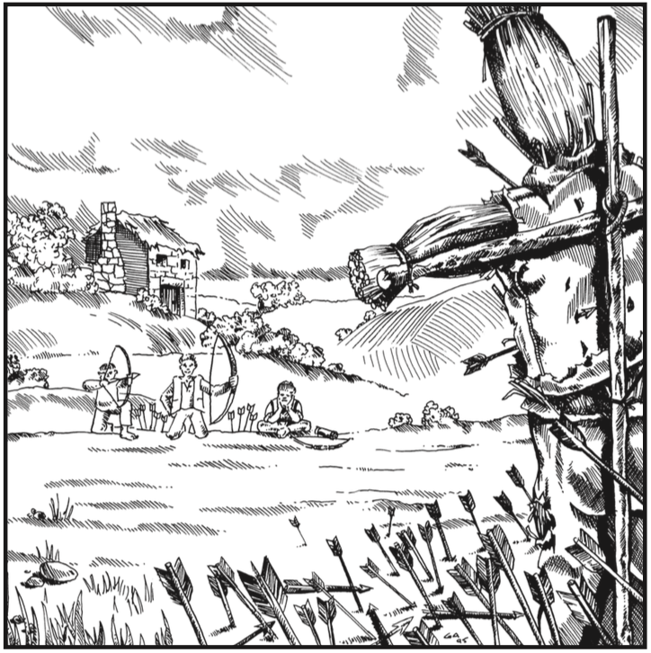Two Numbers (#/#) — A skill or skill category with a two number DP cost (e.g., 2/6, 3/7) may have its rank increased by one by allocating (i.e., expending) DPs equal to the first number or it may have its rank increased by two by allocating DPs equal to the sum of the two numbers. The rank of such a skill or skill category may be increased by a maximum of two during the skill development process.
Three Numbers (#/#/#) — A skill or skill category with a three number DP cost (e.g., 3/3/3) may have its rank increased by one by allocating (i.e., expending) DPs equal to the first number or it may have its rank increased by two by allocating DPs equal to the sum of the first two numbers or it may have its rank increased by three by allocating DPs equal to the sum of the three numbers. The rank of such a skill or skill category may be increased by a maximum of three during the skill development process.
Some of the standard development point costs for your profession may vary based upon a number of factors.
There are seven “Weapon Group” skill categories:
Weapon • 1-H ConcussionYou may rearrange the DP costs for these skill categories. This rearrangement is subject to GM restrictions and the race/culture restrictions outline for your culture/race in Appendix A-3.
Example: Varak assigns his DP costs for weapon categories as follows:Note that Varak has to assign his 3/7 DP cost to 1-H Edged because he assigned 3 hobby ranks to that skill category and 3 hobby ranks to Broadsword skill (see Section 13.0).
Weapon • 1-H Concussion 6 Weapon • 1-H Edged 3/7 Weapon • 2-Handed 6 Weapon • Missile 4 Weapon • Missile Artillery 9 Weapon • Pole Arms 6 Weapon • Thrown 9

The DP costs for a spell list skill rank increases based upon the number of the rank being developed. These DP cost increases are outlined in the Spell List DP Cost Table T-2.4.
Example: Tanvar is a 10th level Ranger (a Semi spell user) and his skill rank is 9 for his Own Realm Open spell list, Concussion’s Way.Looking at Table T-2.4, we see that it will cost him 8 DPs to increase this skill rank to 10. He could not increase it to 11 during the same development period because the DP cost is ‘12’ (a single DP cost number limits development to one skill rank per development process, see Section 15.1).
Similarly, increasing this same skill rank from 13 to 14 costs 12 DPs, from 15 to 16 costs 18 DPs, and from 37 to 38 costs 25 DPs.
In addition, there is a DP cost increase based upon how many spell lists have already had ranks developed during the current level:
For the first five lists developed the DP cost is normal (i.e., x1 modifier).
For the 6th through 10th lists developed the DP cost is doubled (i.e., a x2 modifier).
For lists beyong the 10th, the DP cost is quadrupled (i.e., a x4 modifier).
Example: Myck the Magician (1st level) has 70 DPs with which to develop his apprenticeship skills. He decides that he wants to learn and be able to cast as many 1st level spells as is practical—i.e., for now, he will only develop one rank in each spell list.
He decides to limit himself to the following lists (his least expensive in terms of DP costs): 3 of his own realm open lists (DP cost: 4/4/4), 3 of his own realm closed lists (DP cost: 4/4/4), and five of his own realm own base lists (DP cost: 3/3/3). So he develops one rank for each of three of his open lists for 12 DPs (3 lists x 4 DPs). Then he develops a rank in two of his closed lists for 8 DPs (2 lists x 4 DPs). Because it is the 6th list he develops, his third closed list costs double normal: 8 DPs (1 list x 4 DPs x 2).
Next Myck develops four of his base lists (the 7th, 8th, 9th, and 10th lists developed during this process) for a DP cost of 24 DPs (4 lists x 3 DPs x 2). Because it is the 11th list he develops, his last base list cost quadruple normal: 12 DPs (1 list x 3 DPs x 4).
So Myck has developed one rank for each of 11 different spell lists for a DP cost of 64 DPs (12 + 8 + 8 + 24 + 12). Note that it would have cost more DPs to develop the lists that cost 3 DPs first; in that case, the 4 DP costs would have been multiplied by x2 or x4 instead of the 3 DP costs.
If Myck had concentrated his development of all 11 ranks in five of his base lists, it would have only cost 33 DPs (11 ranks x 3 DPs). So, you can see that developing ranks in more than 5 lists at a time is not very cost effective.
Not all skills within a category are necessarily developed at the same rate. Because some races and/or professions develop specific skills at different rates, some specific skills might be designated as either Occupational, Everyman, or Restricted (e.g., dwarves might be good at most Athletic • Endurance skills, but Swimming is something they are not comfortable doing).
If a skill is designated as Occupational, for every rank developed, the character gains three ranks. A character cannot develop “part” of a rank to gain fewer than three ranks.
If a skill is designated as Everyman, for every rank developed, the character gains two ranks. A character cannot develop “part” of a rank to gain fewer than three ranks.
If a skill is designated as Restricted, for every two ranks developed, the character gains one rank.
Note that the skill remains in its standard category (and the category is not affected in any way). Some skills are restricted by their very nature (these are indicated in italics on the skill category definitions).
Unless a GM decides otherwise, the special skill classifications (i.e., Occupational, Everyman, and Restricted) specified for the professions take precedence over those specified for cultures/races and by the skill category definitions. Similarly, the special skill classifications specified for the cultures/races precedence over those specified by the skill category definitions.
Example: Adrenal Stabilization is a Restricted skill based on its skill category, Self Control (see Appendix A-1.24). However, for the Lay Healer profession, it is a Everyman skill. So Adrenal Stabilization is an Everyman skill for a Lay Healer.
Note: A GM should examine all of the skills and skill categories and specify which skills are Occupational, Everyman, or Restricted for his world system. He should make clear to his players which skills have a special designation within his world.
Note: See Section 6.3 for an example of these types of skill categories and how to handle them.
Example: Aside from the standard skill category defined special skills, Varak has no special skills— his culture/race (High Men) has none and his profession (Ranger) has none.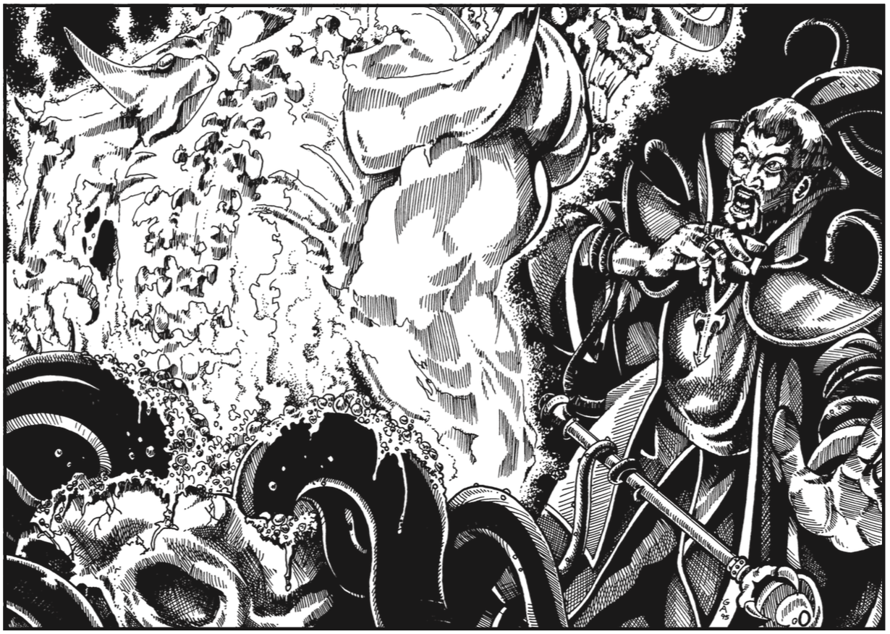
During the apprenticeship skill development process, you may allocate DPs to obtain training packages for your character. Training packages provide the following:
Rank increases for skills and skill categories.
Extra stat gain rolls (see Section 7.3).
Certain special background details (see Section 9.1).
There are 36 different training packages, divided into two types: lifestyle (L) and vocational (V). Normally, a character may only develop one lifestyle training package. Each training package has a specific Development Point cost based upon your character’s profession (see the Training Package DP Cost Table T-2.7). In addition, each training package increases your character’s age by a fixed amount; i.e., it takes time to train. See Appendix A-6 for detailed information on the individual training packages.
During the apprenticeship skill development process, you may allocate DPs to get extra stat gain rolls (see Section 7.3. For every 8 DPs allocated, you may make a stat gain roll for a stat of your choice.
Example: Varak has 61 DPs to use for training packages, for extra stat gain rolls, and for developing his skills and skill categories. First, he decides that he doesn’t want to spend DPs on extra stat gain rolls; he declares that he can wait until he gets his free stat gain rolls when he reaches 2nd level (his GM thinks to himself: “if he gets to 2nd level”).
Varak then decides to develop the Adventurer training package (see Appendix A-6.1) at a cost of 29 DPs. He figures that this will cover most of the commonly used skills he will need while adventuring, leaving the rest (32 DPs) of his DPs for developing his weapon skills, his hits, and his spells. So Varak allocates his remaining DPs as follows:The final example of Varak’s development (at the end of Section 17.4) will summarize all of the ranks that Varak has from hobby ranks, adolescence ranks, training packages, and apprenticeship skill development.
Skill/Skill Category (DP cost) # Ranks DP Cost Weapon • 1-H Edged skill category (3/7) 1 3 Broadsword skill (3/7) 1 3 Composite Bow skill (4) 1 4 Body Development skill (4/12) 1 4 Path Mastery skill (6/6/6, base spell list) 1 6 I Nature’s Way skill (6/6/6, base spell list) 1 6 nner Walls skill (6/6/6, base spell list) 1 6 Total: 32
You should develop a detailed scheme and outline of your character’s role or persona based upon his role traits and background details (Sections 9.1 & 9.2). This may be your own persona, in which your character is basically yourself placed in the game world and situation. Alternatively, you may choose a persona entirely different from your own, or some medium between the two extremes.
There are certain factors, called role traits, which are not formalized in the RMSS but which still affect the role of your character. Section 9.2 details the four role traits used in the RMSS:
Motivation
Personality
Alignment
Physical Appearance
Each of these role traits represents a facet of your character’s individual nature and temperament. These factors bring your character to life in the terms of the game, and they make your character seem more realistic to you, the other players, and the Gamemaster.
Note: If you or your GM want to, the Random Role Trait Table T-1.7 can be used to generate random role traits for your character.
You must determine the general factors that make up your character’s physical appearance: height, weight, hair color, eye color, gender, age, and so on. Your Gamemaster must decide whether to assign these factors or whether you may choose them within the limits given in the racial/cultural descriptions in Appendix A-3.
In addition, you may want to give your character a “demeanor.” This is an indicator of the general attitude that your character seems to present to the world. This is up to you and your Gamemaster, but typical demeanors include: calm, aloof, stern, neutral, angry, sly, greedy, silly, stubborn, stupid, rude, etc. For more examples, you can refer to the personality role traits listed in Section 9.2.
In addition to cultural/racial factors, it is often useful to have numerical value that reflects a character’s general appearance (i.e., attractiveness, comeliness, beauty) to other members of his race. Appearance is a value (1-100) which gives a general idea of the character’s exterior look (e.g., an 01 or 02 Appearance would indicate a really ugly person, while a 99 or 00 would indicate a very handsome character).
Appearance is a role trait that is handled in many ways as if it were a stat. A character’s potential Appearance is based upon a character’s potential Presence stat and it can be generated when stats are generated:
Results of greater than 99 are treated as 100, and results less than 02 are treated as 01.
A characters temporary Appearance is equal to his potential appearance if he is well groomed and well dressed (GM discretion). Potential Appearance can rise or drop during play due to circumstances (e.g., scars, diseases, increases in Presence, etc.). This is a very subjective rating and the Gamemaster should treat it as a general guideline during play.
Example: Varak’s player decides not to roll for his motivation, personality, and alignment (his GM agrees). Instead, he chooses motivation role traits of: “Destroy Chaos” and “Promote Law and Order.” He chooses personality role traits of: Idealistic, Devout, and Stoic. He chooses as an alignment role trait: Laws/Principles.
For physical appearance, Varak chooses the following (after referring to Appendix A-3.9):Varak’s potential Pr is 75 and he rolls 23 on 5d10; so his Appearance is 73 = 75 - 25 + 23.
Height: 6'4" Weight: 220 lb. Hair: Black Eyes: Hazel Gender: Male Demeanor: Confident & Proud
Your Gamemaster should develop a general background and history for the character that you are developing (see Section 9.1). After you have chosen your character’s background options and role traits, the GM may use these choices to help develop your character’s general background. For example, if you chose three extra money background options, an item background option, and an extra language background option, your GM might tell you that your character is a merchant’s son. If you chose three talent background options and a money background option, your character might be a farmer’s son who has left the farm for adventure. This is up to your GM, although you may have some input. The amount of detail that goes into this depends upon the amount of effort that the Gamemaster is able and willing to put into it.
Example: Varak is a noble person, devoted to upholding “Law & Order.” Unfortunately, he tends to carry this to an extreme. To him most violations of the “Law” should be immediately punished, even relatively minor violations. He also wants to find his father (living or dead), if it does not interfere with his other goal.

Once you have completed the steps outlined in Sections 11.0-16.0, you need to obtain equipment and supplies for your character. You also needs to total each of your character’s bonuses (i.e., Offensive Bonuses, Defensive Bonus, Moving Maneuver bonuses, etc.).
A Gamemaster should look to the nature of the local/world economic system to determine how much money a character should start with. Generally, we suggest a character should start with a modest sum (e.g., the value suggested in Section 17.2 is two gold pieces). This will allow him to acquire the basics in terms of armor, weaponry, food, and survival tools.
Characters starting in mid-campaign will invariably receive help from fellow player characters, but may need better than average equipment to withstand heightened challenges (i.e., those not normally faced by first level groups). Some characters may receive no money (e.g. those found robbed and beaten up), but these situations must be carefully weighed.
Remember, the players should not be too rich (they need something to work for) or too poor (they need something to work with).
Your character’s minimum starting age is sixteen plus the months required for any training packages (see Sections 14.0 and 15.3) that he starts with. He can be any age that is greater than this minimum. A GM may wish to modify this minimum based upon the culture/race being played (e.g., he may decide that Elves have a minimum age of 50 plus the training packages years).
Example: Varak developed the Adventurer training package which requires 24 months. So Varak can start at an age of 18 or more. He chooses to start at an age of 22
Your character automatically begins the game with the equipment and money listed below. The culture/race description for your character provides details and suggestions for this equipment and money (see Appendix A-3).
Up to two normal weapons of his choice (in addition to any special items). He must have a skill rank of at least one in each weapon skill that applies to these weapons.
One suit of armor if his appropriate adjusted Armor skill bonus for that armor is -10 or higher.
Clothes (including cloak and boots), scabbards for his weapons, a weapons belt, belt pouch, and normal personal effects.
Two gold pieces (or its equivalent value in other coins and/or belongings, see Appendix A-3) with which to buy equipment and to survive on until he can get more. In addition, your character may start with more money from his background options (Section 14.0).
To begin the game, your character may also purchase any equipment and supplies that he wishes from the Tables in Appendix A-8 with this cash. If your character has enough money and your Gamemaster approves, these purchases may include herbs and perhaps items with magic bonuses (see Section 32.1). The Gamemaster may wish to make other equipment available.
You can keep track of your supplies and equipment on the back of your Character Record Sheets.
In summary, your character starts play with:
Two weapons (at least skill rank 1 with each).
Armor (Armor skill bonus must be at least -10).
Clothes, including cloak and boots.
Scabbards, weapon belt, belt pouch.
Normal personal effects.
Two gold pieces (or the equivalent in his culture).
Any equipment & money from background options.
Equipment purchased with your starting money.
Example: Varak must now determine what equipment and supplies he will carry. As starting equipment, he may automatically choose to have:Varak has 2 gold pieces to spend on other equipment (see Appendix A-8). He decides to buy (based on “city cost”):
Starting Equipment weight in lb. A broadsword 4.0 A composite bow 2.5 Rigid Leather Breastplate (AT: 9) wear Clothes (includes boots and cloak) and personal effects wear Weapons belt & belt pouch wear 2' Wooden Rod (+1 spell adder) 1.0 Total: 7.5 These purchases leave him with 6 silver pieces, 3 bronze pieces, 4 copper pieces, and 5 tin pieces.
gp sp bp cp tp weight in lb. 0 0 0 0 0 Starting equipment 7.50 0 1 5 0 0 Leather helm wear 0 5 5 0 0 Normal Shield 15.0 0 3 0 0 0 Dagger 0.75 0 0 5 0 0 Quivers (20 Arrows) 3.50 0 0 3 3 0 Backpack & Frame 3.50 0 0 2 0 0 Light Bedroll 5.00 0 0 1 0 0 Tarp 4.00 0 0 1 0 0 Flint and steel 0.50 0 2 4 0 0 100' superior rope 6.00 0 0 0 1 5 5 torches 5.00 0 0 0 1 0 Waterskin (full) 0.75 0 0 1 0 0 Trail rations (1 week) 14.00 1 3 6 5 5 Total: 65.50
You should total the weights of all of your character’s equipment and supplies (other than clothes and armor) (see Appendix A-8 for weights). If the total is over your character’s weight allowance (i.e., 10% of his weight), an encumbrance penalty will result (see Section 22.2).
A character’s MMP modifies all of his moving maneuvers (see Section 8.6).
Example: In the Example in the previous section, Varak equipped himself and figured out how much weight he was carrying, 65.5 pounds. Varak has a weight of 220 pounds, so his weight allowance is 22 pounds. Varak wears a rigid leather breastplate (AT: 9), which has an Armor Quickness Penalty of zero, a Maximum Maneuver Modification of -50 and a Minimum Maneuver Modification of -5 (see the Armor Table T-3.3). His Strength stat bonus is +10, and his Rigid Leather skill bonus is +27 (+2 skill category bonus +3 skill bonus +22 stat bonus).
Because he is carrying between 2x and 3x his weight allowance, Varak’s Encumbrance Penaltyis -16 (see the Encumbrance Chart. However, his Weight Penalty for movement purposes is zero:
Weight Penalty = the lesser of: 0 or (Armor Qu Penalty + Encumbrance Penalty + 3x St stat bonus)
For a normal person (with 0 St bonus), the Weight Penalty would be -16. People have teased Varak that he would make a good pack animal (the teasing does not usually last long and is seldom repeated).
Varak would start incurring a penalty if he picked up 23 more pounds of stuff, so he tells the GM that a lot of the heavy stuff (waterskin, rope, most of the rations, bedroll, tarp, and torches) is in his backpack. Then even if he enters a fight or has to run away carrying someone, he can drop his pack and his Weight Penalty will not cause him to suffer much (it can never be greater than 0). 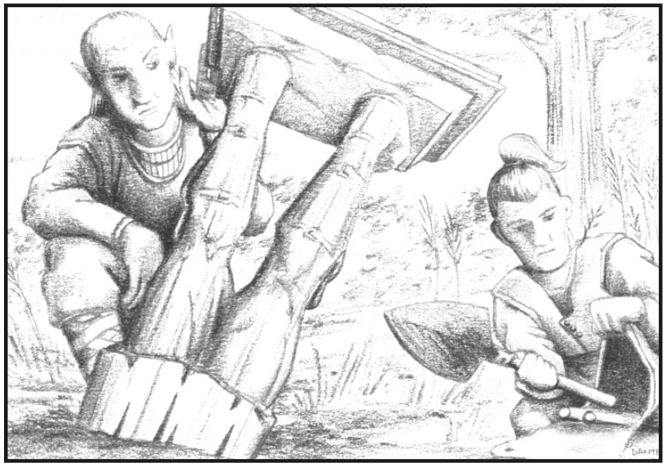 A character’s MMP is equal to the sum of:So, Varak’s MMP is -13 = 0 + [-50 + 27] (see Section 8.6). Varak realizes that he needs to develop some more armor skills.
- lesser of: 0
or (Encumbrance Penalty + 3 x St stat bonus)- lesser of: armor’s Minimum Maneuver Mod.
or (armor’ s Maximum Maneuver Mod.)
+ (skill bonus for the armor worn)
At this point you must determine and total your bonuses for all of your character’s skills and other capabilities. In addition, you should record that your character is 1st level and has 10,000 Experience Points.
For each of your stats, the basic stat bonus from the Basic Stat Bonus Table T-2.1, the racial stat bonus modification from the Race Abilities Table T-1.1, and any special bonuses should already be recorded in the appropriate space next to the stats on your Character Record Sheet. So, add the values for each stat and record the total in the “Stat Bonus” space.
Then, for each skill, you need to record the sum of the bonuses for the stats that apply to that skill.
Total the number of skill ranks for each skill and determine the bonus from Skill Bonus Table T-2.2. Then record each bonus on the appropriate skill’s bonus line of your Character Record Sheet.
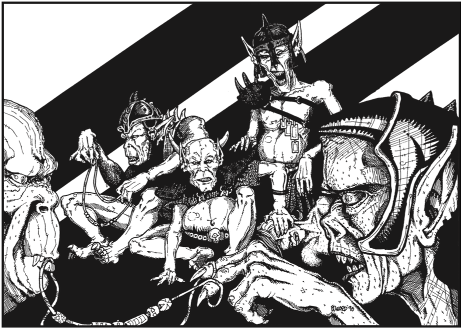Total the number of ranks for each skill category and determine the bonus from the Skill Bonus Table T-2.2. Then record each bonus on the appropriate skill bonus lines of your Character Record Sheet (i.e., on each line for a skill that is in that skill category).
Each profession receives bonuses for certain skill categories (see Section 11.2 and Table T-1.4). Record these bonuses in the Profession Bonus spaces of all skill categories to which they apply.
Certain magic items provide bonuses to certain skills. Record these bonuses on your Character Record Sheet.
These bonuses can come from background options, spells, equipment penalties, etc. Record these bonuses on your Character Record Sheet.
Finally, for each skill and capability, you must add together the individual bonuses and record the result in the Total Bonus space on the player Character Record Sheet. These “Total” skill bonuses are the values that are actually used when playing.
Your Defensive Bonus has a section on your Character Record Sheet. You should fill in the space with the appropriate values: 3 times your Qu stat bonus, Armor Quickness Penalty (if any), Adrenal Defense skill bonus (if any), your shield bonus (if any), and any special bonuses.
Your should record your Body Development skill bonus in the space marked: “Hits.”
Your should record your Power Point Development skill bonus in the space marked: “PPs.”
This part of the RMSS is concerned with how to resolve a variety of actions and activities that commonly arise in role playing games. These guidelines primarily address action in a tactical environment, but they can be easily extended to a more strategic setting (see Section 27.0).
In a tactical situation (usually combat), action is resolved in terms of feet and seconds. Normally during the RM tactical sequence, each character may take up to three actions every 10 seconds. This 10 second period is called a “round.” A round usually takes considerably longer than 10 seconds of real time to resolve. Some typical actions are:
Preparing a spell
Casting a spell
Making a missile attack
Loading or Reloading a missile weapon
Parrying a missile attack
Making a moving maneuver
Making a melee attack
Full movement
Making a static maneuver
The basic principle to keep in mind is that each action takes a percentage of the total activity that a character has for a round. For example, one can view a melee attack as 60-100% of the total activity for a round, casting a spell as 10% or 75% activity, preparing a spell as 90% activity, and movement as 0-100% activity. Of course, the sum of a character’s % activities cannot normally exceed 100%.
Certain factors may affect the actions that a character may take. Most of these are obvious and can be resolved by using common sense (e.g., a character with a broken arm can’t use a two-handed weapon or a bow; an unconscious character can perform no action, except perhaps breathing, etc.). The Gamemaster is, of course, the final authority on these matters.
The Gamemaster and the players should divide up the work involved in controlling a tactical combat situation. The Gamemaster has to handle the physical layout and all of the non-player characters, but the players can help with other factors. For example, one player can keep track of the damage taken and status of each character. A record sheet (see Section T-6) is provided for this and may be photocopied for non-commercial purposes. Another player can keep track of the round and action sequencing (Section 18.0). Another player can record activity by player characters which can later lead to experience points. Other players can handle the tables and read off results during play. By dividing up these tasks the game flows very smoothly, everyone gets involved, and no one is swamped with work.
This section provides guidelines for determining how to sequence the resolution of the actions that take place in a given round. While each action takes a percentage of a character’s activity for a round, it is important to keep in mind that when an action is resolved is not determined by the percentage activity it requires. Rather, the sequencing of an action is based upon how fast the character is attempting to accomplish the action and the character’s initiative roll. How fast the character is attempting to accomplish his action is abstracted into a simple decision for each character — Is the action:
| A snap action? | resolved earlier with a -20 modification |
| A normal action? | resolved normally |
| A deliberate action? | resolved later with a +10 modification |
Example: A single melee attack is an action that requires 60-100% activity—it represents a number of swings, parries, dodges, etc. However, it is assumed that only one actual blow lands and that the attacker makes such a blow when a good opportunity presents itself.
When a character makes a melee attack as a “snap action,” he has probably taken the first opportunity for a blow and resolves it early in the round sequencing. However, he still spends the rest of the % activity for the action in melee and the fact that he took the first and not the best opportunity is reflected in the - 20 OB mod.
A melee attack made as a “normal action” is assumed to take the first good opportunity.
A melee attack made as a “deliberate action” is assumed to wait for the very best opportunity. So it is resolved late in the round and receives a +10 OB mod.
Movement can take up to 100% activity for a round. However, depending upon the phase it is resolved in (i.e., snap, normal, or deliberate), the % activity for a specific movement action is limited. More than one movement action can be taken in a given round.
A snap movement action can take no more than 20% activity (i.e., the character can only move up to 20% of his movement rate).
A normal movement action can take no more than 50% activity (i.e., the character can only move up to 50% of his movement rate).
A deliberate movement action can take no more than 80% activity (i.e., the character can only move up to 80% of his movement rate).
Actions are normally performed in the following order during a round (unless a character cancels his action or puts it into an “opportunity state”):
Action Declaration Phase — Declare all actions: snap actions, normal actions, and deliberate actions. Each combatant may declare up to one of each of the three types of actions, but the total activity percentage of all of his declared actions may not exceed 100%. If a melee attack or a missile parry is declared, parry proportions must also be declared (see Section 23.2.6).
Initiative Determination Phase — Each combatant must make an initiative roll: (2d10 + Qu Bonus + modifications)
Snap Action Phase — Resolve all snap actions in the order indicated by initiative rolls. 20% is the maximum activity for a movement action.
Normal Action Phase — Resolve all normal actions in the order indicated by initiative rolls. 50% is the maximum activity for a movement action.
Deliberate Action Phase — Resolve all deliberate actions in the order indicated by initiative rolls. 80% is the maximum activity for a movement action.
Note: Awareness and Orientation rolls are used when required by circumstance (see Section 21.2 & 21.4).
Note: Conflicting actions may modify this sequence (see Section 21.3).
At the beginning of each round, each player should state or write down (the GM must decide which) what actions he wishes his character to perform for that round. Each combatant may declare up to one of each of the three types of actions, but his total declared activity percentage may not exceed 100%. He must also indicate during which phases each action will occur.
At the same time, the GM should decide what actions the non-player characters will take. The actions are then resolved in the order specified by the sequence above. The following sections describe how to resolve the various actions.
Each character must make an initiative roll:
2d10 + Qu Bonus + Modifications
| Condition | Modification |
| Surprised | -4 |
| Taken more than 50% of hits | -4 |
| Encumbrance | -1 per -10 encumbrance mod. |
| Declared Movement | -1 per 10% of maximum movement activity (based on declared pace) |
These rolls determines the order in which certain types of actions are performed (i.e., snap, normal, and deliberate actions)—highest rolls go first.
During this phase all snap actions are resolved using the following restrictions:
A snap action receives a -20 modification.
All snap actions are resolved in the order indicated by initiative rolls.
20% is the maximum activity for a movement action.
During this phase all normal actions are resolved using the following restrictions:
All normal actions are resolved in the order indicated by initiative rolls.
50% is the maximum activity for a movement action.
During this phase all deliberate actions are resolved using the following restrictions:
A deliberate action receives a +10 modification.
All deliberate actions are resolved in the order indicated by initiative rolls.
80% is the maximum activity for a movement action.
Any unused activity (maximum of 80%) may be used as movement that is simultaneously resolved after all of the deliberate actions have been resolved.
Example: Jax (a Half-elf Thief) has just finished climbing a rope onto the flat roof of a tower. His buddy, Naug (a Dwarven Fighter), is still climbing up behind him. Unfortunately, the large Ogre coming up a stairwell (10' away) sees Jax and is not happy (his buddies downstairs are also upset).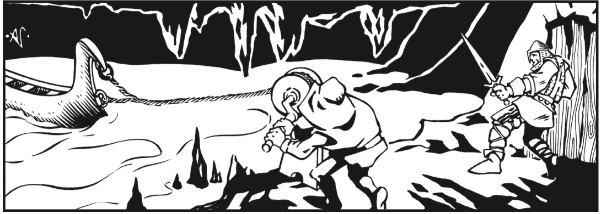 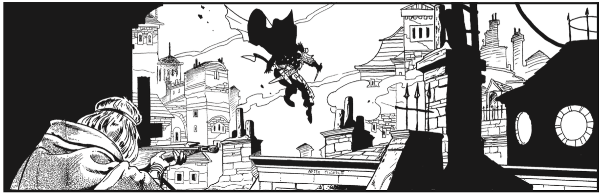
At the start of a new round, Jax declares that he will draw his broadsword as a snap action (20%) and melee attack as a normal action (80%). He also declares that all of his OB will be used to parry. Naug decides to use all of his activity (100%) as a deliberate action to finish climbing the rope. The GM declares that the Ogre will just walk over (snap action) to Jax and attack (normal action).
Jax’s initiative roll (IR) is 16, the Ogre’s is 9, and Naug’s is 7 (as if it mattered).
During the snap action phase, Jax draws his weapon and then the Ogre moves 10' to Jax. Since the Ogre’s movementrate is 50'/rnd, it takes 20% of his activity to move the 10'.
During the normal action phase, Jax’s action is resolved first (due to his 16 IR)—he makes a +0 OB attack because he used his entire OB to parry. Jax misses and then the Ogre attacks (after he finishes laughing). He must subtract Jax’s “OB-20” (Jax used 20% activity to draw a weapon) and “-20” (due to 20% activity the Ogre used to move). The Ogre also misses and Jax breathes a sign of relief.
During the deliberate action phase, Naug makes a successful Climbing static maneuver, reaches the top, and reluctantly scrambles onto the roof.
At the start of a new round, Jax declares that he will attack with his broadsword as a deliberate action (100%). He also declares that half of his OB will be used to parry. Naug decides to use 20% activity as a snap action to draw his war hammer, 20% of his activity to move behind the Ogre, and 60% activity to attack as a deliberate action. The Ogre is really incensed—he missed the little elf-boy—this time he attacks as a snap action (100%).
Jax’s initiative roll (IR) is 11, the Ogre’s is 10, and Naug’s is 14 (as if it mattered).
During the snap action phase, Naug draws his war hammer first (IR: 14). Then the Ogre attacks (IR: 11)—he must subtract Jax’s “OB x 0.5” (Jax used 50% activity to parry) and “-20” (the penalty for a snap action). The Ogre hits Jax this time but only delivers a few hits. During the normal action phase, Naug moves behind the Ogre.
During the deliberate action phase, Naug makes his attack first (IR: 14)—he must subtract -40 (due to the 40% activity already used), but he gets +15 for a flank attack and +20 for a rear attack. He delivers a mighty blow and the Ogre drops. Jax would like to cancel his attack action, but he cannot because he has already used 50% of his OB to parry the Ogre.
There are a number of commonly arising exceptions to the sequencing described in Section 18.1. In addition, Section 20.0 discusses some other special situations that arise during tactical situations.
When comparing two melee actions, the initiative for each melee action should be modified by the following modifications:
| Condition | Modification |
| Stronger Combatant | +1 |
| One hand free | +1 |
| Pole Arm (on 1st rnd of combat between 2 opponents | +5 |
| (after 1st rnd of combat between 2 opponents | -1 |
| Longer weapon, neither combatant is charging | +1 |
| Longer weapon when one or both combatants are charging | +3 |
| Special situation (GM decision) | varies |
Example: Naug and Cro are fighting on the slippery deck of a ship. Naug has deck shoes with non-skid soles, but Cro does not. The GM gives Naug a special +3 to his initiative roll in this tactical situation.
When it comes time during a round to resolve a character’ s declared action, he has the option of putting his action into an “opportunity” state (i.e., it becomes an opportunity action). Any other actions that the character has declared for the current round are nullified. In effect, such an action is delayed until the character wishes to resolve it.
An opportunity action may be resolved during any following Action Phase after it has been declared. A character may not perform any other action until his opportunity action is canceled (see below) or resolved; however, he does get 20% of normal activity usable only for movement at the end of the Deliberate Action Phase.
Opportunity actions represent activities like: waiting for a target, setting an ambush, waiting to push a boulder down on someone, etc.
During a round a character may cancel all of his remaining actions before they would otherwise be resolved. If the canceled actions total less than 60% activity, the character may move 10% of his normal movement as a deliberate action. If the canceled actions total more than 60% activity, the character may perform one of the following alternative actions:
Move 50% of his normal movement as a deliberate action.
Melee as a deliberate action with an additional -40 OB modification.
Make a maneuver as a deliberate action modified by an additional -40.
Note: If part of a character’s OB has already been used to parry a foe (see Section 23.2.6), he may not cancel the related attack action.
Example: Dral has already moved 20' (20% activity) during the Snap Action Phase. Dral has a declared melee attack normal action (80% activity) against Morg the Orc. However, Darien knocks Morg unconscious with a spell early in the Normal Action Phase. Having no active foe, Dral decides to cancel his declared action. His canceled actions are more than 60%, so he can move over to another foe using half his normal movement (50' at a run).
Spell preparation and casting is not a multi-round action (see above). Instead, spell preparation is a completely separate 90% activity action and casting a spell that is not instantaneous is a completely separate 75% action. A spell caster need not declare ahead of time how many rounds of preparation he will take, i.e., he can declare a spell casting action at the beginning of any round.
Instantaneous spells are unaffected by preparation and require 10% activity. However, under no circumstances may more than one spell be cast each round.
Example: Darien declares a spell preparation action for a Sleep VII spell. He plans to prepare for one or two more round and then cast it on the nearest available target. However, during the round an Orc starts moving towards him. So at the beginning of the second round, Darien declares that he is casting the spell at the approaching Orc.
Some actions require more than 100% of a round’s activity. To start such an action, a character must declare it as an action normally. In each following round, the character must decide whether or not to continue the multi-round action. If he decides not to continue, he may declare his actions normally.
For these purposes, each multi-round action falls into one of the following categories:
Continuous — No other action may be performed while the multi-round action is being performed; i.e., it requires continuous activity.
Limited — Only specific limited actions may be performed while the multi-round action is being performed. Loading a crossbow is a limited multi-round activity, a character may move 30% of normal (at a “fast walk” maximum pace).
Unlimited — Any desired action can be performed while the multi-round action is being performed.
Example: A GM rules that applying Dral can apply a tourniquet to a very bad bleeding wound as a 200% continuous activity. So, it would take two full rounds to complete, with no other actions taken during those rounds. However, if Dral decides not to continue the action at beginning of the second round, the action fails and he may declare other actions normally.
Dral wants to fire and then reload his heavy crossbow (a 210% activity). He declares a 60% activity missile attack normal action and a 40% activity beginning of his multi-round reload deliberate action. The next round he declares 20% activity movement as a normal action and an 80% activity reload deliberate action. On the third round, he declares a 90% activity normal action to complete his reloading and a 10% activity movement as a deliberate action.
The GM tells Dral that sawing through a rope with his pen knife is a multi-round action that requires 2000% activity, but that the action is unlimited. So for 2 rounds Dral saws away at 100% activity each round. The next round he rests and tries to think of some other approach. Each of the next 4 rounds he halfheartedly saws at 25% activity while complaining with 75% activity. He stops again for 6 rounds to argue with his friends over who should do the sawing. Finally, under intense peer pressure, he buckles down (cursing under his breath) and saws away for 17 more rounds at 100% to finish cutting the rope.
Certain spells will modify the normal turn sequence to some degree. The most common of these modifications will be Haste (or Speed). A person who is hasted will basically have 200% normal activity, but must abide by the following restrictions:
Such actions follow the normal restrictions with regards to sequencing.
A hasted character may not cast more than one spell per round, but he may prepare twice or prepare once and cast a spell.
Unused activity can be used for movement during the phase in which an action was not resolved (or at the end of the Deliberate action Phase).
Note: Haste also has certain liabilities: e.g., a hasted character expends exhaustion points (see Section 22.3) at double normal rate, a wounded character bleeds at double normal rate, etc. A GM should consider the ramifications of Haste very carefully before using it in his game.
Normally, a combatant cannot throw or fire missiles while engaged in melee. For these purposes, a combatant is engaged in melee if:
A foe attacked him in the previous melee phase, and
That foe is still within striking distance (i.e., usually within 5-10'), and
That foe’s action for the current round is to melee the combatant.
A mounted character (e.g., riding a horse) may use one action (10-100% activity) each round to attempt to control his mount. This is a Riding static maneuver (see Appendix A-1.18). If a character does not control his mount, his mount will take the same action that it took the previous round or it will take some action that it wants to take (e.g., stop to eat grass, flee a dangerous situation, etc.). A war-trained mount might be more likely to continue with battle activity even on an “uncontrolled” basis.
If his mount is controlled, a character may move with the mount (as the character desires) and may use the rest of his activity for other actions.
A mounted character’s OBs are limited by his Mounted Combat skill bonus (see Appendix A-1.11).
Example: Onri is riding along on his mule, Buttercup and he spots an Orc 100' away. Buttercup has a movement rate at a run pace of 180'. Onri declares his actions for the next round as: a control mount normal action with 20% activity and a melee attack deliberate action with the remaining 80% of his activity. So, if he makes his Riding static maneuver, his horse will move up to 180' and Onri can make a melee attack with his spear as he passes the Orc.
Onri’s spear OB is 94 lowered to 74 due to using only 80% of his activity for the attack. His Mounted Combat skill bonus is only 68, so his OB for the attack is limited to 68 maximum.
While stunned, a combatant may not attack and may only parry with half of his Offensive Bonus. The only other allowable actions are movement and maneuvers (modified by at least -50). In addition to normal modifications, stunned maneuvers are also modified by three times the character’s SD stat bonus.
If a character is surprised, a GM may limit his activity for his first round of reaction. We suggest a GM allow a surprised character to take only one deliberate action. The actual % activity allowed should range from 0-100% based upon an orientation roll (see Section 21.4).
The Gamemaster must decide how to keep track of movement, the relative positions of all of the characters, ranges for firing missiles and casting spells, and the layout of the area in which they are adventuring. This usually requires a playing surface that represents the physical situation as well as playing pieces representing the characters and other combatants. Many possibilities exist for such play aids, and the Gamemaster may elect to use whichever seems most appropriate for his game and for a particular situation. Below, we present a few of the most helpful display techniques and hints.
The Gamemaster can sketch the layout on a sheet of paper (or on a black board) and mark the position of each character on it. For small sheets of paper we suggest a scale of 1" = 50'. For a larger surface, 1" = 20' or 1" = 10' would be more appropriate. Many fantasy role playing game miniatures are scaled for 1" = 5'. You can keep track of distance with a ruler. The problem with this technique is lack of detail and the hassles of erasing each time a character moves.
To solve part of this problem we suggest that a playing piece be used to represent the position of each character. These can be as elaborate as the players and Gamemaster wish. Suggestions include: commercially available miniatures (small statues of various types of fantasy characters and creatures), chess pieces, coins, or 0.5" square to 1" square pieces of cardboard marked with the characters names. The cardboard pieces are easy to make and use; they can be colored or decorated to aid the flavor of play.
On the next page, there is a sheet of 8.5" x 11" paper (hex paper) with a grid consisting of hexagons (i.e., hexes). This sheet makes keeping track of distances easier; just count the number of hexes between two points. If playing pieces are used, each playing piece can occupy a separate hex to indicate its location.
Most large photo-copying centers have a transparency machine which is capable of copying any black and white figure onto a clear plastic sheet. We suggest that you take a piece of the hex paper and have a transparency made. This can be laid over almost any sort of layout, superimposing a grid on it.
When characters talk or plan in the midst of combat, it is assumed that they are talking out loud and may be heard by their foes. Of course if they are close together they may speak softly or whisper. If a long complicated discussion arises or a complex suggestion is made by one character to another, that should constitute at least part of their action for that round.
If a group of characters holds a discussion on what to do or where to go, the amount of real time spent talking by the players should be treated by the Gamemaster as the time spent talking in the game by the characters. For example, if the group of players take 5 minutes to decide on how to enter a particular door, it will take 30 rounds of game time (30 rounds at 10 seconds a round equals 5 minutes).
Note: Whatever communication rules a GM uses, he should make them clear to the players.
The Gamemaster may wish to use some sort of mechanism for keeping track of which way each character is facing. This really helps determine what each character is aware of and what he is capable of doing. A GM may keep track of facing by using playing pieces as discussed above and by marking the “front” of each playing piece.
There are an unlimited number different actions that a character may attempt during a role playing game. However, most fall into the following six classes:
| Movement | (see Section 22.0) |
| Attacks | (see Section 23.0) |
| Simple Actions | (see below) |
| Static Maneuvers | (see Section 24.0) |
| Moving Maneuvers | (see Section 25.0) |
| Casting Spells | (see Section 26.0) |
The rest of Part IV details how such actions are resolved. If a character takes an action that does not specifically fall into one of these classes, the GM will have to extrapolate or use mechanisms similar to those presented to handle the six classes.
Maneuvers are actions (other than attacks and spell casting) which under normal circumstances have a chance of failing and usually entail an element of risk. Simple actions do not normally have a significant chance of failure.
Thus, normal movement and activities such as walking, climbing stairs, drawing a weapon, etc. are simple actions. However, unusual activities (swimming, climbing a rope, running up or down stairs, opening a locked chest, etc.) and activities performed under stress (running, dodging, stalking, hiding, etc.) are maneuvers and generally require maneuver rolls.
The Gamemaster is the final judge as to what is a maneuver and requires a roll, and as to what is normal activity and doesn’t require a roll. Maneuvers are further classified as being Moving Maneuvers or Static Maneuvers. Each class of maneuvers is resolved differently.
Here are some commonly occurring actions and the activity percentages normally required.
| Action | % of Total Activity |
|---|---|
| Movement as a snap action | 1-20% |
| Movement as a normal action | 1-50% |
| Movement as a deliberate action | 1-80% |
| Preparing a spell (see Sec. 18.2.4) | 90% |
| Casting a non-instantaneous spell ‡ | 75% |
| Casting an instantaneous spell ‡ | 10% |
| Concentration (i.e., to maintain a spell, balance, etc.) | 50% |
| Disengage from Melee (may move 10') | 25% |
| Making a moving maneuver (see Sec. 25.0) | varies |
| Making a static maneuver (see Sec. 24.0) † | varies |
| Full melee attack (see Sec. 23.4) * | 60-100% |
| Press & melee attack (see Sec. 23.4) * | 80-100% |
| React & melee attack (see Sec. 23.4) * | 80-100% |
| Making a missile attack (see Sec. 23.5)* | 30-60% |
| Parrying a missile attack (see Sec. 23.5) | 50% |
| Loading or Reloading a sling | 50% |
| Loading or Reloading a short bow | 50% |
| Loading or Reloading a composite bow | 60% |
| Loading or Reloading a long bow | 70% |
| Loading or Reloading a light crossbow | 160% |
| Loading or Reloading a heavy crossbow | 220% |
| Shifting a weapon | 10% |
| Drawing a weapon | 20% |
| Changing weapons | 50% |
| Making an Awareness static maneuver (see Sec. 21.2) | 10% |
| Controlling mount (see Sec. 18.2.8) | 10-100% |
| * — If less than the maximum % activity indicated is used, the attack has a -1 modification for every 1% under the maximum (see Section 23.3.7). † — Unless stated otherwise by the GM or by the descri tion of the skill used (see Appendix A-1), a static maneuver takes 100% activity. This may be reduced up to 50% by taking a -1 penalty for every 1% reduced. ‡ — A character may only cast one spell each round. | |
The percentage activity required for certain actions varies based upon the character, the situation, and other variables. The following actions and their corresponding % activities are just suggestions. Each time a character takes one of these actions, the GM should make a ruling on the actual % activity requires.
| Action | % of Total Activity |
| Making rapid Observation Maneuver (-40 mod) | 30% |
| Making half Observation Maneuver (-20 mod) | 50% |
| Making full Observation Maneuver (+0 mod) | 70% |
| Rapid dismount from a riding animal | 20% |
| Careful dismount from a riding animal | 50% |
| Mounting a riding animal | 50% |
| Relaxed swim | 50% |
| Hard swim | 90% |
| Hiding | 20% |
| Stalking | at least 50% |
| Climbing | 60-100% |
| Standing up from a seated position | 10% |
| Standing up from “on knees/crouch” | 20% |
| Moving up from prone to “on knees/crouch” | 30% |
| Standing up from a prone position | 50% |
| Rapid drop to the ground | 10% |
| Careful drop to the ground | 20% |
| Picking something up off the ground | 30% |
| Dropping something | 0% |
There are a variety of things that come up during tactical situations that cannot be covered in a set of rules. The Gamemaster must use common sense and a die roll (low is bad, high is good) to make a decision in such cases. The techniques described below aid these decisions.
Certain events occurring during play will require a character to make a Resistance Roll to determine if or how the event affects the character. The most common events (usually attacks) requiring RRs are basic spell attacks, poisons, diseases, and fear.
The attack’s level (caster level if it is a spell, attack level if a poison or disease or fear) is cross-indexed with the target’s (defender’s) level on the Resistance Roll Table T-3.4 to obtain a single number. In order to successfully resist the attack, the Resistance Roll must be greater than or equal to this number.
Resistance Roll bonuses usually consist of stat bonuses, any item bonuses, and race bonuses. The stat bonuses for the following stats affect the listed Resistance Rolls:
| Essence spells | 3 x Empathy stat bonus |
| Channeling spells | 3 x Intuition stat bonus |
| Mentalism spells | 3 x Presence stat bonus |
| Arcane spells | Em, In, & Pr stat bonuses |
| Ess./Chan. Hybrid Base spells | Em & In stat bonuses |
| Ess./Ment. Hybrid Base spells | Em & Pr stat bonuses |
| Ment./Chan. Hybrid Base spells | Pr & In stat bonuses |
| Poisons | 3 x Constitution stat bonus |
| Diseases | 3 x Constitution stat bonus |
| Fear | 3 x Self Discipline stat bonus |
Example: Acaana is an attack level 10 poison. Dana has a 90 Constitution (+5 stat bonus) and he is 6th level. Should Dana ingest Acaana, he would refer to the Resistance Roll Table T-3.4—cross-indexing an attack level of 10 with a target level of 6, we see Dana would need a RR of 62 or greater to resist the poison. This RR would be an open-ended 1d100 roll modified by +15 (3x his Co stat bonus of +5).
If something happens during a combat that might be noticed by a character (e.g., the arrival of new combatants, a foe sneaking up to ambush someone, etc.), the Gamemaster may require:
A Situational Awareness static maneuver that is appropriate for the situation; otherwise,
An Alertness static maneuver
Both of these skills are in the Awareness skill category group, see Section 24.0 and Appendices A-1.7, A-1.8, and A-1.9 for guidelines on how to resolve these maneuvers. Both actions require 0% activity when required by the GM. Alternatively, the Gamemaster may use the rolls to aid in making a subjective decision on what the character notices. In addition, a character can always declare a 10% activity action to attempt to notice such things. In that case, he can use Alertness or an appropriate Situational Awareness skill (usually whichever is highest).
Example: Three Orcs enter a tower in which Jax is hiding next to the main door. The GM might allow the Orcs to make Alertness static maneuvers to notice him (they have no Situational Awareness skills and do not bother using their Observation skill).
Jax has made a successful Hiding static maneuver, so the Gamemaster rates the Orcs’ Alertness rolls as “Extremely Hard,” giving a modification of -30. The Orcs’ rolls are 23, 57, and 133 (the last roll was a 98 with a second roll of 35 added, since the first was between 96 and 100). Modified by the -30 and their Alertness bonuses of +5, the total rolls are -02, 32, and 108.
Referring to the Awareness • Perceptions Table T-4.8.7, we see that the first Orc notices nothing (perhaps because Jax’ s sword is about to kill him) and the second Orc notices nothing. The third Orc realizes that someone is in the tower and considers the possibility of someone hiding in the same room, but he does not see Jax. If his roll had totalled 111 or higher, he would have seen Jax.
Sometimes the actions of two or more characters may conflict, and the Gamemaster must resolve the problem. In general, both should make conflict rolls (open-ended 1d100) modified by their respective Moving Maneuver Penalties (MMP, see Section 8.6). The GM gives each roll a difficulty and obtains results from the Moving Maneuver Table T-4.1.
The character with the higher of the two results succeeds, and the difference between the two results gives the GM some idea of how successful the character was. The same result by both characters means a draw of some kind, and the GM must decide what happens. These conflict rolls are just used as a measure of the effectiveness and quickness of a character’s action and do not affect the action being attempted.
One of the most common conflicts occurs when one character attempts to avoid melee with another and both characters have chosen the same type of action (i.e., snap-, normal-, or deliberate-). If a foe is adjacent to a character and attempts to maneuver away before melee occurs, the character who has chosen melee as his action may decide to attack that character before he maneuvers away. Both characters make conflict rolls:
If the character who has chosen melee has the higher result, the attack is resolved normally and then the maneuver is resolved if the maneuvering character is still functioning.
If the maneuvering character’s result is higher, he may perform his maneuver before the other character can attack.
If there is a draw (equal results), it is suggested that the attacking character be allowed to melee with half of his Offensive Bonus (all of it if the other character cancels his maneuver action) or that he may wait and melee with all of his Offensive Bonus after his opponent’s maneuver is completed.
If a character attempts to move within 10' of a character performing an opportunity melee action (Section 18.2.2), the meleeing character may intercept, stop the movement, and attack.
Example: In the previous example, one Orc decides to flee out the main door of the tower past Jax who was hiding with his sword ready (opportunity melee action). In this case, Jax could automatically attack.
However, suppose that the Orc is standing next to a window faced by Jax with a blood-stained sword, who has obviously chosen melee attack as his action (both chose snap actions). The Orc has chosen to make a moving maneuver to leap out the window before Jax can attack. Jax tells the GM that he wants to attack before the Orc can get away. The GM rates Jax’ s conflict roll as “light” and the Orc’ s as a “medium.” Both Jax and the Orc have +0 MMPs.
The Orc rolls an 87, obtaining a result of “70” from the Moving Maneuver Table T-4.1. If Jax rolls a 56 or above, he will attack the Orc, and if the Orc is still able (good luck Orc) he will attempt his maneuver when movement is resolved. If Jax rolls a 40 or less the Orc will get to attempt his maneuver immediately, and if he makes it through the window Jax will be unable to attack him (Jax may cancel his attack and take half of his normal movement). If Jax rolls between 41 and 55, there is a draw. The GM decides that Jax may attack with half of his OB before the Orc makes his maneuver. Of course, Jax may elect to wait and see if the Orc makes it through the window (if the Orc blows it, Jax can waste him).
If a character takes a confusing action (e.g., teleports, dives, falls, is knocked down, etc.), the GM may need to determine the awareness and readiness of the character. In this case, the Gamemaster may require an orientation roll, i.e., a moving maneuver modified by:
The character’s Situational Awareness skill bonus that is appropriate for the situation; otherwise,
The character’s Alertness skill bonus
Both of these skills are in the Awareness skill category group. This maneuver requires 0% activity when required by the GM. The result can be used to indicates what percentage of normal activity is allowed the next (or current) round.
Example: The Orc in the previous example successfully leaps through the window. The GM rates the orientation roll as “easy,” and then makes an orientation roll of 53, modified by the Orc’s Alertness bonus of +5 for a total of 57. From Table T-4.1 a result of “90” is obtained. So next round only 90% of normal activity may be taken. Of course, this same process is also used for player characters.
This section deals with tactical movement (i.e., movement on a round by round basis) and the effects of carrying encumbering loads and the results of exertion and exposure to severe elements (i.e., weather).
The maximum distance that a character can move in a given round (i.e., at 100% activity) is based upon his Base Movement Rate (Base Rate), his Pace, and possibly a maneuver roll. A character’s movement rate for a given round is obtained by multiplying the character’s Base Rate by his current Pace. In addition, at certain paces, this result is further modified by the result of a “movement maneuver” roll (see Section 22.1.2).
Movement Rate = (Base Movement Rate) x (Pace Multiplier) [ x (Maneuver Roll Result ÷ 100) ]The assumptions made for this movement system are:
A 100 Quickness for a 6' tall Common Man will result in a potential “world class” sprinter.
The average character (Quickness 25-74) walks at 3.43 miles per hour on open, level ground.
Note: These guidelines are designed to handle movement in a tactical environment. For strategic movement guidelines see Section 30.2.
The Base Movement Rate for an average Common Man is 50' per round. This can be modified for a specific character by a number of factors: a stride modification, stat bonus, and penalties due to armor and encumbrance.
Base Movement Rate = 50' + Stride Modification + 3 x Qu Stat Bonus + Weight PenaltyEach character should be able to calculate several standard Base Movement Rates for various situations (e.g., carrying all equipment, carrying weapons and armor only, having dropped backpack, etc.).

The Base Movement Rate is modified for a character’s length of stride. The stride of the average 6' person is used as the norm; every 6" difference will result in an add or subtraction of 5 (see the Stride Modification Chart).
A character’s Base Movement Rate may be increased due to his Quickness. Base Movement Rate is modified by three times a character’s Quickness stat bonus.
A character’s Base Movement Rate may be reduced due to the amount of weight he carries and by the restrictive nature of the armor he wears. A character’s Weight Penalty is equal to the sum of his Armor Quickness Penalty penalty (see the chart below) for the armor he is wearing, his encumbrance penalty (see Section 22.2) for dead weight he is carrying, and three times his Strength stat bonus. All positive results are treated as as zero (i.e., a Weight Penalty can never be greater than zero).
Weight Penalty = the lesser of: 0 or (Armor Qu Penalty + Encumbrance Penalty + 3xStstatbonus)Each round a character must decide the Pace at which he wishes to move. This Pace has three effects on actions during that round:
It determines the movement rate:
(pace multiplier x Base Movement Rate).
It determines the difficulty of any movement maneuver required.
It determines how many “exhaustion points” are expended (see Section 22.3).
The Pace Chart summarizes those effects.
Encumbering loads (see Section 22.2) and armor limit a characters maximum pace and can force the character to make a maneuver roll each time he moves. A character with great stat bonuses may move quite far walking or even running while burdened with armor and a heavy load. Nonetheless, he might be prohibited from using a sprint, fast sprint, or dash pace. The following chart outlines maximum pace limitations and maneuver difficulties based on pace.
Note: If a character does not carry excess weight or drops it at the beginning of a combat, no maneuver roll is needed for movement at a walk, jog, or run pace.

If a character declared movement at pace that requires a maneuver (see the Pace Limitations Chart), he must make an open-ended 1d100 roll when it comes time to resolve the movement. For the walk, jog, and run paces this roll is modified by either three times the character’s Ag stat bonus or his distance running skill bonus (use the highest). For sprint, fast sprint, and dash paces this roll is modified by the character’s sprinting skill bonus.
This modified roll is cross-indexed the maneuver difficulty on the Moving Maneuver Table T-4.1. The result is the percentage of the distance they would normally move given their rate of speed. It is possible to move faster than normal due to this process.
Example: Bandring is fleeing from the dreaded Malevolent Moose. He has a Base Movement Rate of 60'/rnd. The sum of his Armor Qu Penalty, his encumbrance penalty, and three times his St bonus is -15. He is running, and thus he would normally move 120' per round. Due to the pressure of the chase, however, the GM asks him to roll on the Maneuver/ Movement Table. Referring to the Pace Limitation Chart, we see that the difficulty is “Easy.” Bandring rolls an adjusted 1d100 and the result is ‘100’. He moves the full 120 feet. Had he rolled lower and gotten a ‘50’ result, he would move but 60' that round. Had the chase been at night a higher difficulty category may have been applicable.
Example: Bandring is a High Man with a Quickness stat bonus of +3. He is 6’7" tall so his stride modification is +5. His weight is 220 pounds and he is carrying 27 pounds of dead weight. Thus his encumbrance penalty is -8; 27 lb. is between 1x and 2x his weight allowance of 22 lb (10% of his weight of 220). Bandring wears AT 14 with a standard Armor Quickness Penalty of -10. His Strength stat bonus is +5. So, his weight penalty is -3 = (-8) + (-10) + (3 x 5). If his St stat bonus was +7, the weight penalty would be 0 (not +3).
So his Base Movement Rate is:
61 = 50 (standard movement rate) + 3 x 3 (3 x Qu stat bonus) + 5 (stride modification) + (-3) (Weight Penalty)
Determine current Base Movement Rate (see above).
Determine pace (check restrictions).
Movement Rate / round = (Base Movement Rate) x (Pace multiplier)
If required due to pace or pressure situation, make a movement maneuver roll (Section 22.1.3); and then multiply the movement rate per round by (maneuver result ÷ 100).
Expend exhaustion points (Section 22.3).
The problems associated with wearing armor and other coverings (“non-dead” weight) are covered elsewhere (see the Armor Table T-3.3). Here we are dealing with “dead weight,” that which one carries rather than wears. The encumbrance penalties discussed here apply to the Base Movement Rate (see Section 22.1.1).
Basically, each character has a “weight allowance” equal to 10% of his own weight. If he is carrying dead weight less than or equal to his weight allowance, he has no encumbrance penalty. A character’s encumbrance penalty is equal to -8 times the number of increments of “weight allowance” that the dead weight consists of (see the Encumbrance Chart). Three times a character’s Strength stat bonus may cancel some or all of his encumbrance penalty (see Section 22.1.1).
Movement under extreme conditions, in rough terrain, and/or at accelerated rates will increase fatigue. For this reason we include rules for exhaustion. We also include provisions for exhaustion due to melee and bow fire.
Each person has a base number of exhaustion points (ExPs) equal to forty plus three times his Constitution stat bonus. This is the number of points that the character can expend before he has to rest and/or recuperate. (e.g., when fully rested a character with a Constitution stat bonus of 5 would have 55 exhaustion points).
A character receives a penalty to his attacks and maneuvers based upon what percentage of his Exhaustion Points he has used:
| % of ExPs Taken | Penalty |
| 0% to 25% | 0 |
| 25% to 50% | 5 |
| 51% to 75% | 15 |
| 76% to 90% | 30 |
| 91% to 99% | 60 |
| 100+% | 100 |
Once a character’s Exhaustion Points are used, they may be regained (up to the maximum) in the following ways:
If the character is active, one ExP is recovered every three minutes.
If the character is resting, (1 + Co stat bonus ÷ 2) ExPs are recovered for every full minute of rest (at least one hit is recovered, even if the Co stat bonus is less than zero).
If the character is sleeping, all ExPs are recovered for half hour of continuous sleep. If this sleep is interrupted, ExPs are still recovered as in 2) above.
Each round that a character moves he expends ExPs at a rate determined by his Pace. This rate ranges from 1 every 60 rounds for a Walking Pace to 50 per round for a Dash Pace. These rates are listed in the Pace Chart. A character without sufficient exhaustion points to complete a full round at a given pace cannot travel at that rate of speed.
Example: An unencumbered Naug travels 50' per round (i.e., his Base Movement Rate is 50) when walking. His Constitution stat bonus is 5 for an Exhaustion Point total of 55.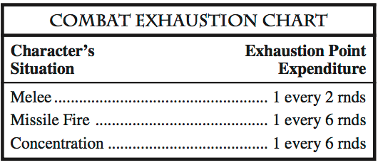
So, he can walk for 3300 rounds (550 minutes) without a rest but he would be totally exhausted thereafter. If he were to fast sprint he could move at a rate of 200' per round; but he would exhaust his 55 ExPs in 8-9 rounds ( 1.5 minute) at that pace.
If Naug (+0 St bonus) were moving in a metal breastplate (AT 17, -10 Qu Penalty) and with a 2x weight allowance load (-16 Encumbrance Penalty), his Base Movement Rate would be reduced to 24' per round and he would have to “Fast Sprint” (and exhaust himself as indicated) to cover 96' per round.
When fighting, a character necessarily expends more energy than he would while walking. Thus, the following expenditures should apply.

The following factors may affect the way a character expends exhaustion points. They provide detail, but may be considered optional. Only one modifier of a given type should be applied (e.g., one temperature mod., one terrain mod., one time without sleep mod.).
This section describes attacks and the process used to resolve them. Attacks occur when a character (the attacker) attempts to affect or harm an opponent (the defender or target). Normally, an attacks falls into one of five categories:
| Melee Attacks | Section 23.4 |
| Missile Attacks | Section 23.5 |
| Basic Spell Attacks | Section 23.6 |
| Directed Spell Attacks | Section 23.7 |
| Area Spell Attacks | Section 23.8 |
An attack is resolved by the attacker making a high open-ended 1d100 attack roll, adding any applicable modifications, and then applying the modified roll to the appropriate attack table. The attack roll for Basic Spell attacks is not open-ended. Attack, critical, and fumble/failure tables can be found in Arms Law and Spell Law. Results are explained in Section 23.1 and include:
Hits delivered
Fumbles and Failures
Critical Strikes
Modifications to Resistance Rolls
The last three results will usually require a second roll on a fumble and failure table (SL Table 6.6 or AL Tables 4.13-4.14), a critical table (SL Tables 6.1-6.5 or AL Tables 4.1- 4.12), or the Resistance Roll Table T-3.4.
When an attack roll before modification falls within an “Unmodified” range for the attack table being used, no modifications are made to the attack roll. This includes “open-ended” modifications (i.e., such a roll is not treated as being “open-ended”—do not roll again).
Unmodified results can only be achieved if the unmodified roll falls within these ranges. Modified rolls falling into these ranges are treated as the next lower (or higher) result. There are three types of unmodified ranges:
Some are marked with a “UM” on the attack table.
Each weapon attack table in Arms Law (Tables 2.1-2.29 has an unmodified “Fumble Range” specified at the top of the table.
Each special attack table in Arms Law (Tables 3.1-3.13) has an unmodified range of 01-02.
Each attack table has a maximum and a minimum result. If a modified attack roll exceeds the maximum result, the roll is treated as the highest non-unmodified result (see above) allowed. If a modified attack roll is less than a minimum result, the roll is treated as the lowest non-ummodified result allowed.
On all of the attack tables, the minimum result is one more than the unmodified fumble/failure result.
On AL Attack Tables 2.1-2.29 the max. result is 150.
On AL Attack Tables 3.1-3.13 the maximum result is determined by the type of attack, the animal’s size (i.e., tiny, small, medium, large, or huge), or by the number of consecutive rounds of attacks.
On SL Attack Tables 5.1-5.3 the maximum result is 95 (i.e., one less than the unmodified results).
On SL Attack Tables 5.4-5.8 the maximum result is 150 (i.e., one less than the unmodified results).
The attacker makes an open-ended attack roll (not open-ended for Basic Spell attacks).
If an unmodified result is obtained, proceed to step 4 (i.e., the roll is not modified by anything).
All applicable modifications are made to the roll.
The modified roll is applied to the appropriate attack table.
The result may require a roll on a second table.
An attack may have several results depending upon the attack roll (modified or unmodified). These results include hits, fumbles, failures, criticals, and Resistance Roll modifications.
If an attack roll results in a “F” result, the attack has fumbled or failed, and a roll must be made on one of the AL Fumble Tables 4.13-4.14 or the SL Spell Failure Table 6.6. Normally, a Fumble roll is not modified, and a failure roll is only modified if a spell casting static maneuver fails (see Section 26.0).
A number result on all of the attack tables (except the SL Basic Spell Attack Table 5.1) indicates the number of hits (concussion hits) delivered to the target. These numbers are not preceded by a plus sign or a minus sign.
Non-failure results from the SL Basic Spell Attack Table 5.1 are numbers which are used as modifications to the target’s Resistance Roll against the spell being cast. These numbers are preceded by a plus sign or a minus sign. A result of this type requires the target make a Resistance Roll to avoid (or decrease) the effects of the spell. Once this modification has been obtained from the attack roll, the target must make a resistance roll and add theattackrollresult,thetarget’sappropriateRRbonus,and any other appropriate modifications (see SL Table 5.10). Then the attacker’s level and the target’s level are cross-indexed to obtain a number from the SL Resistance Roll Table 5.10:
If the target’s modified RR is greater than or equal to this number, he has successfully resisted the spell
Otherwise, the target has failed to resist.
The results of failing to resist vary from spell to spell.
A result with one or two letters indicates that the target has been given one or more critical strikes (i.e., criticals or crits). The first letter (i.e., A, B, C, D, E, F, G, H, or I) indicated the severity of the critical. For 'A' to 'E' severities, the severity determines which column of a critical table is used to resolve the critical. For 'F' to 'I' severities, multiple criticals are delivered as indicated on the attack table used.
A second letter indicates the type of critical (e.g., K=Krush, S=Slash, P=Puncture, U=Unbalance, G=Grapple). The critical type determines what critical table is used to resolve the critical (AL Tables 4.1-4.12, SL Tables 6.1-6.5). If there is no second letter, the critical type is given at the bottom of the attack table.
To determine the result of the critical a second roll (not open-ended) is made and applied to the appropriate column of the appropriate critical table.
Overall Guidelines
All damage (including concussion hits), unless otherwise noted, is only applicable to the target combatant.
Often bleeding, bruises, burns, frostbite, etc. indicated on the critical strike tables are reflected in the form of additional concussion hits. This is meant to show the gradual weakening brought about by shock, bleeding, and pain. This is often referred to as “bleeding.”
Next swing/roll/attack can refer to a missile attack, maneuver, or spell attack, as well as to a melee attack.
If a target takes a critical result that lasts for a certain number of rounds and he has not yet performed at least 50% of his activity for the current round, the current round counts as one of the rounds affected by the result. Otherwise, the effects begin the round after the critical is received.
If an item is indicated as being destroyed by a critical result, it is automatically destroyed unless it is made of an extraordinary material (e.g., Mithril) or it is incredibly magical (i.e., an artifact). In this case, if the GM allows it, the item may make a RR as described in Section 21.1 to avoid destruction.
Some creatures are immune to certain types of criticals (e.g., Fire Demons are immune to fire spells and heat criticals). These creatures are unaffected by such criticals).
Certain unusual creatures are so large and/or powerful that the normal critical strike tables are not used when they receive critical strikes. Unusual creatures are separated into two categories:
Large Creatures (e.g., Trolls, Giants, Demons, and Undead, etc.).
Super-Large Creatures (e.g., Dragons, very powerful Demons, etc.).
All attacks except for basic spell attacks have special critical strike tables (SL Table 6.5 and AL Tables 4.4 and 4.10) that are consulted if a sufficiently severe critical strike is obtained against them. The roll for criticals against Large and Super-Large creatures is high open-ended.
Critical strikes of severity 'A' do not affect large creatures (i.e., 'A' severity criticals are ignored). If a critical with a higher severity than 'A' is obtained, a high open-ended roll is made and cross-indexed with:
For physical attacks, the weapon type (normal, magic, Mithril, holy, or slaying) on the AL Table 4.4.
For spell attacks, the first column of SL Table 6.5.
The result obtained is applied immediately. Note that the severity of the critical strike is irrelevant, except that it must be of 'B' severity or higher. This reflects the fact that such creatures present such a large target that they are much more difficult to hurt seriously.
Critical strikes of severity 'A', 'B', or 'C' do not affect super-large creatures (i.e., 'A', 'B', and 'C' severity criticals are ignored). If a critical with a higher severity than 'C' is obtained, a high open-ended roll is made and cross-indexed with:
For physical attacks, the weapon type (normal, magic, Mithril, holy, or slaying) on the AL Table 4.10.
For spell attacks, the third column of SL Table 6.5.
The result obtained is applied immediately. This table should be consulted of only for creatures such as Dragons, Dinosaurs, and the most powerful Demons.
Some Large and Super-Large creatures are especially vulnerable to certain magical weapons (e.g., a Troll is vulnerable to a weapon of “Troll-slaying”) and certain types of spell criticals (e.g., a metal Golems are vulnerable to electricity criticals, Fire Drakes are vulnerable to cold criticals). If a critical is obtained with such a weapon or spell against a Large or Super-Large creature, the “Slaying” column on the appropriate table is used (SL Table 6.5 or AL Tables 4.4 or 4.10).
If a critical strike is obtained when using a weapon of slaying (or a slaying spell) against a man-sized creature (e.g., an Orc-slaying sword used against an Orc), the normal critical is resolved and then a second critical is resolved on the slaying column of AL Table 4.4 or 4.10 (or SL Table 6.5), using the same roll that was used for the normal critical.
The criticals give very specific damage to targets that receive them. All of the criticals have two different types of information: descriptions and mechanics.
The description information will describe the critical hit (usually including a body location). The GM should feel free to alter the description to more appropriately fit the type of attack.
Example: A target behind a low stone wall is hit by an arrow and receives a critical calling for damage to his ankle. Instead the GM should rule that he is hit in the wrist. Note that he already receives a defensive bonus for being behind the stone wall and was hit in spite of it. Similarly, if a critical strike calling for an unspecified limb to be broken is rolled, the limb affected should be determined randomly.
The mechanics information is the game effects of the critical hit. The GM should rarely alter these results. The presentation of this information will always follow this format:
+ßH – ß☆ – ß⨂ – ß💧 – ß(-α) – ß(+α)where α and ß are numbers. In general:
| H | hits | |
| ☆ | rounds of stun | |
| ⨂ | rounds of no parry | |
| ⚔ | rounds of must parry | |
| 💧 | hits per round | |
| (-α) | penalty | |
| (+α) | bonus |
Sometimes, the second and third items are combined (reading as ☆⨂). Also, sometimes the third item is replaced with ß(⚔-α) (there can never be both a ⨂ and a ⚔ entry). Below is a more detailed explanation of the entries. +ßH — This indicates that the target of the attack takes an additional ß hits of damage (e.g., “+5H”).
ß💧 — This indicates that the target of the attack will take ß hits every round until the wound is healed (e.g., “3💧”). This damage starts the round after the critical is delivered. “Bleeding” represents not only actual blood loss, but also represents ongoing pain. When ß is not specified it is assumed to be one.
ß☆ — This indicates that the target of the attack is stunned for ß rounds (e.g., “5☆”). While stunned, the target may not attack and may only parry with half of his Offensive Bonus (round up). The only other allowable actions are movement and maneuvering (modified by at least -50). When ß is not specified it is assumed to be one.
ß⨂ — This indicates that the target of the attack cannot parry for ß rounds (e.g., “3⚔”). The only allowable actions are movement and maneuvering (modified by at least -75). When ß is not specified it is assumed to be 1.
ß(⚔-α) — This indicates that the target of the attack must parry for ß rounds with a penalty of -α (e.g., “3(⚔-20)”). The only allowable actions are movement and maneuvering (modified by at least -75). When ß is not specified it is assumed to be one. When α is not specified it is assumed to be zero.
ß(-α) — This indicates the target of the attack suffers a penalty of α for ß rounds—i.e., all of the target’s bonuses (except DB and RRs) are lowered by α. When ß is not specified, the penalty is assumed to last until the wound is healed.
ß(+α) — This indicates that the attacker gains a bonus of α for ß rounds—i.e., all of the target’s bonuses (except DB and RRs) are increased by α. When ß is not specified, it is assumed to be one.
During play a combatant may be “stunned” for a number of rounds due to critical strikes (this includes all “Stunned” rounds, all “Stunned No Parry” rounds, and all “Down or Out” rounds). All of these “stuns” due to multiple critical strikes are cumulative. Normally the total number of rounds of “stuns” decreases by one each round, with the most severe type of “stun” taking effect first.
While stunned, the target may not attack and may only parry with half of his Offensive Bonus (round up). The only other allowable actions are movement and maneuvering (modified by -50 plus three times the character’s SD stat bonus).
A combatant will lose consciousness if his total number of accumulated rounds of “stuns” exceeds:
10 + (2 x Costatbonus)
If not unconscious due to some other cause, a combatant will regain consciousness when his total accumulated rounds of “stuns” becomes less than the total above.
In combat, there are many variables which affect the severity of an attack. The defender has several factors which can work in his favor, including: armor, shield, quickness, special items, and the ability to parry (i.e., decrease attack effectiveness in the interest of self-preservation). Armor is the basic classification of protection, while all other defensive capabilities are expressed in terms of a Defensive Bonus (DB) which will modify the attacker’s combat roll in the defender’s favor.
Armor is the basic protective capability assigned to the material covering the body, and is divided into five categories of four Armor Types (ATs) each (for a total of 20 types).
| Armor Category | ATs | Type for Basic Spell Attacks |
| Cloth-Skin | 1-4 | other |
| Soft Leather | 5-8 | leather armor |
| Rigid Leather | 9-12 | leather armor |
| Chain Mail | 13-16 | metal armor |
| Plate | 17-20 | metal armor |
The AT of a target determines the column that is used for any attack that is not a basic spell attack. The column used for a basic spell attack is determined by using the attack spell’s realm, the target’s armor type, the target’s helmet, and/or the target’s shield(if several columns areapplicable use the one most advantageous to the target).
Note: Normally, ATs 3, 4, 11, and 12 are animal and monster ATs and are not available to characters.
Normal cloth attire, robes, and normal animal hides.
Skin (AT 1): Normal clothing, assumed if other covering is not specified.
Robes (AT 2): Full-length robes normally worn by spell users and certain other combatants.
Light Hide (AT 3): The natural hide of common classes of animals (e.g., Deer, Dog, Wolf).
Heavy Hide (AT 4): The natural hide of uncommon classes of animals (e.g., Buffalo, Elephant, Bear).
The heavy outer garments normally worn as weather protection by certain civilians and as combat protection by some militia and irregulars.
Leather Jerkin (AT 5): A leather vest-like covering without arms and reaching only to the waist or mid-thigh.
Leather Coat (AT 6): A leather coat covering the arms and to mid-thigh.
Reinforced Leather Coat (AT 7): A leather coast covering the arms and to mid-thigh, but with either rigid leather sections or metal sections sewn in for reinforcement.
Reinforced Full-Length Leather Coat (AT 8): A reinforced leather coat (as above) that covers to the lower leg.
Rigid leather armor and the rigid hide covering of certain reptiles and of other creatures such as Dragons.
Leather Breastplate (AT 9): A rigid breastplate covering the torso to mid-thigh and part of the upper arms.
Leather Breastplate & Greaves (AT 10): As above, but with leather greaves covering the forearms and lower legs.
Half-Hide Plate (AT 11): Rigid-leather armor that covers the body completely; includes the hide of certain creatures that contain at least a few rigid plates (e.g., Rhinoceros, Alligator).
Full-Hide Plate (AT 12): As half-hide plate (above), except that the rigid leather or plates are harder and/or more plentiful (e.g., Turtles, Dragons, Giant Crabs).
Chain link armor, scale armor, and the hides of certain fantastic creatures.
Chain Shirt (AT 13): A chainmail shirt covering the torso to mid-thigh and half of the upper arms.
Chain Shirt & Greaves (AT 14): As above, but with greaves on the forearms and lower legs.
Full Chain (AT 15): Chainmail covering most of the body and legs in the form of a shirt and leggings.
Chain Hauberk (AT 16): A full-length chain mail coat split from the waist in the front and back to facilitate movement.
Rigid armor of metal plates and the heaviest animal hides.
Metal Breastplate (AT 17): A metal breastplate plus smaller plates covering the torso to mid-thigh and part of the upper arms.
Metal Breastplate & Greaves (AT 18): As above, but with greaves on the forearms and lower legs.
Half Plate (AT 19): Rigid plate armor covering the body, but with chain mail between the plates, at the joints, and covering the legs.
Full Plate (AT 20): Rigid plate armor as half plate above, but with plates overlapping at joints, and plate armor covering the legs.
Especially good armor in terms of material, construction, or enchantment does not change that armor’s basic type, but rather adds a bonus to the wearer’s DB. Conversely, shoddy armor will incur a penalty to the wearer’s DB. It is highly recommended that superior armor bonuses rarely exceed +10 or +15.
Example: Kiltran, a rather successful Ranger, wears a Chain Shirt and Greaves (AT 14) taken from the lifeless body of a follower of the Bearer of the Root. The GM has decided that this armor is of superior construction (being made by a highly revered Dwarven smith) and so awards it a +10 quality bonus. This armor is thus AT 14(10).
Due to its weight and constrictive nature, there are penalties associated with wearing armor while attempting to maneuver, defend, and throw/fire missiles. These penalties are detailed in the Armor Table T-3.3.
Shields are represented in combat by a bonus to the wielder’s Defensive Bonus. In addition, when fighting with one or two weapons, one weapon may be used as a “shield,” but may not be used for an attack in the same round. A shield bonus may only be used against one opponent’s attack(s) per round.
These bonuses and other factors concerning shields and parrying are summarized in the Defensive Capabilities Table T-3.6.
A helmet gives bonuses against certain spells and determines the attack table column used against Mentalism spells. A helmet can also affect certain critical results.
Greaves are a type of armor that covers the arms and legs. They are included in ATs 10, 11, 12, 14, 15, 16, 18, 19, and 20. Greaves can affect certain critical results.
The GM may award a variable bonus to a combatant’s DB if his position is judged to be advantageous. Penalties due to a defender’s disadvantageous position are reflected in modifications to the attacker’s Offensive Bonus (see Section 23.3).
Cover bonuses against missile attacks should be based upon the percentage of the defender’s body protected and the ability of cover to stop incoming fire. Some sample bonus are summarized in the Defensive Capabilities Table T-3.6.
Note: If a combatant is completely protected by cover, and is making no attack himself, the GM may rule that no attack may be made against him.
Example: Kiltran, wondering why he ever joined the Confused Young Lords, finds himself defending behind a low stone wall against Traegon and Yrzan. During combat, Kiltran stands to fire his bow. The wall rises to his waist, protecting him from his foes’ missile fire. The GM awards Kiltran a cover bonus of 60 to his DB (maybe overly generous, but the GM knows that Kiltran is going to need every bit of it).
A defender may wish to place more emphasis on personal defense than is implicit in the combat system. Therefore, a combatant may wish to sacrifice some or all of his Offensive Bonus (OB) with the weapon he is presently using, in order to increase his DB. Such an action is called parrying, though it may be thought of in many combat situations as dodging and/or blocking.
The premise of sacrificing offensive capabilities in order to increase one’s defensive capability is a fundamental component in the RMSS.
A defender may parry a melee attack a combat round by switching any or all of his OB (with the Melee weapon he is using) to DB. All points of OB so switched are converted to enhance DB.
The designation of this “OB/DB split” is done for each combatant during the Action Declaration Phase.
To parry a Melee attack, the defender must be aware that he will be subject a the attack.
He may also have a shield, suitable terrain, or a Melee weapon. Some weapons may only be used to parry with a certain percentage of the wielder’s OB (see the Defensive Capabilities Table T-3.6). Note that he may also parry attacks if making a martial arts-type attack (though he has no weapon except his body).
A combatant may only parry the foe that he attacks.
If a combatant elects to parry with a weapon with his entire OB, he receives the “shield” bonus for his weapon. These bonuses are listed on the Defensive Capabilities Table T-3.6.
Note: Even if a combatant parries with 100% of his OB, he must still make a +0 OB attack—he may still fumble or perhaps roll high open-ended.
As with melee parrying, a defender parrying a missile may reduce his OB, in whole or in part, and shift that bonus to his DB. To parry a missile attack:
The defender must be aware that he will be subject to a missile attack.
He must also have a shield (a weapon won’t do) or suitable terrain with which to parry the missile.
When parrying missile fire, the shift must be declared at the beginning of the Action Declaration Phase and is only applicable against one missile attack.
Parrying a missile attack requires 50% of a character’s normal activity for a round.
Spell attacks may not be parried without the aid of certain specific spells.
Rolemaster combat assumes that characters will use the option of parrying to protect themselves. In a face to face battle, only berserkers, idiots, and desperate characters always use their entire OB in attack. Such characters usually do not last long unless they have something special going for them (e.g., incredible armor, incredible luck, super healing facilities, etc.). In most situations a character will and should use part of his OB to attack with and the rest to increase his DB and thus protect himself. Of course, in certain situations it is often wise for a character to attack with his entire OB. For example, when attacking a foe who cannot attack back; or perhaps when facing multiple opponents.
A combatant’s DB is modified by three times his quickness stat bonus or penalty. If the defender is wearing certain types of cumbersome armor, this tripled Quickness stat bonus may be reduced or eliminated completely by the armor’s Armor Quickness Penalty (but never below zero); see the Armor Table T-3.3. A defender only has three times his Quickness stat bonus factored into his DB if he is aware that he is in a combat situation and is free to move.
Example: Skan, a T‘sbalic warrior, has a temporary Quickness stat of 98 and a Qu stat bonus of 9. Unencumbered by armor, Skan’ s AT is 1 and his DB is 27 (due to his Qu stat bonus) when in a combat situation and free to move. Skan now puts on an metal breastplate which reduces his tripled Quickness stat bonus by 10. Now when she is in combat, barring other modifiers, Lotus is AT 17 with a Defensive Bonus of 17.
Adrenal Defense is a skill which increases a defender’s DB (see Appendix A-1.26). This is a very restrictive DB factor. Normally, the combatant must be aware of his attacker, may not be carrying any heavy items or any weapons (other than those allowed by the martial arts rules), and may not be wearing armor. If a defender is using Adrenal Defense, the full skill bonus may be used against melee attacks, while only half of the normal skill bonus may be used against missile attacks.
There may be special items (usually magic items) in a GM’s campaign which will impart a DB to their possessors. These may range from unique magical artifacts to lucky charms. Their design/strength is subject to the GM’s devising.

The success of an attack will depend heavily on offensive capabilities possessed by the attacker. The offensive factors that can affect an attack roll include: skill bonuses, superior/inferior weapon(s), special equipment, position, status of the defender, and status of the attacker.
A combatant making an attack can add his Offensive Bonus (OB) for that attack to the attack roll. This section describes the factors which contribute to a combatant’s OB.
For a melee attack, missile attack, or directed spell attack, the attacker’s OB is his skill bonus for that attack. This OB consists of a variety of factors including his skill rank bonus, skill category rank bonus, stat bonus, profession bonus, weapon bonus, etc. For a basic spell attack or an area spell attack, the attacker’s OB is his skill rank for the attack spell’s list.
Weapons that are remarkable in material, construction, or workmanship may add a bonus to a combatant’s OB (or a penalty for inferior weapons). It is strongly suggested that bonuses for superior quality weapons rarely exceed +10 or +15.
To determine the weapon bonus for a non-thrown missile attack, average the firing device’s (i.e., bow or sling) bonus with missile’s (i.e., arrow, quarrel, or stone) bonus and round off.
Example: A +10 composite bow firing a +5 arrow would have a weapon bonus of +8 = (10 + 5) ÷ 2. A +20 long bow firing a +0 arrow would have a weapon bonus of +10 = (20 + 0) ÷ 2.
There may be special items (usually magic items) in a GM’s campaign which will impart a OB modification to their possessors. These may range from unique magical artifacts to lucky charms. Their design/strength is subject to the GM’s devising.
At the GM’s discretion, a bonus or penalty may adjust a combatant’s OB if his position and status are determined to be somehow superior or inferior to his opponent’s. See the Offensive Capabilities Table T-3.5.
Unless stated otherwise, position bonuses are cumulative. For example, a surprise rear attack would get a total position bonus of at least +55: +20 for surprise, +20 for rear attack, and +15 for a flank attack. A non-surprise rear attack would get a total position bonus of +35.
As discussed in Section 23.2.6, a combatant’s OB is lowered for a specific attack by the amount he uses to parry.
There is a modification to an attacker’s OB for a missile or spell attack based upon the distance from the attacker to the target. These modifications range from +30 to -75 and are provided on the individual Attack Tables in Arms Law and Spell Law.
The ranges given on each of the attack tables are the maximum ranges for which each of the given OB modifications apply. For example on the AL Composite Bow Attack Table 2.5, attacks made at a range of 0'-10' are modified by +25, attacks at a range of 11'-100' receive no modification, attacks at 101'-200' are modified by -35, attacks at 201'-300' are modified by -60, and attacks over 300' are not allowed.
Any melee attack action normally requires 100% of a round’s activity; however, such an action can take as little as 60% of the round’s activity. A melee attack receives a penalty equal to 100 minus the percentage of activity actually used to make the attack.
OB Penalty = (% activity used for attack) - 100Any missile attack action normally requires 60% of a round’s activity; however, such an action can take as little as 30% of the round’s activity. A missile attack receives a penalty equal to 60 minus the percentage of activity actually used to make the attack.
OB Penalty = (% activity used for attack) - 60Note that both of these modifications are penalties (i.e., neither can be positive regardless of how much activity is used).
Example: Dral starts a round with an unloaded composite bow. He declares a reload normal action (60% activity) and a missile attack deliberate action (at 40% activity). In addition to other modifications, his missile attack OB is modified by +10 as a deliberate action and by -20 (60 - 40) due to using less than 60% activity for the missile attack.

Melee attacks are resolved on the Arms Law Attack Tables 2.1-2.29, 3.1-3.13. Melee attack fumbles are resolved on AL Tables 4.13-4.14.
A combatant’s melee capabilities in combat often depend upon what weapons he uses. The normal weapon combinations are: no melee weapon, one-handed weapon, a one-handed weapon with a shield, a two-handed weapon, and two one-handed weapons.
One-Handed Weapons — A combatant armed with a single one-handed weapon may attack once per round and may parry normally.
When a combatant develops skill with a weapon, he must develop the skill with his dominant hand (usually his right hand) and skill with the non-dominant hand separately. A weapon used in the non-dominant hand automatically gets a -20 modification to its OB.
One-handed Weapons with a Shield — A combatant armed with a one-handed weapon and a shield may attack normally once per round and may parry normally. Such a combatant may use his shield bonus for his DB against one foe and then use his parry bonus against the foe he attacks. Alternatively, he may use both bonuses against the same foe.
Two-Handed Weapons — For human-sized creatures, these types of weapons require both hands to wield (i.e., they can not be used with a shield). A combatant using a two-handed weapon may only use up to 50% of his OB to parry an opponent using a one-handed weapon.
Two One-handed Weapons — A combatant may use a one-handed weapon in each of his hands. His OBs with the two weapons are affected by his Two-weapon Combat skill for that pair of weapons (see Appendix A-1.11). The following guidelines apply to using two weapons:
The combatant may attack with both weapons in the same round; he may attack with only one and use the other for its “shield” bonus versus melee (see the Defensive Capabilities Table T-3.6).
If a combatant uses part of his OBs for parrying, he must decrease both his weapon OBs by that amount.
See Appendix A-1.11 for more details.
No Melee Weapon — Sometimes a character will find himself in combat without a weapon. If it is a general melee situation (i.e., combatants are using weapons designed kill each other), such a character may make “Martial Arts” attacks (e.g., degree 1-4 strikes, degree 1-4 sweeps, boxing, wrestling, tackling, etc.), see Appendix A-1.17. He may not use Brawling attacks in such a situation.
If such a combatant has a substantial object in his hands capable of blocking a weapon blow (e.g., a stool, a mattress, a log, a body), he may be given a shield bonus for the item. In such a case, a GM may even allow the combatant to make a “club” attack.
In a similar manner, a combatant may “parry” with suitable terrain features (e.g., dodge around a tree, duck under a large branch, step behind a door). As always, the GM is the final judge as to the appropriateness of such “parrying” situations.
In a brawl (i.e., a general fracas, the combatants are not using killing weapons; e.g., a barroom brawl), an un-armed character can make Brawling attacks or Martial Arts attacks.
Second Line Pole Arm Attacks — Combatants behind friendly combatants (i.e., in the second line) should be allowed to strike past the friendly combatants (i.e., the front line) if they are using pole arms. This serves to simulate the effectiveness of organized groups of fighters with pole arms. The GM should determine whether the front line combatants and second line combatants are adequately trained for this type of combat.
When a melee attack is declared, the attacker must also declare the amount of his OB he will use to parry; remember, he can only parry the foe he is attacking. If the attacker is using a shield, he may apply the shield DB bonus against one opponent in front of him or to his shield side.
When a melee attack is declared during the Action Declaration Phase, it must be one of the following types of actions:
Full melee attack — The attacker’s OB receives a +10 modification, but the target of the attack must be declared during the Action Declaration Phase. Any movement must be declared as a separate action.
Press & melee attack — The target of the attack must be declared during the Action Declaration Phase and the target must be adjacent at that time. If the target attempts to move away before the attack is resolved, the attacker may attempt to move after him. Such movement only results in half the normal OB modification for less than 100% activity used to attack.
Example: Dral starts a round next to an Orc that appears to be ready to flee. Dral declares a normal action of “press & melee attack” against the Orc, while the Orc declares a snap action of “disengage from melee” (25% activity) and a normal action of “run away.” Dral’ s initiative roll is better than the Orc’ s.
The Orc disengages and moves 10' away from Dral during the Snap Action Phase, then Dral runs after him during the Normal Action Phase and may make a melee attack. Since Dral’s running movement rate is 100' and he only has to cover 10', Dral uses 10% of his activity to reach the Orc. However, since the action was “press & melee attack,” the OB mod is only -5.
React & melee attack — The attacker’s OB receives a -10 modification, but the target of the attack need not be declared during the Action Declaration Phase. As an action in any of the last three phases (snap, normal, or deliberate), the attacker can attempt to move to and attack anyone within 50'. If he has not done so by the end of the round, he may move up to 50% of his normal movement. Apply the normal OB modifications for less than 100% activity used to attack.
Example: At the beginning of a round, Dral is standing over the body of an Orc he just defeated is a large confused melee. Dral is not sure who to attack next, so he declares a “react & melee attack” with 100% of his activity. During the Normal Action Phase, another Orc moves to attack Dral’s buddy, Varak (who is 30' away). At the beginning of the Deliberate Action Phase, Dral declares his action to move and attack. Since Dral’s running movement rate is 100' and he has to cover 30', Dral uses 30% of his activity to reach the Orc. So his attack on the Orc is modified by -30 plus 10 because it is the Deliberate Action Phase.
The sum of all bonuses and penalties which affect the defender’s susceptibility to being hit and damaged in melee and missile combat is called the Defensive Bonus (see Section 8.5). It is the number that is subtracted from the attacker’s combat roll. The Defensive Capabilities Table T-3.6 summarizes the primary factors which affect a defender’s DB.
Defensive Bonus for Melee = + Armor Quality Bonus
+ (3 x Quickness Stat Bonus - Armor Quickness Penalty) [minimum of 0]
+ Adrenal Defense Skill Bonus
+ Position and Cover Bonuses
+ Special Item Bonuses
+ Shield Bonus
+ Parrying Bonus
The Offensive Bonus is added to the attacker’s combat roll during the resolution of a given attack. The Offensive Capabilities Table T-3.5 summarizes the primary factors which affect an attacker’s OB.
Offensive Bonus for Melee = + Skill BonusMissile attacks are resolved on Arms Law Attack Tables 2.1-2.29, and fumbles are resolved on AL Table 4.13.
The percentage activity requirements for reloading (see Section 20.0) assume the bow (or sling) is strung and arrows/quarrels (or pellets) are available in quiver (or pouch). If a bow has to be strung, the following percentage activities are added to the required preparation % activity:
| Short Bow | +200% |
| Composite Bow | +300% |
| Long Bow | +300% |
A combatant making a missile attack receives a penalty to his OB if he is wearing armor that covers his arms. This includes armor types 6, 7, 8, 10, 11, 12, 14, 15, 16, 18, 19, and 20. The specific penalties are summarized on the Armor Table T-3.4.
| ATs | Missile Attack Penalty |
| 6 | -5 |
| 10, 14, 18 | -10 |
| 7, 8 | -15 |
| 11, 15, 16 | -20 |
| 12, 19 | -30 |
| 20 | -40 |
If a stationary combatant may throw a weapon using 80% of his normal OB and still melee in the same round with only a -20 modification to his melee OB. This action requires 100% activity for the round. Such a combatant may only use a one-handed weapon or a one-handed weapon and a shield on the round that he throws the weapon. (He is assumed to be holding his melee weapon in his non-throwing hand.)
The sum of all bonuses and penalties which affect the defender’s susceptibility to being hit and damaged in melee and missile combat is called the Defensive Bonus (see Section 8.5). It is the number that is subtracted from the attacker’s combat roll. The Defensive Capabilities Table T-3.6 summarizes the primary factors which affect a defender’s DB.
Defensive Bonus for Missiles = + Armor Quality Bonus
+ (3 x Quickness Stat Bonus - Armor Quickness Penalty) [minimum of 0]
+ Half of Adrenal Defense Skill Bonus + Position and Cover Bonuses
+ Special Item Bonuses
+ Shield Bonus
+ Parrying Bonus
The Offensive Bonus is added to the attacker’s combat roll during the resolution of a given attack. The Offensive Capabilities Table T-3.5 summarizes the primary factors which affect an attacker’s OB.
Offensive Bonus for Missiles = + Skill Bonus
+ Special Item Bonuses
+ Position Bonuses
± Status Bonuses/Penalties
- Parrying Bonus
± Range Modifications (on attack table)
- Missile Attack Penalty (Armor Table T-3.4)
- 1 per 1% activity under 60% not used for the attack
Basic spell attacks are resolved on the SL Basic Spell Attack Table 5.1. All spell failures are resolved on the SL Spell Failure Table 6.6.
Basic attack spells include all spells which are not non-attack spells (how surprising) and which are not “elemental attack spells” (i.e., directed spells and area attack spells). Usually a basic attack spell is directed at a target that is a creature (or an unusual object) that gets to attempt to resist the effects of the spell.
The non-failure results of a basic spell attacks are modifications to the target’s Resistance Roll (see Section 21.1). If the target fails its RR, it is affected by the spell.
Each spell has a range given in its spell description. The distance between a character making a spell attack and the target of the attack must be less than or equal to the range of the spell.
The column of the SL Basic Attack Table 5.1 used for a basic spell attack is determined by using the attack spell’s realm, the target’s armor type, the target’s helmet, and/or the target’s shield (if several columns are applicable use the one most advantageous to the target).
Example: A Channeling basic attack spell against a target in metal armor with a metal shield would use the “Channeling/Metal Armor” column, because it is most advantageous to the target.
A Mystic is a Hybrid spell user of Essence/Mentalism. If a Mystic casts a basic attack spell from one of his base lists, it is treated as a Essence/Mentalism spell. So, such a spell against a target in metal armor and a metal helm would use the “Mentalism/Metal Helmet” column of the SL Basic Spell Attack Table 5.1, because it is most advantageous to the target.
The sum of all bonuses and penalties which affect the defender’s susceptibility to an attacker’s basic spell attack roll is called the Defensive Bonus (see Section 8.5). It is the number that is subtracted from the attacker’s basic spell attack roll. The Defensive Capabilities Table T-3.6 summarizes the primary factors which affect a defender’s DB.
Defensive Bonus for Basic Spell Attacks = + Special Item BonusesThe Offensive Bonus is added to the attacker’s basic spell attack roll during the resolution of a given attack. It is the number that is added to the attacker’s basic spell attack roll. The Offensive Capabilities Table T-3.5 summarizes the primary factors which affect an attacker’s OB.
Offensive Bonus for Basic Spell Attacks = + Skill Rank
+ Special Item Bonuses
± Status Bonuses/Penalties
± Range Modifications (on attack table)
Directed spell attacks are resolved on the SL Attack Tables 5.4-5.8. All spell failures are resolved on the SL Spell Failure Table 6.6.
A directed attack spell concentrates one of the raw forms of Essence (e.g., earth, water, air, heat, cold or light) into a directed physical attack (i.e., a bolt) on the target. Since such a spell concentrates elemental force to attack its target physically, the target is not entitled to a Resistance Roll. Each spell of this type has a separate attack table differentiating its varying effects based upon the target’s Armor Type and mobility.
Each spell has a range given in its spell description. The distance between a character making a spell attack and the target of the attack must be less than or equal to the range of the spell.
The sum of all bonuses and penalties which affect the defender’s susceptibility to being hit and damaged by a directed spell attack is called the Defensive Bonus (see Section 8.5). It is the number that is subtracted from the attacker’s directed spell attack roll. The Defensive Capabilities Table T-3.6 summarizes the primary factors which affect a defender’s DB.
Defensive Bonus for Directed Spell Attacks = + Armor Quality BonusThe Offensive Bonus is added to the attacker’s directed spell attack roll during the resolution of a given attack. It is the number that is added to the attacker’s directed spell attack roll. The Offensive Capabilities Table T-3.5 summarizes the primary factors which affect an attacker’s OB.
Offensive Bonus for Directed Spell Attacks = + Skill BonusArea spell attacks are resolved on the SL Attack Tables 5.2-5.3. All spell failures are resolved on the SL Spell Failure Table 6.6.
An area attack spell concentrates one of the raw forms of Essence (e.g., earth, water, air, heat, cold or light) into physical attack on a target area (i.e., a ball or sphere). Such a spell usually attacks all targets within its radius. Since such a spell concentrates elemental force to attack its targets physically, the targets are not entitled to Resistance Rolls. Each spell of this type has a separate attack table differentiating its varying effects based upon the target’s Armor Type and mobility.
Each spell has a range given in its spell description. The distance between a character making a spell attack and the target of the attack must be less than or equal to the range of the spell.
If the caster of an area attack spell chooses its center point to coincide with a target, the OB against that target is automatically modified by an additional +20.
The sum of all bonuses and penalties which affect the defender’s susceptibility to being hit and damaged by an area spell attack is called the Defensive Bonus (see Section 8.5). It is the number that is subtracted from the attacker’s area spell attack roll. The Defensive Capabilities Table T-3.6 summarizes the factors which affect a defender’s DB.
Defensive Bonus for Directed Spell Attacks = + Half of Armor Quality Bonus
± Bonus for Helmet
+ (3 x Quickness Stat Bonus - Armor Quickness Penalty) [minimum of 0]
+ Position and Cover Bonuses
+ Special Item Bonuses
The Offensive Bonus is added to the attacker’s area spell attack roll during the resolution of a given attack. It is the number that is added to the attacker’s area spell attack roll. The Offensive Capabilities Table T-3.5 summarizes the primary factors which affect an attacker’s OB.
Offensive Bonus for Directed Spell Attacks = + Skill Rank
+ Special Item Bonuses
± Status Bonuses/Penalties
± Range Modifications (on attack table)
+ 20 for target at the center point of the spell
Static Maneuvers include tracking, hiding, picking locks, disarming traps, reading runes, using items, perception, influencing other characters, and any other complex or unusual activity not involving significant movement.
If a character chooses a Static Maneuver as his action for a round, the Gamemaster should assign it a difficulty (ranging from “Routine” being the least difficult to “Absurd” being the most difficult):
| Routine | +30 | Very Hard | -20 |
| Easy | +20 | Extremely Hard | -30 |
| Light | +10 | Sheer Folly | -50 |
| Medium | +0 | Absurd | -70 |
| Hard | -10 |
Each difficulty indicates a modification to the static maneuver roll. The Gamemaster may also assign an additional modification to the maneuver roll (e.g., an attempt to hide in a completely empty, small, brightly lit room might be given a difficulty of “absurd -10”).
Note: It is important to remember that certain maneuvers may be deemed impossible by the GM. The player should be advised that such a maneuver is doomed to failure.
Unless stated otherwise by the GM or by the description of the skill used (see Appendix A-1), a static maneuver takes one round of 100% activity. Normally, this may be reduced up to 50% by taking a -1 penalty for every 1% reduced.
The Gamemaster may require more than one round for maneuvers which he decides are very difficult or complex—see Section 18.2.5 for a discussion of multi-round actions. He may also allow a character to decrease the difficulty of appropriate maneuvers by using multiple rounds.
After the difficulty is assigned, the character may then decide not to attempt the maneuver (i.e., he reconsiders and decides not to do it). In this case, he cancels his action and may perform some other limited action as described in Section 18.2.3.
If the character decides to proceed with the maneuver, he makes an open-ended roll and adds his appropriate skill bonus along with any other applicable modifications. These modifications include:
If a skill applies to the maneuver, add the skill bonus from the character’s character record.
If there is no specific skill that applies to the maneuver, the GM may decide that a stat bonus will modify the maneuver.
Standard modifications from the Standard Static Maneuvers Modifications Table T-4.4.
Special GM assigned modifications (see Appendix A-1 for suggested modifications for certain skills).
After modifications are made, the resulting total is cross-indexed with the appropriate Static Maneuver Table (T-4.8.1 to T-4.8.28) to obtain the maneuver result. A key for the results is provided in Appendix A-1. There is usually a static maneuver table associated with each skill or skill category; if not, use the General Static Maneuver Table T-4.8.1 or T-4.3.
Note: Some results give the maneuverer special bonuses to later maneuvers—these special modifications are not cumulative (i.e., only one such modification can be active at a time).
When a static maneuver roll before modification is a ‘66’, no modifications are made to the roll. The ‘66’ result from the appropriate Static Maneuver Table is applied immediately. When a static maneuver roll before modification is a ‘100’, the roll is not treated as being “open-ended” (i.e., do not roll again). In addition, no modifications are made to the roll—the ‘100’ result from the appropriate Static Maneuver Table is applied immediately.
The Gamemaster assigns a difficulty to the maneuver.
The character decides whether or not to perform the maneuver.
If he decides to perform the maneuver, an open-ended roll (not open-ended for ‘100’) is made.
If the roll is ‘66’ or ‘100’, proceed to step 5. Otherwise, all applicable modifications are made to the roll.
The total is applied to the appropriate Static Maneuver Table (T-4.8.1 to T-4.8.28). A key for the results is provided in Appendix A-1.
Example: Nandar makes a static maneuver to examine a box he has acquired. The GM rules that this is a Light difficulty, so Nandar decides to go ahead.
He rolls a 54 and adds +10 (for a Light static maneuver) and +20 (his Observation skill bonus). This modified roll of 84 is applied to the Awareness • Searching Static Maneuver Table 4.8.8 This is a "Partial Success,” so he may not make another static maneuver to examine the box for at least a minute. The GM tells Nandar that the box is wooden with silver inlays, and that it has some sort of trap. If Nandar had a modified roll of 111 or more he would have found out more information like the type of wood, the type of trap, the value of the box, etc.
Nandar decides not to wait an hour, and tells the GM that he will make a static maneuver to try and disarm the trap, and that he will be very careful and take her time doing it. He has a +10 Disarm Trap skill bonus and the GM assigns a difficulty of medium if he takes at least 2 minutes (12 rounds) on the maneuver. He decides to try and rolls a 37, which is modified to a 47. Referring to the Subterfuge • Mechanics Static Maneuver Table T-4.8.24, he gets a result of “Failure,” so he may not try again for 24 hrs and there is a 20% chance that the trap goes off.


Moving Maneuvers include climbing, swimming, riding, stalking, and any complex or unusual movement (e.g., acrobatics, dodging, tumbling, diving, etc.). Such a maneuver must be within the physical capabilities of the character performing the maneuver. Normally, a moving maneuver is limited to covering a distance no more than half of the character’s normal (not running) movement.
If a character decides to make a Moving Maneuver as his action for a turn, the Gamemaster should assign it a difficulty (ranging from “Routine” being the least difficult to “Absurd” being the most difficult):
| Routine | Medium | Extremely Hard |
| Easy | Hard | Sheer Folly |
| Light | Very Hard | Absurd |
The GM may also assign an additional modification to the maneuver roll (e.g., an unassisted running leap across a 40' chasm for a human might be given a difficulty of “absurd -10,” since the world record is only around 28'). Assigning difficulty requires a familiarity with the Moving Maneuver Table T-4.1 and a subjective decision by the GM (practice and experience will help). Appendix A-1 provides suggested difficulties for activities associated with various skills.
Note: It is important to remember that certain maneuvers may be deemed impossible by the GM. The player should be advised that such a maneuver is doomed to failure.
Example: Here are a few sample maneuver difficulties:
Climbing a ladder Routine Climbing a tree with lots of low limbs Easy Climbing a tree with some low limbs Light Climbing the rough, brick wall of a cottage Medium Climbing a tree with limbs lower than 20' Hard Climbing a rough, stone wall in the rain Very Hard Climbing the smooth wall of a fortress Sheer Folly Hiding behind a large barrel in a dark cellar Routine Hiding behind a bush on a pitch-black night Light Hiding behind a bush on a moonlit night Hard Hiding behind a bush in broad daylight Extremely Hard Leaping a ditch (no armor) 4'–Easy;
8'–Medium;
13'–Hard;
18'–Very Hard;
28'–Sheer FollyJumping a fence (no armor) 4'–Light;
5'–Medium;
5.5'–Hard;
6'–Very Hard;
8'–Sheer Folly
After the difficulty is assigned, the character may then decide not to attempt the maneuver (i.e., he reconsiders and decides not to do it). In this case, he cancels his action and may perform some other limited action as described in Section 18.2.3.
If the character decides to proceed with the maneuver, he makes an open-ended roll and adds his appropriate bonus along with any other applicable modifications. These modifications include:
If a skill applies to the maneuver, add the skill bonus from the character’s character record.
If no skill applies to the maneuver, add three times the character’s Ag stat bonus.
If armor is being worn, add the character’s Moving Maneuver Penalty (see Section 8.6).
Add the lesser of: 0 or the character’s Encumbrance Penalty (see Section 22.2) modified by three times his St stat bonus.
Standard modifications from the Standard Moving Maneuvers Modifications Table T-4.2.
Special GM assigned modifications (see Appendix A-1 for suggested modifications for certain skill).
After modifications are made, the resulting total is cross-indexed with the difficulty on the Moving Maneuver Table T-4.1 to obtain the maneuver result.

A non-number result indicates that the maneuver has failed, apply the results to the maneuvering character as indicated. A number result is interpreted using one of the following methods:
The percentage of the attempted moving maneuver that is accomplished (e.g., a “70” result means that 70% of the maneuver was performed). A result over 100 indicates that the maneuver was accomplished and that the distance covered by the maneuver may be increased by (# - 100) %.
The chance of complete success (e.g., a “70” result means that there is a 70% chance that the maneuver has been accomplished).
If the result is 100 or greater, the maneuver succeeds. Otherwise, during the next round, activity is reduced by: (100 - #). For example, a “70” result means that the maneuver has been accomplished, but the character has -30 penalty to activity next round.
If the moving maneuver used a specific skill, check the skill’ s description to determine which interpretation method is used. Otherwise, the GM must decide based upon the situation.
Example: Naug is being chased by a large Wolf and wants to climb a 12 foot, rough, brick wall. The normal rate of climbing is ten feet per round. The GM assigns a difficulty of Medium and decides to use method (1) above. Naug rolls and gets a result of “50” from the Moving Maneuver Table T-4.1. Thus, Naug climbs 5 feet during the first round.
Naug glances back and sees the Wolf charging hard. He knows the Wolf might be able to leap up and grab him if he doesn’t get up on the wall, so he decides to make an all-out attempt to get up this round. The GM decides the difficulty is still Medium, but that method (2) above will be used (i.e., all or nothing). Naug rolls and gets a result of “60” from Table T-4.1. Thus, he has a 60% chance of making it to the top of the wall and a 40% chance of failing the maneuver and falling. Making another roll, Naug gets a 37 and gets up.
The next round Naug decides to slip over the other side of the wall and drop to the ground. The GM assigns a difficulty of Light. Naug will automatically drop all the way ground in one round—the maneuver is to determine how hard his landing is. So, the GM decides to used method (3). Naug gets a result of “90” on Table T-4.1. Thus, he drops to the ground, but suffers a -10 penalty to his activity next round.
The GM assigns a difficulty to the maneuver.
The character decides whether or not to perform the maneuver.
If he decides to perform the maneuver, an open-ended roll is made.
All applicable modifications are made to the roll.
A result is obtained by applying the modified roll to the Moving Maneuver Table T-4.1.
Example: Chinta decides to try and turn over a large chest and get under it before an Orc can attack her. Considering the situation (she has her back to the Orc), the GM rates the maneuver as “Very Hard,” but Chinta decides to try anyway. The GM decides to use interpretation method (1) for results from the Moving Maneuver Table T-4.1.
Chinta rolls an 03, so, she must roll again and subtract the second roll from the first (i.e., it is an open-ended roll)—her second roll is a 62, resulting in a unmodified roll of -59. There is no specific skill/ ability that applies to “getting into a chest,” so she uses triple her Ag stat bonus: +21. Thus, the total maneuver roll is -38—not too swift. This gives a result of “Fall. Sprain ankle and tear ligament. You are at 30. +15 hits.” from the Moving Maneuver Table T-4.1.
If Chinta had rolled a 72 on her maneuver roll, she would have a total maneuver roll of 93 (72 + 21), for a result of “50.” Thus she would have been 50% of the way through her maneuver when the Orc could attack. In this case, the GM might rule that the chest acts like a shield, giving Chinta a +25 modification to her Defensive Bonus.
In order to cast a spell, the character’s skill rank for the spell list that the spell is on must be greater than or equal to the spell’s level. In addition, the character must have enough Power Points to cast the spell (see Sections 8.1-8.2 and Appendix A-2).
If a spell is cast automatically, no static maneuver is required. However, such a spell may still fail:
All attack spells fail on an unmodified attack roll of 01-02 (see Sections 23.6-23.8). A 1d100 roll should also be made for each non-attack spells, the spell fails only on an unmodified 01-02.
Attack spells can also fail on certain modified attack roll results (see Sections 23.6-23.8).
A spell may automatically be cast if the following restrictions are met:
The spell is not of higher level than the caster.
The spell is from the caster’s realm(s) and it is not from another profession’s base spell lists.
The spell is not cast as a snap action or if the spell is an instantaneous spell cast as a snap action.
The caster has not used more than 25% of his overall Power Points.
If the spell is not instantaneous, the spell is prepared for at least a certain number of rounds:
For Essence spells:
For Channeling spells:
For Mentalism spells: the caster is not wearing a helmet.

If any of the restrictions above are not met for a given spell, the caster can not automatically cast the spell. Instead, he must make a static maneuver roll in order to be able to cast the spell. If this maneuver is successful, the spell may be cast with the same normal failure chances outlined above.
This open-ended static maneuver roll is modified by +50, the caster’s skill bonus for the spell’s list, and all other appropriate modifications from the Spell Casting Modifications Table T-4.6.
Note: This static maneuver is part of the spell casting action and is not a separate action.

The following sections discuss the various elements of a fantasy role playing game and present some of the problems and situations that may arise during play. Gamemaster Law provides more detailed guidelines of these topics and a wealth of information on related topics.
In order to run a fantasy role playing game, a Gamemaster must develop and outline all of the basic components of a “World System.” These components are similar to the components of a novel or play:
A setting must be developed in which action may take place.
The characters who inhabit the setting must be sketched out.
A general plot or scenario must be outlined.
Decisions must be made concerning how to handle certain elements of role playing (e.g., adventures, magic, religion, healing, poisons, etc.).
Developing the components mentioned above requires a lot of work and effort on the part of the Gamemaster. This task can be made easier by using a world system from literature, film, or television. In this part of Rolemaster we will use Middle-earth as an example world system because it is a widely available literary world and ICE publishes a wide range of FRP products supporting its world system.
Example: For a Middle-earth world system, the Gamemaster should first and foremost read and absorb J.R.R Tolkien’s works, primarily The Hobbit and The Lord of the Rings. These novels provide a rich, descriptive outline of an exciting setting—all of Arda, and Middle-earth in particular. They introduce an enormous variety of types of characters and creatures—Elves, Hobbits, Dúnedain, Wizards, Ents, Nazgûl, Orcs, Trolls, Dragons, Balrogs, etc. And of course the novels are intertwined with a plot of truly epic proportions (the struggle of the Free Peoples against the Dark Lord, Sauron of Mordor, and his minions).
There exist a number of commercial products which provide part or all of each of these components. Adventure and campaign modules and sourcebooks provide settings, characters, and scenarios. A GM should keep in mind that all such play aids are merely guidelines for his own creativity and imagination. These modules and rules are meant to be modified and adapted to fit the GM’s concept of what he wants his “world system” to be like.
Iron Crown Enterprises’ (ICE) Middle-earth Campaign Guide provides a wealth of general information on Middle-earth. It describes the principle inhabitants, languages, cultures, topography, climate, trade routes, population centers, and a variety of other factors concerning Middle-earth. It also provides a 24"x36" full color poster map of the entire continent of Middle-earth, including the wild lands north, south, and east of the Western Middle-earth detailed by J.R.R Tolkien.
There are several other general information Middle-earth products. The Northwestern Middle-earth Gazetteer provides GMs and players with critical facts for role playing campaigns. The Northwestern Middle-earth Map Set is a collection of incredibly detailed maps of Middle-earth.
ICE’s Middle-earth Realm sourcebooks provide even more detail concerning specific regions of Middle-earth. Each of these sourcebooks provides a view of a particular portion of Tolkien’s Middle-earth and is concerned with the necessary elements of setting, culture, characters, and plot which specifically apply to fantasy role playing. They include detailed maps of the region covered by the module, descriptions of the cultures and specific major adventure locations in the area, as well as other material which makes a Gamemaster’s job easier and more productive.
ICE’s Middle-earth Peoples sourcebooks provide a wealth of information on the inhabitants of Middle-earth. Each such sourcebook is focused on a different group, including Valar & Maiar, Elves, Dwarves, etc.
ICE has published a wealth of other Rolemaster compatible FRP products that cover a variety of other world systems and genres. See Section 1.3.2 for a more detailed description of these products.
The setting for a game can vary according to the amount of time, effort, or money a Gamemaster is willing to spend. Playing aids such as maps, layouts of buildings and towns, descriptions of various hazards, and provisions for treasure are all necessary ingredients for a setting that is realistic and playable.
For the purpose of bringing Gamemasters gradually into fantasy role playing, this section simplifies the process of constructing and designing a setting for a game. The three basic types of settings defined in this section are: civilized areas, the countryside, and adventure sites. Each type of setting satisfies a different need in a fantasy role playing game. The three taken together provide a framework that will handle most situations that arise in a game.
Civilized areas in a fantasy role playing game provide a place for player characters (and other characters) to buy and sell things, to get food and lodging, to get information on potential adventures, to heal and recuperate, etc. In other words, a civilized area is a place that serves as a base of operations for a group of adventurers. These areas also have potential for adventures such as detective work, romantic involvements, attacks by thieves or muggers, con jobs, tavern brawls, attempted poisonings, involvement in politics, etc. Suggestions for various activities of this type and guidelines on how to run them are presented in Section 30.1.
A civilized area can be as simple as an isolated inn or castle, or as complex as a huge city with intricate internal politics and adventures. In general, a civilized area setting can be described by providing:
Maps and layouts.
A description of inhabitants and visitors.
A price list of available services, supplies and equipment.
Some sort of outline of available information & clues.
An outline of available healing and recuperation facilities.
An outline of possible hazards and adventures.
A basic description of the area’s current events and mood.
The countryside in a fantasy role playing game includes all of the areas of the world which are not adventure sites or civilized areas. The countryside is the setting in which characters can travel, camp, explore, scout, hide, and evade pursuing forces. Characters can also encounter creatures and other characters in the countryside, resulting in ambushes, fights, meeting, sightings, etc. These activities and how to resolve them are detailed in Sections 30.2-30.3. Basically, the countryside is the general setting in which the civilized areas and adventure sites are placed.
The countryside that a Gamemaster uses can be represented by a simple pencil sketch of a small area with the primary terrain features, the locations of the civilized areas, and the locations of the adventure sites all marked. Alternatively, the countryside can include all of the GM’s world in a very general form, along with very detailed maps and descriptions of the specific region in which the game is taking place. In general, an adequate countryside can be described by providing:
A sketch map of the overall world.
Detailed maps of the specific area in which the adventures occur.
The location of civilized areas and adventure sites.
Sketches of typical terrain that might be encountered.
A description of normal creatures and inhabitants.
A description of characters and creatures who might pass through.
A list of possible encounters and hazards (including weather).
Adventure sites are specific places which provide opportunities for characters to sneak around, explore, fight, loot, and all of the other things that contribute to the central objective of fantasy role playing—adventure. Section 30.4 describes some suggested types of adventures. Adventure sites usually have several common attributes:
A physical layout (a castle, a ruin, a cave complex, a temple, etc.)
Some sort of danger (guards, hostile inhabitants, traps, etc.)
Some sort of objective or goal (treasure, rescuing captives, wiping out evil creatures, etc.)
These features are described in the following sections. Activities in adventure sites are resolved as actions in a tactical environment (see Part IV).
The range of the complexity of an adventure site can range from a simple cave to a ruined castle, to the complexity of ruined cities and hollowed out mountains. In general, an adventure site can be described by providing:
Why the place was designed and built originally.
What (if anything) has happened to make the place an adventure site.
What the place currently is used for.
Who or what lives there, or visits frequently.
The layout and its immediate surrounding area.
The hazards (traps, guards and inhabitants).
Any treasure or goals.
To run characters in an adventure site the Gamemaster must have atleast a sketch of the site’s physical layout. This can be a simple sketch of the rooms, door, walls, corridors, towers, etc. and their relationship to one another.
In order for an adventure site to provide exciting action, there must be hazards. This may take the form of guards, traps, and hostile inhabitants like Men, Orcs, Trolls, and other creatures. The hazards may include natural obstacles like sheer walls, chasms, collapsing walls, etc. Their location should be marked on the adventure site’s physical layouts.
Characters have to have some reason to visit an adventure site. This can take the form of a mission—rescuing a prisoner, scouting out the adventure site, assassinating someone, stealing something, and a variety of other things limited only by the imagination. Many times it may just be a desire to fight, loot, and pillage—the key word being loot.
Many types of treasure can be found in an adventure site: money, gems, weapons, armor, magic items, spells on scrolls, spells in potions, and clues to other objectives (maps, books, inscriptions, etc.). Treasure should not be restricted to these things; magic items and spells are only limited by the imagination. Very powerful items are called artifacts and usually have a detailed history, purpose and alignment (i.e., good or evil). Magic items are discussed in more detail in Section 32.1. A Gamemaster must be careful when he sets up the treasure at an adventure site. Too much money or too powerful items can unbalance a game, while players may lose interest in a game with too little money or items.
Gamemaster Law and later Rolemaster sourcebooks will provide more information and guidelines on treasure.
A fantasy role playing game not only needs a setting (Section 27.0), it also needs characters and creatures to inhabit those settings. The player characters provide the adventurers for a game, but it is up to the Gamemaster (or his choice of playing aids) to provide the rest of his world’s population: the non-player characters (NPCs) and creatures.
The extent to which these NPCs are developed and interact with the players is a factor that often determines much of the flavor and color in a fantasy role playing game. A variety of NPCs can often inject action and uniqueness into a game. However, it is often a difficult chore to determine the capabilities and skills of a large number of NPCs.
Of course, the Gamemaster does not need to develop the entire population of his world. He need only sketch out the non-player characters that are required for interaction with the player characters. For a simple game, the NPCs usually required include:
Allies and opponents for the player characters
Neutral characters for the player characters to interact with (e.g., to buy and sell to, get information from, pay taxes to, etc.)
Any other characters and creatures who can add depth and flavor to a fantasy role playing game
Playing aids such as ICE’s sourcebooks can provide complete descriptions of a variety of non-player characters, along with guidelines for how to use them.
The rest of this section will outline some of the most important classes of non-player characters and creatures.
The Master Character Table T-5.8 provides some average bonuses for characters, based on profession and level. These skill bonuses assume that the NPC has average stats in his non-prime stats and 90s in his prime requisites. Race attributes, magic items, spells, training packages, and background options do not figure into these bonuses.
When deciding what non-player characters do in a given situation or how they react, a Gamemaster may wish to make an open-ended “reaction roll.” As a very general guideline, if the reaction roll is high, the non-player character should react favorably with regard to the player characters in the given situation. If the roll is low, the reaction should be unfavorable. If the roll is mid-range, the reaction is neutral. The intensity of the reaction should be based upon how high or low the reaction roll is.
Example: Three Orcs exit their camp at dusk by walking up a flight of stairs to the ground floor of a ruined tower. The first hint they get of danger is when their leader is shot through the neck and dropped. The two remaining Orcs look around and see a female human kneeling over a chest with her back to them, a Dwarf with a “still smoking” (and thus unloaded) crossbow, and an Elf levitating about 14' over the Dwarf.
Their options in order of aggressiveness are to: attack the Dwarf, attack the kneeling human, draw their short bows, take cover and fight defensively, slowly retreat looking for possible openings to attack, or flee. The GM takes into account the death of their leader (Orc leaders usually lead through intimidation), and makes a reaction roll for each Orc (high being aggressive). The first Orc rolls 06 and flees for his life (or to “get help”), the second rolls a 91 and “bravely” decides to attack the nearest and of course “weakest” opponent, the kneeling female human with her back to him.
If he had rolled much above the 91, he would have charged the sneaky (but tough) Dwarf who shot his leader. If he had rolled a medium roll, he would have drawn a missile weapon or taken some defensive type action. Of course, on a low roll he would have joined his buddy and run away.
The first step in outlining the non-player characters is to determine the cultures/races which inhabit the world at large. Appendix A-3 provides descriptions of the basic Rolemaster cultures and races. An upcoming Rolemaster sourcebook, Cultures & Races, provides a wider base to work with.
Next the Gamemaster must decide which cultures and races inhabit the specific region in which his game is to take place. Defining the general populace allows the Gamemaster to visualize the way of life of the region along with the motivations and obvious features and mannerisms of the non-player characters. It also helps him to develop a plot for his game (Section 29.0) and provides an aid for developing richer character backgrounds (Section 9.1).
Example: For Middle-earth, such a general populace is detailed in Tolkien’s works and in ICE’s Middle-earth sourcebooks. Cultures/races include Hobbits, Dwarves, Elves, Orcs, Trolls, and the Men (Dúnedain, Woodmen, Eriadorans, Dunlendings, etc.).
The members of cultures/races which are hostile to the player characters must be defined in more detail than the general populace. This must be done because the player characters are most likely to encounter them during an adventure. That is, player characters are most likely to choose to visit an adventure site (Section 27.3) inhabited by members of a hostile population.
For beginning games, we suggest that the player characters not be evil, since evil groups of characters are much harder for a Gamemaster to handle.
Example: If the player characters are members of the Free Peoples (good guys or neutral) of Middle-earth, the hostile population will in general consist of Orcs, Trolls, evil creatures, and evil or neutral Men.

Normally the inhabitants of an adventure site are members of the hostile population. However this is not always true—the inhabitants may be friendly or neutral towards the player characters. In such a case, the site is an adventure site because the player characters want someone or something that is at that spot. Such a situation is interesting, but it may be too complex a situation for an inexperienced Gamemaster to handle. We suggest that for beginning fantasy role players the inhabitants of adventure sites be hostile.
Keep in mind that intelligent inhabitants of an adventure site will require certain features in an adventure site: a reason for being there, a food supply, a water supply, toilet facilities (sometimes), entertainment (e.g., for Orcs this could be torturing prisoners or each other), and a variety of other things.
The most dangerous (and thus exciting) foe is an intelligent or somewhat intelligent character. So, many of the adventure sites will be occupied by Orcs, Trolls, evil Men, evil Elves, etc. There are also many intelligent creatures not generally thought of as characters or people (e.g., Dragons, Ents, etc.).
Many adventure sites will be inhabited by animals (defined as not particularly intelligent creatures) and plants. Animals may be non-hostile, non-hostile unless bothered, non-hostile unless attacked, hostile, aggressively hostile, etc. They may also be under the control of intelligent inhabitants of the adventure site. Appendix A-7 and AL Section 5.10 summarizes the capabilities of some standard animals. Plants are sometimes dangerous, but more often they are sources of food, healing, or poison. They are sometimes the goal that adventurers are after (e.g., they are looking for certain herbs to heal one of their characters).
ICE’s Creatures & Monsters sourcebook provides a complete spectrum of animals and plants.
In addition to characters and animals, adventure sites may have a variety of monsters and intelligent creatures. Fantasy literature are full of creatures such as Dragons, Giant Spiders, Undead, Demons, Kraken, Ents and many other enchanted or unusual creatures. Some types of creatures are described in AL Section 5.10.
ICE’s Creatures & Monsters sourcebook provides a complete spectrum of a wide variety of monsters and other creatures.
Special monsters and animals are very important to any campaign. The creatures vary from minor nuisances like ticks to major irritants such as major Demons. Some of these monsters are intelligent and/or social animals and need special care when being encountered.
A large number of these monsters are very powerful. Monsters such as Demons and Dragons should not be faced by low level characters or inexperienced players.
Often a Gamemaster and players will want to have non-player characters that associate or adventure with the group of player characters. This is often necessary when there are not enough player characters to make a group large enough to handle a particular adventure. In addition, it is often helpful to have allies or a powerful friend to help balance against against overly powerful foes. The “plot” of the Gamemaster’s world will heavily influence how such non-player characters are introduced and used.
Example: In Tolkien’s novel, The Hobbit, Gandalf fulfilled this role for the group of Dwarves and Bilbo during their adventures.
Player characters may wish to hire non-player characters to adventure with them. A Gamemaster must decide what kind and how many characters are available at a given time and in a civilized area. The number of available characters should be limited in the smaller civilized areas. Non spell users should be the most available, with semi spell users being less common, pure spell users being rare, and hybrid spell users being even rarer.
To hire a non-player character, the Gamemaster should require a roll on the Influence Static Maneuver Table T-4.8.13. For a given civilized area, the Gamemaster should rate the difficulty of hiring non-player characters based upon what is offered by the hirer (see Gamemaster Law).
After being hired, the Gamemaster still controls the hired character, but the hirer should decide his actions in non-crucial or non-dangerous situations. Unless the hirer makes a successful influence static maneuver, the GM should make a “reaction roll” (see the beginning of this section) for the hired character in dangerous or distasteful situations to determine his actions. A relatively low roll would indicate an unwillingness to enter or deal with the situation, while a relatively high roll would indicate willingness.
Example: A GM decides to use the following ratings for difficulty; they are based upon the offer made by the character attempting to hire. A “share” is the total money value of non-magic treasure (gp, sp, bp, cp, tp, and gems) obtained during the adventure divided by the number of characters in the group.
Difficulty Offer Made Routine 1 gp (or more) per day + a share Easy 5-9 sp per day + 1/2 of a share Light 5-9 sp per day + 1/4 of a share Medium 1 gp (or more) per day Hard 5-9 sp per day Very Hard 1-4 sp per day Extremely Hard A half of a share Sheer Folly A quarter of a share Absurd “Come adventure with us”
Certain non-player characters may be allies of the player characters and aid them if they happen to be on the same mission or in the same area. A Gamemaster may wish to structure his game so that the player characters have allies to turn to for healing, information, and other help.
Example: A good example of this is the meeting between Frodo and Sam with Faramir and the Rangers of Ithilien in the forests of North Ithilien. Frodo and Faramir were “allies,” and Faramir gave Frodo advice, aid, and a place to rest up.
Hired characters and allies are more passive examples of the type of help that a Gamemaster may give to player characters. “Guardians” are more active forms of aid. Guardians are non-player characters who either show up when needed or when summoned by the player characters. We suggest that guardians be limited by distance, by the number of times that they may be called, or by the severity of the danger faced by the player characters. Guardians can vary in their power and effectiveness.
Example: Tom Bombadil was a guardian for Frodo and his friends for a little while after they left the Old Forest. When they were about to be destroyed by Wights, Frodo summoned Tom Bombadil by reciting a verse.
The plot for a fantasy role playing game consists of the general politics of the world, the activities and objectives of the non-player characters, the goals and incentives for the player characters, and the interactions between all of these elements. A plot can be as simple as a ruined tower inhabited with bandits and their treasure (the player characters want the loot). On the other hand, a plot can be as complex as the plot in a major series of novels. We suggest a simple plot for beginners, with plot complexity increasing as the GM and players become more experienced.
Sketching out the general politics for a game helps the Gamemaster make decisions concerning the actions of non-player characters. It also helps him make the player characters’ backgrounds come to life. It provides a framework for the general course of events in the regions that the players characters travel through. For example, a war or armed raid may be taking place in an area where the player characters are adventuring.
Example: The general politics of Middle-earth during the Second and Third Ages and are fairly simple: Sauron and his forces are trying to take over the known world through direct conflict (war) or through subversion and corruption of the Free Peoples. The Free Peoples are trying (in a disunited fashion) to resist Sauron’s expansion and hopefully to defeat him. In between we have neutral forces being influenced by the two extremes. Through all this, many separate kingdoms and cultures have their own internal politics and objectives. The specific political situation (How powerful is Sauron? What is he doing? What are the Free Peoples doing? etc.) should be based upon the time in which the game is being run. The Gamemaster may gather needed material along these lines from Tolkien’s works and ICE’s Middle-earth Campaign Guide.
The Fourth Age (i.e., after the destruction of The Ring and Sauron) allows for a greater flexibility in determining the politics of Middle-earth. The Gamemaster may develop any sort of political situation that he wishes, restricted only by the history of the earlier ages. During this period, we suggest the main political organizations be empires, kingdoms, guilds, religious groups, and the like. Much of the conflict in Middle-earth can result because of conflicts between such groups. Truly evil (as opposed to self-interested) organizations could be included in the form of the remnants of Sauron’s forces, pirates, bandits, etc.
The politics of the specific region being adventured in should be more detailed than world politics. Questions that should be answered include: Are evil forces active in the area? Are evil forces corrupting the local rulers? Are the local rulers already evil? Are the local rulers in conflict? Where are the headquarters of the opposing sides? How do both sides treat characters not involved in the conflict? In short, any activities of the locals that might affect the player characters should be outlined.
The objectives and plans of any significant non-player characters should be noted. Farmers want to bring in their crops; shopkeepers and traders want to sell high and buy low; local officials want to collect taxes and keep things peaceful; etc. More unusual characters may have personal objectives that conflict or coincide with the player characters. Such objectives should be carefully thought out.
The player characters should set their own goals— sometimes with help from their Gamemaster through background details. However, to maintain an exciting game, the Gamemaster should supply incentives. A good adventure should have the dangers and rewards balanced. Obtaining treasure, experience points, crucial information, and the like should involve risk, difficulty, and good play. This is something that requires experience and a good Gamemaster, so it may take several adventures to master.
The strategic environment usually consists of the civilized areas and the countryside (Section 27.1-27.2). A tactical environment (see Part IV) can be anywhere, but usually takes place in adventure sites. Action that takes place in a strategic environment is usually less dangerous and requires less time and detail to resolve. Such action can often be resolved in very little real time (as opposed to time within the framework of the game).
Activity in civilized areas can be as simple as returning after each adventure, healing, re-equipping, gathering information, and heading back out to adventure again. However, it is often very interesting to make a visit to a civilized area more involved. A civilized place can be a source of information, intrigue, recreation, and dangerous encounters.
A GM can structure an entire campaign around adventures in civilized areas. Such campaigns usually involve lots of intrigue, subterfuge, and frequent interaction with a variety of intelligent NPCs.
Each character can usually handle his own buying and selling of normal goods (supplies and items) on his own. This process and a monetary system are described in Section 32.4-32.5, and some common prices are provided in Appendix A-8. Gamemaster Law provides a more detailed system for handling these factors. However, certain unusual parts of the process may involve trading and dickering, and the Gamemaster should play the role of the person that the character is trying to trade with. The Gamemaster must also determine if sellers or buyers exist for unusual or special items or herbs. Normally this is part of the description of the civilized area.
Each civilized area should have facilities for food and lodging, even if it is only swill or table scraps and a barn. Appendix A-8 provides some suggested prices for food and lodging at a normal inn in a town. The Gamemaster may make a roll for each inn (or lodging desired) visited to determine the amount of activity for that day. Very high means that there is no room for the characters; very low means that they might be able to get cheaper rates.
Often a civilized area is the place to pick up information about adventure sites, missions, and other scenarios (see Section 30.4). Information on missions that non-player characters want performed should be made available at inns and public places, either through word of mouth or direct contact with the person who wants the mission performed. Notices of tournaments, duels, and other public activities should also be available, as well as other material like wanted posters.
Rumors and clues about local occurrences, creatures, and adventure sites should be available from local people in bars and inns. Often it helps to get the locals in a good mood in order to get lots of information—plying them with food, liquor, and entertainment sometimes works. Such information should be in the form of rumors, legends, tall tales, and outright lies.
Reliable information like maps and descriptions (from characters who really know what is going on) might be available for a price. This type of information can be bartered for like any other commodity.
The Gamemaster may wish to allow characters to make “background legend rolls” (modified by the appropriate Lore skill bonuses) on a given topic, in order to remember tales, legends or other information from their background or past history. The Gamemaster may use the Lore • General Static Maneuver Table T-4.8.14 or the General Static Maneuver Table T-4.8.1 to help resolve legend rolls.
Healing and recovery from injuries is discussed in Section 32.2. The Gamemaster should sketch out the healing facilities (first aid, herbs, Healers and Lay Healers) in each civilized area, even if it is only a farmer’s wife with some old rags and a hot poker. Food and lodging and possibly a nurse should be required when a character is recuperating from serious injuries.
Sometimes action in a strategic environment turns into action in the tactical environment (i.e., fighting, stealing, running, etc.). A Gamemaster should make an open-ended “activity roll” each day in a civilized area to determine the likelihood of an “encounter.” If this roll is very high, then some encounter may occur. How high the roll has to be to initiate an encounter should be based upon the type of civilized area and the situation of the player characters. The Encounter Table T-5.1 can help a GM determine when encounters occur.
Some typical encounters in a civilized area include: a brawl in the tavern or inn that the player characters are visiting, an attempt to mug player characters and steal their possessions (on the street or in their quarters), an attempt to sell the player characters fake goods (or information), an attack by outside forces on the civilized area, etc. The possibilities are endless and often lead to an adventure which can fill out an entire game session.
While in the countryside, groups usually are attempting to get from one place to another—see Section 30.3 for a discussion of activity in the countryside while searching for something. The Gamemaster must deal with activities such as movement, making camp, evading pursuers, and encounters.
Activity in the countryside is normally handled in intervals of 4 hours when the player characters are moving or active, and 6-12 hours if they are resting, sleeping or hiding. Distance is generally measured in miles.
Normal movement in a strategic situation is resolved in intervals of 4 hours. This type of movement is different than tactical movement. The Strategic Movement Rate Table T-5.2 gives some normal 4 hour movement rates based upon terrain. The terrain is assumed to have some sort of open areas or paths. If the group is hacking its way through a jungle or dense growth, the movement rates should be halved. The Gamemaster should modify this based upon special circumstances, such as encumbrance, wounded characters, traveling more than 8 hours in a row (4 hours if jogging and walking), not having enough food, weather conditions, etc.
If traveling at night, the movement rate is normal for groups with all members capable of seeing at night. For groups with no characters capable of seeing at night, movement is lowered to 10% of normal. For groups consisting of at least half of its characters capable of seeing at night, the movement rate is 75% of the normal rate; it is 50% if fewer than half are capable of night vision.
While traveling it is assumed that the group rests for about 15 minutes every 2 hours (10 minutes per hour in mountainous terrain)—this is figured into the strategic movement rates given in Table T-5.2. A group can travel 8 to 12 hours a day, and it is assumed they make camp for the rest of any 24 hour period. We will call such a rest period night, but groups (especially Elves and Dwarves) can travel at night and sleep during the day. If the group has only traveled for 8 hours, it is assumed that they have found a good, defensible camp site. Otherwise, the Gamemaster should make an open-ended roll to help him decide the quality of the camp site found. A low roll indicates a poor camp site and possibly dangerous surroundings. A high roll indicates a good camp site. Normally, the player characters will set a watch in shifts (usually 3, 4 or 5 shifts), but the Gamemaster should not suggest it or remind them. If an encounter occurs, the Gamemaster should divide the night into a number of parts (usually based upon the player characters’ shifts) and roll to randomly determine when the encounter occurs. Only the characters on watch (if any) will be awake and alert when the encounter begins. Other characters must be awakened by various actions or noises occurring during the encounter, or by the specific actions of already awake player characters.
Basically, at certain times the Gamemaster makes an open-ended activity roll to see how much action there is in the area containing the player characters. Then one of the players makes an open-ended avoidance roll to determine how well the group avoids any activity. Applicable modifications from the Encounter Table T-5.1 should be added to each of these rolls.
If the modified avoidance roll is greater than the modified activity roll, nothing happens. Otherwise, the difference between these two modified rolls (called the encounter result) is cross-indexed with the density of habitation on the Encounter Table T-5.1.
This process is normally performed once every 4 hours when a group is moving and once during each period of sleep (night) when the group camps.


Sometimes a group will find itself in the position of being pursued through the countryside by hostile forces. This may take the form of being chased by another group (direct pursuit), or it might take the form of a general hue and cry (i.e., the countryside is alerted and looking for the group).
A general hue and cry is handled by rolling for encounters once an hour instead of once every 4 hours. As for direct pursuit, most of the time the pursued group will want to avoid capture or conflict (evasion and hiding). Other times they will want to ambush the pursuing group (handle as a normal combat). Direct pursuit is handled once every hour as follows:
Determine the distance separating the pursued group and the pursuing group.
The pursuing group must make a tracking static maneuver, modified by adding one pursuing character’s Tracking skill bonus and subtracting one pursued character’s Tracking skill bonus (if the pursued characters are aware of the pursuit). +40 is added to this roll if the pursued group is unaware of the pursuit or does not try to cover its tracks.
If the tracking maneuver is a “success” (111-175), an “absolute success” (176+), or a “unusual success” (100), the distance separating the two groups is modified by the difference in their movement rates.
Each “near success” (91-110, but not 100) before a “success” increases the distance separating the groups by 200' (most of the time this can be ignored).
If the tracking maneuver is a “partial success” (76-90) the distance separating the groups is increased by the movement rate of the pursued group.
Any failure result (i.e., less than 76 and not equal to 66: “failure,” “absolute failure,” and “spectacular failure”) means that the pursuit is ended.
All other Tracking maneuver results (i.e., 66) are self-explanatory failures.
If the pursuers sight the pursued group, action should be resolved as a tactical situation (see Part IV). In rain (or snow), if the distance separating the two groups exceeds the distance that the pursuers can cover in one hour, the pursuit is ended (less for very heavy rain, more for light rain).
Often a group is not just moving through the countryside; they are actively searching for someplace or something. The object of the search may be herbs, an adventure site, food, water, etc. Searches are more likely to result in encounters.
Searching for adventure sites can fall into one of two different categories:
Looking for a specific site
Looking for any random site in the area
A search for a specific site is usually the result of information obtained in the form of maps, rumors or other clues. Searches for random sites may be initiated because of rumors or just a general desire for loot and adventure. Random sites could consist of animal or monster lairs, old tombs, abandoned towers and temples, or deserted ruins of any type.
Characters may go searching for herbs in order to heal a group member, for healing during future adventures, or just to sell to make money. Appendix A-8 indicates the climate and type of terrain in which some specific herbs are found. Gamemaster Law provides a more extensive list of herbs and guidelines for searching for herbs.
This section outlines some typical adventures that the Gamemaster might use in his game. These suggestions are general and need to be adapted to a specific region and circumstance.
These scenarios are adventures that can be keyed to a specific region or adventure site. The Gamemaster may wish to make information concerning several of these available to the player characters and hope that they pick one. Alternatively, he may wish to require that a scenario be chosen because it is the only one that the Gamemaster has available.
Missions are often adventures in which a non-player character sends the player characters to an adventure site or region to
accomplish a certain goal. The non-player character may or may not accompany the group, and he may or may not give them all of the information that he has on the mission. Often the non-player character has ulterior motives and is willing to pay for the services of the player characters.
Sometimes the player characters have missions of their own choosing. Examples of this might be: rescuing a captured group member, rescuing a friend or relative, searching for herbs to heal an injured group member, or searching for a specific magic item. Basically any goal of the player characters can be used to initiate a mission.
Scouting missions do not necessarily take place in adventure sites. They may consist of general investigation of the countryside. In a scouting mission the main goal is information, either for a non-player character or for the player characters themselves. Such information could later lead to a specific mission. Scouting missions often lead to combat in the form of encounters with hostile guards or patrols.
Raiding is an adventure designed to attack, fight and loot. It doesn’t have to be keyed to a specific adventure site. Player characters are out for any appropriate fight with a suitable reward (treasure and experience points).
A looting attack is basically the same as raiding, except that the player characters are attacking a specific adventure site.
Tournaments are staged competitions in fighting, archery, riding, and other combat skills. These are usually held in civilized area during fairs and holidays. Cash prizes are usually offered, and on rare occasion, magic items are awarded. Usually the combatants are not trying to injure or kill one another, but accidents do happen.
Duels are also very interesting. Player characters or non-player characters often feel that they have a basic disagreement that can not be settled by talking. If neither party feels inclined to run away and leave town, a duel might result. This can range from a duel in which the winner is the first to draw blood to a duel to the death.
In addition to scenarios, adventures may often occur when the player characters encounter something through chance. Encounters can occur in civilized areas or the countryside, and sometimes but not always lead to combat. Encounters include ambushes, fights, meetings, sightings, barroom brawls, etc. Encounters can occur anywhere: in the countryside or in civilized areas. Section 30.2 gives a suggested technique for determining when and what kind of encounters occur.
Experience point (EP) accumulation is a significant factor in most FRP systems. Simplistic experience point guidelines have certain advantages, notably quick assessment and a generally diminished opportunity for the Gamemaster to inject bias. This seems to be the rationale behind “gold piece” based systems. Unfortunately, these rules do a disservice to the noble and gutsy player who actually ‘experiences’ more of the battle or campaign; for quite often the spoils fall into the hands of the cautious, or the gold is divided evenly.
These guidelines are aimed at providing a workable, balanced approach which rewards those who have actually derived the most experience form an adventure without creating situations where the Gamemaster (GM) must make too many or overly subjective decisions.
The suggested experience points awards are guidelines and the Gamemaster should feel free to modify them whenever common sense indicates that they are out of line. The Gamemaster may total and reward experience points at any convenient time, though this usually occurs at the beginning or end of a session of play.
All of the experience point guidelines given in the next section may be multiplied by 5 if the activity has never been performed by the character, by 2 if he activity has only been performed once before, and by 1/2 if it has become routine. These experience multipliers reflect the “uniqueness” and learning value of a given event or action and may act to significantly increase or decrease the norm. They should be applied to all standard experience values (where applicable) unless stated otherwise.
A routine experience is one where the acting character has employed an idea, maneuver, method, etc. of a nature which has become “common” to him or her. This includes situations where the character has frequently traveled traveled a certain route, kills a specific creature on a frequent basis, always uses a spell in a given fix, or has a given religious experience periodically.
| Condition | EP Multiplier |
| First Time | x 5.0 |
| Second Time | x 2.0 |
| Routine | x 0.5 |
In addition, certain experience point categories have their own specific multipliers.
Example: Darien the Illusionist always flees and hides below cliffs when pursued. He then uses an illusion to make the cliff look like a gentle slope, fooling his pursuers and possibly leading them to make a long fall. After the fourth or fifth use of this ploy, the Gamemaster may wish to give Darien half the usual experience points for it has become “routine.”
This Section summarizes some of the activities that normally arise during play which should be rewarded with experience points (EPs). They are the normal rewards, and are subject to modification as a result of circumstance.
The GM may wish to install his own categories or bonuses if needed (e.g., “quest points”).
These experience points are given for unique or inspired maneuvers (static and moving) successfully accomplished during an adventure. For moving maneuvers a “100” result or higher must be obtained. Based upon difficulty, the EPs awarded are given the Maneuver EP Chart and are normally modified by the following factors.
| Condition | Modifier |
| Failure of maneuver involves no danger | x 0.5 |
| Failure of maneuver involves some danger | x 1.0 |
| Failure of maneuver involves danger | x 2.0 |
| Failure of maneuver involves extreme danger | x 3.0 |
| Foe was “defeated” as a result of maneuver | x 5.0 |
Example: Jax (a Thief) successfully scouts a cave (the GM ranks this a Light maneuver, 10 EPs). He then sneaks across a clearing without an Orc guard hearing him (a Medium maneuver, 50 EPs), and hides behind a tree next to the Orc (another Medium maneuver, 50 EPs). The GM decides that the first and third maneuver involved “some danger” and the second involved “danger”, and records a total of 160 EPs (10x1 + 50x2 + 50x1).

These points are awarded for casting spells during a combat situation and appropriate non-combat situations (i.e., the spell cast must have a valid purpose within the context of the goals of the game). Casting a spell that fails results in 0 points. The experience points awarded are given by the following formula and summarized in the Spell EP Chart.
100 – (10 x (level of the caster - level of the spell cast)Example: Darien the Illusionist is 20th level. If he casts a 16th level spell—he normally receives 60 EPs. He would receive 0 EPs for casting a 5th level spell, and 200 EPs for casting a 50th level spell (good luck).
Spell EPs may also be modified by the following factors.
| Condition | Modifier |
| Spell caster is in no danger | x 0.5 |
| Spell caster is in some danger | x 1.0 |
| Spell caster is in danger | x 2.0 |
| Spell caster is in extreme danger | x 3.0 |
| Foe was “defeated” as a direct result of spell | x 5.0 |
A number of different EPs are awarded as a direct result of damage taken and delivered during combat.
A character receives one experience point for each hit he received during the battle and one EP for each hit he delivered during the battle.
| Condition | EP Multiplier |
| Character is knocked out | x 0.5 |
| Foe is knocked out | x 2.0 |
Example: Fulla takes 10 hits from the killer beaver but is finally able to slay the sucker. Balli gave the beaver 5 hits the round before. Fulla receives whatever kill points he gets for the beaver plus 10 EPs; Balli receives 5 EPs.
These points are awarded for any criticals inflicted on a foe regardless of their effect. The experience points awarded are based upon the level of the foe and are modified depending upon the state of the foe and the combat. The chart below summarizes these EPs. A character also receives critical EPs when he takes a critical (e.g., 100 EPs for an 'A', 200 EPs for a 'B', etc.).
Note: The critical EPs awarded for criticals against a foe may not exceed the foe’s “killpoints.”
| Condition | Multiplier |
| Foe is dead or dying (i.e., no points) | x 0.0 |
| Foe is unconscious or incapacitated | x 0.1 |
| Foe is down | x 0.2 |
| Foe is stunned | x 0.5 |
| Character is alone in melee combat with the foe | x 2.0 |
| Foe is a “Large” creature | x 1.5 |
| Foe is a “Super-large” creature | x 2.0 |
These experience points are awarded for killing an active opponent or rendering him unconscious. This must occur in a combat situation (i.e., a true conflict, not a practice or staged fight). An active opponent is one that is not dead or unconscious. These points all go to the combatant who delivers the blow that knocks out or kills the opponent. The EPs awarded for “killing” a character are given in the chart below.
These EPs are reduced by the number of EPs given for criticals already inflicted on the opponent (to a minimum of zero EPs). In some cases the GM should add extra EPs for creatures with special abilities and powers.
| Condition | Modifier |
|---|---|
| Foe is same race as character | x 2.0 |
| Foe is an “intelligent” creature | x 1.5 |
| Foe is a “Large” creature | x 1.5 |
| Foe is a “Super-large” creature | x 3.0 |
Note: A GM may want to award these points whenever a character(s) defeats an opponent, even if combat is not involved. This would involve getting a foe to submit or to perform as you want him to without actually fighting. Examples might include winning a Riddle game with a foe or sneaking into his abode and taking what you are after.
Example: Fulla and Balli are fighting a 9th level Orc. Fulla has delivered two 'A' criticals and a ‘B’ critical for a total of 180 EPs (2x45 + 1x90), and Balli has delivered a 'C' critical for 135 EPs. Balli delivers a critical that kills the Orc. Since Balli is 7th level, the Kill EPs are normally 300, and the GM rules that the Orc is “intelligent” so the 300 EPs is modified by x1.5 for a total of 450 EPs. However, Balli and Fulla have already delivered 315 EPs (180+135) worth of criticals; so Balli only gets 135 EPs (450-315) for delivering the killing blow.
A character who takes a “mortal wound” receives EPs equal to the Kill EPs (see above) that a 1st level character would get for “killing” the character. These points are awarded even if the character’s mortal wound is healed before he dies.
| Condition | Modifier |
| Character dies, but is later “revived” | x2 |
Example: If Skal, a 7th level Lay Healer, takes an arrow in his throat that will kill him in 6 rounds, he receives 500 EPs even if he is healed before he actually dies. If he dies and is later revived by a Lifegiving spell, he would receive 1000 EPs (500x2).
These experience points are given for ideas and plans that lead to the accomplishment of a goal or a successful event, set of actions, or adventure. The Gamemaster should keep track of ideas, plans and suggestions made by player characters that prove to be useful or successful. After an event, set of actions, or adventure is completed and experience points from Sections 31.2.1-31.2.3 have been awarded, the resulting experience points to all group members are totaled. The Gamemaster should award half of this total as “idea points”, dividing it among the characters who came up with ideas based upon their respective contributions. This is very subjective, so the Gamemaster doesn’t need to keep an exact tally of ideas and can usually rely on his general impressions of the adventure.
Example: Balli, Fulla, and Jax have defeated an Orc guard in the examples presented earlier in this section (Jax remain in hiding as the Orc guard was defeated). Their GM totals the EPs already acquired as: Darien, 160 EPs; Balli, 275 EPs; and Fulla, 190 EPs. Thus, the GM should award 313 idea EPs (half of the 625 total). Darien had come up with the plan for scouting the area and setting up behind the Orc guard as a reserve force, so the GM awards Darien 153 idea EPs and gives Balli and Fulla 80 idea EPs each.
A character receives one experience point for each mile traveled on land in an unfamiliar area, and one experience points for every 10 miles if flying or at sea. The character must be conscious and interacting with his environment.
| Condition | Multiplier |
| Travel is in civilized region | x 0.5 |
| Travel is in moderately dangerous region | x 2.0 |
| Travel is in extremely dangerous region | x 3.0 |
Example: A group has traveled 30 miles from through a moderately dangerous region. Thus, each character gets 60 experience points (30 miles x 2 for moderately dangerous) for travel.
Most of these experience point guidelines concern action in a tactical situation (i.e., a situation involving detailed and precise activity, usually under time constraints, such as fighting, maneuvering, and exploring). It is more difficult to award experience points for activities and accomplishments in a strategic environment (i.e., less structured than the tactical environment).
Travel points reflect the experience gained by traveling through new and stimulating regions. In addition, a Gamemaster should award miscellaneous experience points for the other strategic activities not involving travel (e.g., figuring out a riddle or clue, planning a successful trip or adventure, etc.).
These points may also be awarded by the Gamemaster for events that have special significance to a given character (e.g., having a religious experience, visiting a special place, accomplishing a special mission or goal, casting non-combat spells, etc.). They are also awarded for any actions or accomplishments that the Gamemaster deems worthy of reward.
Negative points can be awarded if the Gamemaster feels that the actions of a character demonstrate a regression in the learning process. (ICE feels these cases should be rare, if they exist at all.)
Example: Dral is wandering through a corridor of a deserted castle and finds a trap (for which the GM awards him 100 EP), skillfully circles it and proceeds (perhaps more EP, depending on difficulty). Some hours later he returns and, having forgotten the trap, walks right into it. The GM determines this issomethinganadventurerofDral’slevelshouldn’t do (i.e., stumble into a known trap), and awards him 100 negative experience points.
In the rare case when negative points awarded bring a characters experience point total below the minimum for his level, he loses all benefits earned for that level (Resistance Rolls and combat bonuses), although not acquired skills. Skills currently being learned and stat gains are not acquired until the character next reaches a level he had not previously attained.
This section covers a number of different topics that can be important to a GM and his FRP game.
Certain items are magical in nature; they either have magical properties or have the capacity to cast spells. The information presented in this section is intended to provide the basic guidelines for using magic items; more detailed information can be found in Gamemaster Law and later Rolemaster sourcebooks.
There are two types of magic items, called bonus spell items, which enable a character to cast more spells than he would be able to normally: spell adders and spell multipliers. Spell bonus items are usually in the form of a staff (5' long), a rod (2.5' long), or some other hand-held object of a similar size.
Only one bonus spell item is usable by a given character between periods of rest (usually at least a three hour sleep period). In order to gain the benefits, a bonus spell item should be held or worn, and it must be with the character during the period of rest prior to its use.
A +1 spell adder allows a character to cast one extra spell between periods of rest in addition to those which he can normally cast by using his power points; a +2 spell adder allows 2 additional spells; a +3 spell adder allows 3 additional spells; etc. The caster must be able to cast these additional spells normally.
A x2 spell multiplier doubles the number of power points available to a character between periods or rest; a x3 spell multiplier triples his power points; etc.
Magic items with bonuses (e.g., a +10 mace, a +5 lock pick, a set of +15 chain, etc.) add their bonus to the total skill bonus of any skill that normally utilizes an item of that type. For example, the use of a +10 mace would increase a character’s Offensive Bonus by 10, a +5 lock pick would increase his Picking Lock skill bonus by 5, and a set of +15 chain would increase his Defensive Bonus by 15. The use of such items does not usually require a Attunement static maneuver roll (see Appendix A-1.20). Such bonuses apply to any appropriate rolls by any character using the item.
Certain magic items contain spells which a character may cast. Such spells do not require power points, and the caster need not have learned the list which they come from. However, a character casting a spell from an item is still subject to the effects of spell failure.
Normally in order for a character to use a spell item or rune, he must successfully make a static maneuver roll on the Power Awareness Static Maneuver Table T-4.8.17. Items that a character starts the game with do not require such a roll from the character that they are keyed to. A Gamemaster may wish to include other special items that do not require an Attunement static maneuver roll, or which cast a spell with no preparation modifications (i.e., instantaneous).
Spells from this type of item fall into one of several categories:
Rune Paper: A scroll with a spell inscribed on it, the spell may only be cast once from the rune paper before it disappears. A piece of rune paper may be reused by placing another rune on it by using a spell from the Rune Mastery spell list (SL Section 3.1.8).
Potion: A vial of special liquid with a spell “in” it. The spell takes immediate effect when swallowed (no roll necessary to use); it only has effect once. A potion may use the spell to directly affect the character drinking it, or it may allow him to cast the spell.
Daily Spell Item: A magic item containing a spell that may be cast a certain number of times each day.
Charge Spell Item: A magic item containing a spell that may only be cast a limited number of times (called its number of charges). Then the item is exhausted (lost its charges) and the spell may no longer be cast. The size of the item determines the maximum number of charges and the maximum level of the spell:
| Minimum Length | Maximum # Charges | Maximum Spell Level | |
| Wand | 1' | 10 | 2nd |
| Rod | 2.5' | 30 | 5th |
| Staff | 5' | 100 | 10th |
The guidelines in this section provide a very basic system for evaluating the value of magic items. A Gamemaster may wish to prohibit the buying and selling of magic items, perhaps, only allowing limited trading of such items. At the very least, we suggest that magic items only be bought, and sold in large cities or in special civilized areas. And then, the transactions must be handled quietly and discretely. Normally, no more than 50% of the relative value of an item may be obtained when selling it for money.
Note: Many buyers will give no credence to a “magic” weapon. Rather, they will want to hear its capabilities and test the weapon for themselves (e.g., this sword is sharp, it cleaves chain mail like butter).
To determine the relative value (i.e., price) of a magic item, first check Appendix A-8 to determine the base price of the item. The base prices for items containing spells (not including the cost of the spell itself) are included in the Magic Item Pricing Table T-5.3. If a magic item contains a spell, there is an additional cost added to the base price.
If a magic item has a bonus (see above) or is especially lightweight, its base price (and any additional cost) is multiplied by a factor given in the Magic Item Pricing Table T-5.3.
Example: A few sample magic items and their costs:
Staff of Fire Bolts— 500 gp + 5 cp 100 gp — since it is a “Staff” charge item 5 cp — normal Quarterstaff price 400 gp — since Fire Bolt I is a 6th level spell Rod of Water Bolts— 180 gp + 3 cp 30 gp — since it is a “Rod” charge item 3 cp — an estimate of a rod price 150 gp — since Water Bolt I is a 4th level spell Wand of Shock Bolts— 40 gp + 1 cp 10 gp — since it is a “Wand” charge item 1 cp — an estimate of a wand price 30 gp — since Shock Bolt I is a 2nd level spell Wand of Calm I— 80 gp + 2 cp Calm I is a 2nd level spell just like Shock Bolt I, but it is a Channeling spell so the price doubles Dagger with Daily II (twice per day) Levitation Spell— 245 gp + 3 sp 20 gp — since it is a “Daily” item 3 sp — since it is a dagger 225 gp — 150 gp since Levitation is a 4th level spell, +75 gp since it is twice per day. Ring with Daily II Levitate Spell— 490 gp +ring price Price above is doubled since a ring is smaller. Potion of Haste I— 100 gp 10 gp — for a vial of Potion 90 gp — since Haste I is a 6th level spell +15 magic Handaxe— 1250 sp = 125 gp 5 sp — cost of a normal +0 handaxe x250 — multiple due to +15 bonus

Because so much of FRP action involves situations where characters are hurt or killed, the RMSS provides detailed and comprehensive guidelines covering specific injuries, death, and healing. These rules around certain basic principals or assumptions.
In RM, life is a union of body and soul. The body is a physical (or, in rare cases, enchanted) construct which accommodates the intangible soul or spirit. In turn, the soul gives the body life. Without a body, a soul dissipates and cannot interact in normal affairs. Without a soul, a body is little more than an unordered organic sculpture destined to rot away.
Death occurs when the body can no longer function (i.e., it cannot convey the soul) or the soul withers away (i.e., it cannot convey life to the body). When the body can no longer function, this is referred to as physical death. When the soul withers away, this is referred to as soul death.
Physical death can occur in one of two ways. The first is from a critical wound, or series of critical wounds (i.e., critical strikes). The second is shut down due to pain or system shock (i.e., hits).
Soul death can occur in one of two ways. The first is through an Absolution spell (cast by an evil priest) or any other soul destroying spell in the realm of Channeling. The other form of soul death occurs through prolonged exposure to Undead (sometimes called Unlife, creatures of the night, etc.).
Once the body ceases to function, the soul will eventually depart. When the soul separates from the body, any prospects for recovery are remote.
These wound categories help a Gamemaster apply certain general rules regarding recovery and effect.
Light Injuries — If a specific injury results in a penalty of -0 to -20, it is considered “light.” In addition, light injuries include wounds which yield 1-5 hits per round as a result of bleeding.
Medium Injuries — Specific injuries which result in a penalty of -21 to -50 are considered to be of “medium” severity. Medium injuries also include wounds which yield 6-10 hits per round as a result of bleeding. Fractures with an unspecified penalty are medium injuries.
Severe Injuries — Should a specific injury result in a penalty of -51 or more, it is “severe.” In addition, sever injuries include shattered bones and wounds which yield more than 10 hits per round as a result of bleeding. Any wound which destroys an organ (e.g., eye, kidney, etc.) or renders it inoperable for more than 1 day is also severe.
Spell Law provides several complete sets of spells for healing (Closed Channeling, Healer, Lay Healer, etc.). In a campaign game, healing spells might be available in towns and cities. The Gamemaster should experiment with costs and requirements for healing services. Options include everything from mercenary spell users requiring money for their services to suspicious channelers who will only heal “true believers” of their religion (or race). Large settlements might contain readily accessible healing runes.
The body often heals itself, albeit slowly. Even without aid of spells, herbs or medicine, an adventurer can rally from most injuries. The Healing Recovery Table T-5.4 gives the recovery time for the most common types of injuries. Note that this table should only be used with wounds gained through critical strikes. Concussion damage taken (i.e., hits) heals in a different fashion (see Section 8.3 and 32.2.3).
To use the Healing Recovery Table T-5.4, roll d100 (open-ended) and add three times the character’s Constitution stat bonus. Look up the result in the section for the most appropriate type of wound (the chart is subdivided into sections based upon types of damage) to determine the normal number days needed for a given wound to heal. Note that a separate roll should be made for each wound. See the section on injuries (below) for guidelines on how to classify wounds as Light, Medium, or Severe wounds.
Some races heal faster or slower than others. Each race has a healing “recovery multiplier”—just multiply this factor by the normal number of healing days to get the actual number of healing days required.
A complete examination of the uses and effects of healing herbs, first aid and medicine can be found in Gamemaster Law.
Sprains are the result of a wrenching or laceration of the ligaments of a joint. A sprain will heal normally as a medium muscle/tendon wound but must be protected from further strain during this time.
Proximity to Undead can often “damage” the soul. In turn, this weakens the physical body. The only cures available for this type of healing are magical (via “soul healing” spells) or time and rest.
Damage to the soul from proximity to Undead must be tracked separately, but the effects are reflected in a temporary reduction of the Constitution stat. See the discussion on Recovery below for details on how to heal the soul.
Most of the healing spells in Spell Law are intended for use in healing humans (and humanoids). The GM may decide to allow these same spells to heal animals of their wounds.

Nerve damage is characterized as the severing or traumatization of a nerve or nerves vital to some body function. The effects of nerve damage can vary widely, from complete loss of feeling or control of a limb, to uncontrollable shaking or trembling, to unbearable and continuing pain. There are several circumstances under which nerve damage will be a result:
If a critical result specifically denotes nerve damage, then the full described penalty is ascribed to nerve damage.
If a critical describes a limb or organ as useless or destroyed, nerve damage equal to the severity of the wound has occurred.
In addition, there is a chance that any wound will also yield nerve damage. The chance of nerve damage is equal to the penalty expressed as a percentage (i.e., -50 = 50%), if any. If nerve damage has occurred, then a nerve damage penalty equal to the original penalty is present. This penalty is not cumulative with the original penalty, but must be healed as if it were a separate wound, and recovery times are rolled on the chart for organ damage. Note that this may mean that the penalty due to the original wound may heal before the nerve damage associated with it does.
Example: Blackfire has strained his shoulder trying to shave his back. After assessing the -30 penalty, the GM rolls d100 vs. the 30% chance that nerve damage has occurred. A 17 is rolled, and Uncle Skippy curses his luck. A roll for the strained muscles in the medium category results in a recovery time of 8 days, but the roll for recovery from the nerve damage results in a recovery time of 30 days. Uncle Skippy resolves in future to stretch out before attempting personal hygiene.
The PC must make an open-ended d100 roll, adding three times his Constitution bonus. If this modified result is less than or equal to the original penalty expressed as a positive number (i.e., -30 becomes “30” for this purpose), there is a permanent penalty equal to half the original penalty. If this roll is failed by over 50, a permanent penalty equal to the full original penalty is applied. This penalty can only be removed through magical healing, as the nerve damage is considered permanent.
Example: Solrac has managed to injure himself reaching for the toilet paper. In the ensuing scuffle with a towel rack, Solrac deals himself an injury from a 'D' Grappling Critical, resulting in a -40 penalty of an unspecified duration, which makes it a medium injury. Solrac’s Constitution is a paltry 23 (a -5 Co bonus). Rolling the dice, he rolls (yipe!) an 09! The final modified roll is an 04, which means that Solrac will be operating under a permanent penalty of-20. Solrac’s player breathes a sigh of relief. Had he rolled 5 less on the dice, it would have been open-ended low, and he would likely have had a permanent penalty of -40! As it is, the nerve trauma is severe enough that Solrac will have to find a magical healer to repair the destroyed nerves. Solrac swears vengeance on the architect.
As noted above, death comes in more than one form, although it inevitably leads to the sundering of the body and soul. These unfortunately fatal situations require further elaboration.
Occasionally, a mortal blow or combination of blows will fell a character who has not yet fallen unconscious. In these cases, an attack or accident results in a critical strike that specifies damage to a particular part of the character’s body. Should the critical strike description specify that the effects are fatal, the character dies in the prescribed manner and at the specified time, unless someone or something intervenes.
Each character has a number of concussion hits (or simply “hits”). These hits reflect the amount of pain and beating the character can withstand before succumbing to shock or unconsciousness. Once a character receives an amount of concussion damage equal to or greater than his hits, he passes out due to body shock.
If a character receives more hits than the sum of his total hits plus his Constitution stat (not his stat bonus), he begins to die. After a number of rounds equal to twelve (12) plus his Constitution bonus and the racial soul departure bonus. This process of dying can be halted by healing hits on the character (i.e., casting simple healing spells). However, once a character is dead, the rules for death apply (see Effects of Death below).
Example: Jaide, a Halfling (+6 racial soul departure bonus), has 34 concussion hits and a 90 Constitution (+5 Constitution bonus). He receives 125 hits after a few rounds of brutal fighting. Once he reaches 34 hits, he drops unconscious. Once he reaches 125 hits, begins to die of massive shock. If he does not receive aid within 23 rounds (12+5+6), he will be irrevocably dead (to normal efforts) due to soul departure.
There are a few spells (most in the realm of Channeling) that destroy or banish souls. When this occurs, the character is irrevocably dead. GMs should be aware that this is a particularly brutal (and powerful) way for a character to die and should control the availability of such spells.
Undead are the antithesis of all that is living. They gain their power by draining life from the living. This is reflected by temporarily lowering a character’s Constitution stat. If a character’s Constitution drops to 0 (or less), the character’s soul has withered away and he becomes an Undead himself. While this is a gruesome thing to have happen, it never happens quickly (and characters can work at healing this damage).
For a complete discussion on Undead, see Creatures and Monsters.
When the body can no longer sustain life (due to system shock, organ failure, or other causes), the soul will leave the host as death occurs (Absolution spells can cause the soul to be removed from the body without causing actual death). To restore life it is necessary to first repair the damage that caused the body to become uninhabitable and then restore the soul (if the physical damage were not repaired, the soul would immediately leave the host again). Failure to restore the soul prevents the target from returning to life even after all physical damage is repaired (the body can sustain life at a minimal level without the soul, but once the life process is interrupted it cannot be restored without the soul). Lifegiving spells reunite the soul and the body, restoring the life process if the body is capable of sustaining it. Reuniting spells restore the soul to a still living body (only). Neither can restore a soul that is destroyed by Dark Absolution.
There are two major effects of death:
The deterioration of stats due to a lack of oxygen flow to the brain following “death,” and
the departure of the soul from the body.
Spells or herbs can halt the process of dying at any point. A Preservation spell or its equivalent medicine halts the deterioration of the stats. A Lifekeeping spell delays the departure of the soul from the body (though Lifekeeping does not restore deteriorated stats). Healing the cause of death also halts both effects, but does not reverse them.
If the cause of death is healed before the soul leaves the body, the person is alive and functional (if there are no other injuries, and no stat is reduced to 0); however, any stat loss remains. If the soul has left the body before the cause of death is repaired, the body is functional, but the character is in a coma and at -100 for even subconscious activity. A Lifegiving spell must be cast on such a character before he can become functional once again (see Spell Law for specific spell descriptions).

The mental stats (Memory, Reasoning, Empathy, and Intuition) as well as the two partially mental stats (Self Discipline and Presence) will deteriorate first. Each round after death, consult the Stat Loss Table T-5.6 below to determine the die-type rolled to determine the amount each stat drops (to a minimum of 0).
Every hour after a temporary stat is reduced to 0, the potential for that stat is reduced by d10-1.
Ten minutes (60 rounds) after death, the physical stats (Constitution, Agility, Strength, and Quickness) begin to deteriorate. Each hour, roll d10-1 for each of these stats. The result is how many points the stat drops (to a minimum of 0). However, this process continues after a stat drops to 0, with all remaining loss taken from the stat’s potential.
If any stat falls to 0, the character remains in a coma even if the cause of death is repaired (and the stat stays at 0). The character can be brought out of this coma if the stat(s) that is at 0 is raised above 0. Deteriorated temporary stats can be raised to previous levels by the following methods: normal level advancement, certain healing spells (or herbs), and/or by a normal healing rate of 1 point per stat per month. If potentials have deteriorated, stats cannot be raised above the new potentials (only very power magic can raise lowered potentials).

Example: Snidepucker the Rogue dies after eating a poisoned bagel. Beginning the round after death, the GM rolls for stat loss on each mental stat and the two partially mental stats. Each result is subtracted from the temporary stat. Soon Snidepucker’s temporary Memory reaches 0. The GM will now only roll once per hour for the Memory stat and all loss will now be applied to the potential stat. Sixty rounds after death, the GM begins the same process for Snidepucker’s physical stats. He will continue to roll for loss until all potential stats fall to 0.
During a battle, the GM should keep track of how many rounds pass between death and the halting of the death process. After the resolution of the battle, he can perform all of the die rolls needed for stat reductions.
Note that the various Preservation spells prevent any and all stat loss or decomposition during the duration of the spell.
For a normal human, two minutes (12 rounds) after death, a character’s soul leaves his body. The exact time for departure will vary by the race of the dead character (see the Race Healing Factors Table T-5.5). Once the soul departs from the body it can only be returned through the use of powerful spells or herbs (e.g., Lifegiving).
If a character’s Constitution has been lowered to 0 because of proximity to Undead creatures, the character becomes an Undead himself. See Creatures & Monsters for a discussion on how Undead are created to determine the type of Undead the character might become.
Although death is a looming danger, injuries are much more common. Some injuries, however, effectively disable a character. Most make adventuring tough and, given their frequency, can present the characters with significant obstacles, including penalties or prohibitions applicable to the use of appendages, the deployment of sense, maneuvers, combat or event simple travel.
Generally, injuries in RM only occur as a result of damage from a critical strike. As such, the injuries are often described quite specifically. This provides a tremendous variety of effects and adds flavor to the game. It also requires a very specific healing system, spells, and herbs covering every possible plight. The healing spells found in RM are designed to provide detailed descriptions covering any injury that might arise in a game.
If a specific injury results in a penalty of -0 to -20, it is considered “light.” In addition, wounds that bleed at the rate of 1 to 5 hits per round are considered “light.” No fracture or break is ever a light injury.
Specific injuries that result in a penalty of -21 to -50 are considered “medium” in severity. Medium injuries also include wounds that bleed at the rate of 6 to 10 hits per round. Fractures or breaks that result in an unspecified penalty are always considered medium in severity.
Should a specific injury result in a penalty of -51 or more, it is “severe.” In addition, severe injuries include shattered bones and wounds that bleed more than 10 hits per round. Any wound that destroys an organ, or renders an organ inoperable for more than one day is also severe.
Even after an injury is treated, recovery is rarely instantaneous. The Gamemaster must still consider the effect of the wound after treatment. For instance, how long does it take to recover? Will there be any permanent damage (e.g., scars or a lowering of stats)? What effect does the wound have on the character while he is recovering?
The form of treatment for a given injury is normally prescribed by:
the description of the wound, or
by the explanation of the spell, medical technique, or herb employed.
For instance, some injuries are healed by spells with descriptions that require the victim to remain immobilized during treatment. Certain herbs must be administered with an external compress which cannot be jarred. Whatever the treatment, the procedures should be followed, or the wound is not considered healed (and recovery will not begin).
First aid can be attempted by any character, but has limited effectiveness. To attempt to assist using first aid, a character must make a successful First Aid static maneuver (see Appendix A-1.31).
First aid skill allow a character to heal any “light” injury, if the necessary equipment is available (e.g., a compress and bandage for light bleeding, splints or slings for sprains, etc.). In addition, this skill can be used to slow or halt the effects of medium or severe injuries. For example, a severe bleeding wound (bleeding at more than 10 hits per round), can be slowed by 5 hits per round using first aid skills. First aid is not effective when dealing with medium or severe nerve or organ damage.
Once first aid has been applied, the victim cannot engage in any activity that might strain the wounded area without losing the benefits from the first aid. For example, a character cannot receive first aid for a wound and then move at a pace faster than a walk without “re-opening” the wound.
It should be noted that should a wound be reduced by first aid, it cannot then be further reduced by future first aid attempts.
Wounds are generally defined as the specific damage taken from a critical hit. When an injury description specifies that the organ, appendage, etc. is useless, the penalty is considered -100. As a general rule, the recuperation period for multiple injuries equals that of the worst wound plus half the recovery time for all other wounds (cumulative).
Example: As a result of a swindle, Onree moves into an unsound tower. A storm erupts and the tower collapses in the wind. In the fall, Onree receives a severe head wound (recovery time 30 days), a medium bone wound (recovery time 8 days), and a light skin wound (recovery time 1 day). Assuming he is healed, his total recovery time is 34.5 days (30 + 4 + 0.5). Poor Onree.
While recovering, a character’s penalties gradually lessen. To determine the rate at which the character returns to normal health, divide the total penalty by the recovery time (in days). The result is the daily reduction in the character’s penalty. Round off any fractions and apply any leftover penalty to the amount recovered in the first day. If the recovery time is two days or less, the Gamemaster may want to determine recovery on an hourly basis.
Example: Onree received a total penalty of -70 as a result of his accident. If his recovery time is 34.5 days, he divides 70 by 34.5, with a result of 2.03. He rounds this to 2. Thus, Onree’s penalty is reduced by 2 each day of recuperation. Because 2 times 34.5 is only 69, there is an additional 1 remainder. This is applied to the first day of recovery (meaning that Onree’s penalty is reduced by 3 during the first day).
Once a character has taken hits, they may be healed in the following four ways:
If the character is active, one hit is recovered every three hours.
If the character is resting, (Co stat bonus ÷ 2) hits are healed every full continuous hour of rest (at least one hit is recovered, even if the Co stat bonus is less than one).
If the character is sleeping, (Co stat bonus x 2) hits are healed for every three hours of continuous sleep. If this sleep is interrupted, hits are still healed as in 2) above.
In addition, hits may be healed by outside methods; e.g., spells, herbs, etc.
Soul damage is much slower in healing. The GM (and player) should keep track of the amount of Constitution lost to the effects of Undead. This damage normally heals at the rate of 1 point per day if the character is doing nothing but resting and recuperating. If the character is not travelling and generally staying in one place, he will heal up 1 point per week. This process can be expedited by spending time if the character is in a place soothing and sacred to him (2 points per day or 2 points per week).
It is possible to speed up the recovery from soul damage by spending time on “holy” or “consecrated” ground. A character will gain an extra d10 points of healing per day spent on this type of ground.
Finally, there are specific “soul-healing” spells that speed up the recovery process, or heal points directly. See the Cleansing spell list (Healer base).
Permanent damage should be determined on a case-by-case basis by the Gamemaster. As a loose rule-of-thumb, a character should receive permanent damage only in the case of a severe wound. For each severe wound, the character should roll an open-ended d100 and add his current Constitution (the stat itself, not the bonus). If the roll is greater than 100, no permanent damage is sustained. If the roll falls short of 100, the GM should assign permanent damage based upon how short the roll was from 100.
The exact nature of the permanent damage should be decided by the Gamemaster, but should be appropriate to the wound. For example, having an arm severed and then reattached might result in a permanent loss of agility (and a scar); physical death following by a re-uniting of the soul and body might cause some experience loss; etc.
Religious practices vary with locale, but those found in many areas are generally informal. Personal meditation and infrequent communal celebrations dominate the ritual life of many regions. Elsewhere, strict or formal religious norms are more widespread. Each individual culture/race description (see Appendix A-3) provides specifics on the religion of that culture/race. Gamemaster Law provides more detailed information on using religion in a FRP game.
There are two types of breakage in the RMSS: weapon breakage and device breakage. Each uses a different (but similar) set of rules to resolve the breakage.
Each weapon attack table in Arms Law provides two pieces of information used to determine when the weapon breaks: a Breakage # and a Strength. A weapon must check for breakage whenever:
An unmodified attack roll for a weapon is doubles (i.e., 11, 22, 33, ..., 99, or 00), and
The doubles number is one of the weapon’s breakage #’s as given on the weapon’s attack table.
When required, check for weapon breakage by making a d100 open-ended roll and adding these modifiers:
The weapon’s Strength. A Strength range as given on the weapon’s attack table. If the exact Strength is not known, average the high and low values of this range to obtain the weapon’s exact Strength.
-15 if the weapon has a wooden shaft (i.e., a “w” follows its Strength on its attack table) and it is being used against a foe/target using an “edged” weapon.
-30 if the weapon is “soft” (i.e., a “s” follows its Strength on its attack table) and it is being used against a foe/target using an “edged” weapon.
If the result is less than 100 and the weapon is a melee weapon, the weapon breaks. If the result is less than 100 and the weapon is a missile weapon, the missile fired breaks. The missile weapon itself checks for breakage as a device (see below).
Whenever a device is operated, there is a chance that is will break down. To determine if a machine breaks, there are two bits of information needed: breakage numbers and reliability.
A GM should assign breakage numbers to any device that he feels has a chance of breaking. Breakage numbers should range from 1 up to 10 (0). Anytime the operator of the machine rolls doubles of the numbers (e.g., 11, 44, 77), the device should check for breakage.
To check for breakage, roll d100 (open-ended) and add the device’s reliability. If the result is less than 100, the device breaks down. Otherwise, it suffers a slight interruption in its normal operation, but functions normally after this slight delay (e.g., the device operates normally this round, but perhaps slightly slower).
Listed below are some sample reliability ratings and breakage numbers for common devices.
| Device | Reliability | Breakage #s |
| Short Bow | 80 | 1,2 |
| Long Bow | 85 | 1,2 |
| Composite Bow | 90 | 1 |
| Light Crossbow | 75 | 1,2,3 |
| Heavy Crossbow | 80 | 1,2,3 |
| Sling | 95 | 1 |
| Standard Iron Pad Lock | 80 | 1 |
| Standard Wooden Door | 95 | 1,2 |
| Wooden Wagon | 60 | 1,2 |
| Wooden Hafted Shovel | 90 | 1, 2, 3, 4 |
If an object has a bonus due to enchantment or superior craftsmanship, the bonus should add directly to the object’s strength/reliability. In addition, for each +10 bonus, the object’s breakage numbers should be lowered by one (to a minimum of 1).
Sometimes, objects break not because of their use, but because someone (or something) is trying to break them! Whenever, the GM deems it appropriate, he should refer to SL Section 7.1.13 for guidelines on materials and material integrity.
This section presents some guidelines for setting up a variety of economic systems based upon the cultures/races provided in the RMSS.
Usually, only in the largest cities is the exchange of coinage for goods usual and commonplace. In rural lands, among different cultures, and in various other places different ways of distributing wealth are used.
Note: In these guidelines, a coin is a specific measure of a precious metal rather than a symbol of a government’s promise to redeem the coin (its materials generally worth little) with something of value (often gold or silver). Thus the coins of long fallen kingdoms have value centuries or millennia after the authorities that minted them have ceased to exist.
Barter is the most widespread commercial system employed in a typical fantasy world. Goods are exchanged for goods. A herbalist trades her healing salves for a woolen cloak. An shepherd swaps his bale of wool for a sack of wheatberries. A hunter gives a fresh polar bear carcass for a reindeer trained to pull his sleigh. Even in areas where coinage is typically used, people frequently engage in barter-based exchanges. The reverse, however—coin given in places where barter rules supreme—is not always possible. The degree of isolation is the key element determining the outcome. Isolated societies that don’t use coinage have little use for it. Consider the nomad warrior offered gold for one of his fine horses. The horse can run beside him as he rides his nomadic circuit, but the gold is heavy and would have to be carried. The horse, as part of a herd, might gain him a beautiful wife—or alone might be exchanged for a kingly tent. The gold could be traded for nothing owned by the members of his tribe. And he encounters an urban man (who probably has little he wishes to acquire anyway) perhaps once every decade. Of course he will not accept coins from a travelling adventurer!
Note: Not all nomadic societies eschew coinage. Raiders who measure wealth in horseflesh—do so. However, nomadic traders find coins, gems, and jewelry to be the most compact way to transport wealth.
The other predominant method for distributing wealth rests upon ties of kinship and sovereign obligation. In this system, a lord is required by law or by tradition to supply his vassals with certain commodities—typically food, shelter, clothing, tools, and weapons—for the vassal’s family and dependents. In turn, the vassal provides a portion of these items to retainers and their families who have pledged fealty to him and to his lord.
Typically, within this “hierocratic system,” a retainer or vassal who performs a deed of great courage (or celebrates an event of strong portent) may receive gifts from the lord in commemoration of it. Gems, jewelry, fine garments or furnishings, land, a manor, a high-couraged steed, the right to hold oaths from more retainers—these are examples of such presents.
Most of the societies and cultures of cultures and races a unique mixture of the three major systems of exchange. The Elves use the hierocratic system in its purest form. The High Men, heavily influenced by the Elves, mix it with free markets based on coinage. Nomads rely exclusively on barter to effect exchanges. The material below provides specifics.
High Men — predominant hierocratic exchange; large, supplemental coinage-based free market; considerable barter.
Elves & Half-elves — varies along a spectrum with hierocratic exchange at one end and barter at the other; coinage-based free markets are very rare.
Dwarves — limited hierocratic exchange (the King to his vassals); widespread free market based on coinage; barter is rare.
Halflings — limited hierocratic exchange; extensive free market based on coinage; some barter.
Orcs & Half-orcs — pre-dominant hierocratic exchange (Orc-lord or evil lords to his minions); supplemented with stealing by violence or by stealth; coinage accepted willingly.
Hillmen — limited hierocratic exchange (typically just shelter and food); widespread barter; limited amounts of coinage accepted from outsiders by all but isolated tribes.
Mariners — predominant hierocratic exchange; large, supplemental coinage-based free market; some barter.
Nomads — varies by tribe; in general, exclusively barter; coinage not accepted.
Ruralmen — widespread barter; limited hierocratic exchange (vassals to retainers); some coinage used in villages.
Urbanmen — widespread coinage-based free market; limited hierocratic exchange (vassals to retainers); some barter.
Woodmen — exclusively barter; some coinage accepted.
There are many different elements of fantasy role playing that add detail, flavor, and realism. Many of these elements of a real world can not be covered. A few of the more important remaining topics will be discussed in this section.
Poisons are an interesting play aid because they add danger and excitement to even the most simplistic attack or trap. Gamemaster Law provides a more complete selection of useful poisons along with prices, effect, source and form.
Diseases are also interesting and add realism to a game. Diseases can range from a common cold to a plague that can decimate the populations of certain regions. Gamemaster Law provides a summary of the source and effect of certain diseases.
Many areas will operate on a barter system (see Section 32.5). That is, trading and exchanging goods of approximately equal value. Cash values can be a comparative standard for those using barter. The material in Appendix A-8 can be used for approximating the relative barter values of various goods. However, it is often easier to handle buying and selling on a cash basis.
The prices given in Appendix A-8 apply if a character is buying goods. The value of magic items can be determined as described in Section 32.1. If characters try to sell goods in a civilized area they can automatically get 50% of the normal price; that is, if a buyer can be found (e.g., a buyer for a staff that casts Fireballs might be hard to find at a country inn).
A character can attempt to get more than 50% by making a static maneuver on the Influence Static Maneuver Table T-4.8.15. This roll can be modified by any Trading skill bonus. Of course, he runs the risk of not being able to sell the goods. The Gamemaster should base the difficulty of the Influence roll on:
The price that the character is trying to get.
The person he is trying to sell to (e.g., what is his experience in trading and how much he want the goods).
His trading techniques (e.g., if he tries for 80%, gets a partial success result, and then lowers his asking price to 70%, the difficulty may drop for a 2nd roll.
Note: See Gamemaster Law for more information on buying and selling.
We suggest that money be in the form of coins, each weighing 0.25 of an ounce (64 to the pound). The coins have different values based upon the metal (mithril, gold, silver, bronze, copper, or tin) that they consist of:
| 1 mithril piece (mp) | = | 10 platinum pieces (pp) |
| 1 platinum piece (pp) | = | 10 gold pieces (gp) |
| 1 gold piece (gp) | = | 10 silver pieces (sp) |
| 1 silver piece (sp) | = | 10 bronze pieces (bp) |
| 1 bronze piece (bp) | = | 10 copper pieces (cp) |
| 1 copper piece (cp) | = | 10 tin pieces (tp) |
Note: The value of each type of coin is 10 times the value of the next lower coin. Thus the value of an amount of money can be written as a 7 digit number, with the 1st digit representing mithril pieces, the 2nd platinum, the 3rd gold, the 4th silver, the 5th bronze, the 6th copper, and the last tin (e.g., 2163251 is 2 mp, 1 pp, 6 gp, 3 sp, 2 bp, 5 cp, and 1 tp). Then costs and prices can be added and subtracted as base 10 numbers.
Determining the daily weather is important when adventuring. Gamemaster Law provides a method for determining the temperature and precipitation of a given day.